Doğum Odası’nda…
Sonra ne oldu?
Bir şey olmadı. Aktarmanın yapıldığı ve bu olayın olduğu Karnobat’tan sonra, o zaman sınır olan Karamustafapaşa’ya geldik. Bulgar treninin son durağı Svilengrad. Bu, Bulgar ismidir; Karamustafapaşa Türk ismi. Oradan Türk treni gelecek, bizi alıp İstanbul’a götürecek. Bulgar treninin gelişi ile Türk treninin gelişi arasında aşağı yukarı on iki-on dört saat kadar var. Tabii savaş zamanı, Bulgar trenleri Alman askerleriyle dolu. Svilengrad’da, hudutta on iki saat kadar falan bekledik. Bu bekleyiş sırasında hayatımın dönüm noktasını oluşturan bir olay oldu. Romanya’dan çıkmışım artık, o Romanya ki, Kıpçak ve Osmanlı dedelerim serdarlık, bayraktarlık yapmışlar… Atalarım, dedemler Bucak’ı Ruslara karşı savunmuş, sonra Dobruca’ya gelmişler. Dobruca’da Anadolu’dan gelmiş annemlerin ailesini bulmuşlar. Babamın babaannesi, bahsettiğim o deha kadın Sebilah, o işte Dobruca’da yaşamış. Hepsi dünyanın, Türk dünyasının beş köşesinden gelmişler, buluşmuşlar evlenmişler ve ben orada doğmuşum. Ve bir bakıma hepsi de bu toprakları savunmak için çarpışmışlar. Annemin babası Arif Çavuş 1877-78 Savaşında çarpışmış…
93 Harbi dediğimiz savaş?
93 Harbi dediğimiz, evet, orada çarpışmış. Tam nişanlısı başka birine verilecekken, son anda gelmiş ve anneannemle o şekilde evlenmiş. Bakıyorsunuz ailenin iki tarafı da bir yerde bir şeyi muhafaza etmek, savunmak için çarpışmışlar. Yüz sene boyunca sınır boylarında savaşıp durmuşlar “şu vatan yaşasın, toplumumuz ayakta kalabilsin diye.” Anlattığım gibi, ana tarafı da baba tarafı da burada. Bilhassa baba tarafından olan Bayraktar Hasan ve onun o sonsuz çarpışmaları çok etkilemiştir beni. Hatça halamın anlattığı gibi, bütün o sınır boylarında ta Dinyester’den Tuna’ya geçmiş, büyük mücadeleler vermiş ailelerin bileşiminden doğmuş bir kimseyim ben. Ben de o topraklarda yetişmişim ve sevmişim o güzel toprakları, benim topraklarım olmuş onlar da. Sarı Saltuk’un kasabası bu; daha Osmanlı Devleti kurulmadan evvel kurduğu kasaba. O’nun ruhu içime işlemiş. Ben, hayatımın bir kısmını orada tamamlamışım. Ama artık Türkiye sınırına gelmişim, beni İstanbul’a götürecek treni bekliyorum. İşte o zaman düşündüm. Ne düşündüğümü çok iyi hatırlıyorum çünkü bilinçli olarak geleceğim hakkında ilk kararı orada verdim. Kendi kendime dedim ki: “Kemal, senin için yeni bir hayat başlıyor, sen bu hayatta ne yapacaksın, yolun ne olacak, karar ver.” Ve orada karar verdim: “Her şeyden evvel doğruyu söyleyeceğim, doğruluktan şaşmayacağım, düşündüğümü ifade etmekten çekinmeyeceğim, yanlış, hatalı, haksız gördüğüm her şeyle mücadele edeceğim. Namuslu bir hayat yaşayacağım. Türkler hakkında bu kadar kötü şeyler okudum, Türk olarak bu kadar hakarete maruz kaldım fakat içimden gelen inancım şudur ki biz Türkler kötü insanlar değiliz. Bizler ruhu temiz, alçakgönüllü, ahlak sahibi, dürüst insanlarız. Demek ki Türkleri yanlış anlamışlar, yanlış tanıtmışlar. Onun için ben de şu tarihi düzeltmek için elimden geleni yapacağım.”
Yani sizin on iki saat beklediğiniz bu yer, 1942 sonrası hayatınızın bekleme odası gibi, doğum odası gibi oldu.
Doğum odası gibi oldu. Svilengrad’da, huduttayım, Türkiye’ye yakınım, gireceğim artık, yeni bir hayat başlayacak. Aslında başlamıştır bile… 19 yaşına girmiş bir çocuk olarak orada kararımı verdim. Ve bugün çekinmeden itiraf edeceğim bir gerçek varsa şudur ki, bu kararımdan hiçbir zaman caymadım. Gururla söyleyebileceğim tek şey varsa budur: verdiğim o karara sonuna kadar sadık kaldım. Gerçeklerden ayrılmadım, her şeyi doğru söyledim, korkmadan yazdım, konuştum ve mensup olduğum toplumu elimden geldiği kadar kendi imkânlarımla savundum. İleride daha anlatacaklarım var, bu yoldan nasıl yürüdüğümü gösteren. Ama bazen düşünüyorum hâlâ, ben o gün öyle bir kararı nasıl aldım diye. Yani merak ediyorum bu kararı ben mi aldım? Nasıl aldım? Çünkü beni eskiden bilenler, hiç böyle biri olarak bilmezlerdi. Tam tersine ciddi bir tarafı da olan ama hareketli, canlı, hayatı seven, neşeli biriydim onlar için. Sonradan bazıları şaşkınlıklarını anlatmışlardı; “Biz seni böyle bir adam olarak bilmiyorduk, nasıl oldu bu” diye sormuşlardı. Gerçek şuydu ki ben içten içe gelişiyordum, bir dıştan bir içten.
Şu doğum odasını biraz daha anlatın. Böyle önemli bir kararı nasıl bir mekanda, nasıl bir ortamda verdiniz?
Bu karar verilirken herhangi bir dramatik ortam yoktu. Hatırlıyorum, çok yorgundum. İstasyonda yattım, uyudum. Kanepenin üzerine uzandım. İki bavulum vardı. Başımı üzerine koydum, yattım. Şehri görmedim, hatırlamıyorum. Aynı istasyonda Bulgaristan’da doğma bir aile vardı. Onlar da Svilengrad’da tren bekliyorlardı. Onlarla dost olduk hatta bir iki defa İstanbul’da da görüştük. Karı, koca ve iki kızları vardı. Kızlardan biri benimle akrandı. Bu aileyle görüştük, tanıştık falan. “Paran var mı” diye sordular bana çünkü onlar parasız geliyorlardı. Topu topu Rumen makamlarının verdiği 110 Lira vardı cebimde. Düşünün ki İstanbul’a iki bavul ve 110 Lirayla geldim. Neyse karara dönelim. Ben bu kararı bir sentez olarak görüyorum. Romanya’da geçmiş ve teferruatına inemediğim daha bir sürü olay var, yaşanmışlıklar var etkileyen. Ama Bulgaristan’a gelince, Bulgaristan bir katalizör rolü oynamış. Ben o sınırdayım. Vatanım saydığım Türkiye’ye geleceğim ve içgüdüsel olarak biliyorum ki bu hayat, benim eski hayatımdan çok farklı olacak. Bunun bilincine vardığım için, orada “acaba ben nasıl davranacağım, hareket edeceğim” diye düşünmeye başladım. Ben rastgele bir şey yapmam, düşünür taşınır o şekilde davranırım. Orada da bunu gördüm, daha sonra anlatacağım gibi Amerika’ya gidişim de böyle oldu. Sonra tren geldi. O geceyi de trende geçirdim, sabahleyin Sirkeci’ye indim ve taksiyle Ortaköy’de oturan bir akrabamın yanına gittim. İstanbul’a, Türkiye’ye girmiş oldum. Yeni hayatım başlıyordu.
İkinci Bölüm
Anavatan’da Muhacir Olmak

Biz nereye gitsek yabancı muamelesi gördük. Romanya’da bizi “Türk” diye aşağıladılar, buraya geldik, “Romanyalısın sen, hakiki Türk değilsin, olamazsın” dediler. Sadece okulda değil, günlük hayatta da bu tür aşağılamalara ve benzeri birçok şeye maruz kaldık. “Siz dışardan gelmişler, hakiki Türk değilsiniz. Sizin kanınıza gavur kanı karışmış, hakiki Türk olamazsınız” gibi lafları çokça işittim.
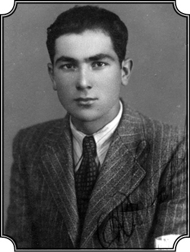
Karpat artık Türkiye’de. 20. yaş fotoğrafı (1943).
Türkiye’ye geldiniz, uzun süre hayallerinizi süsleyen anavatan topraklarındasınız artık. Trakya’yı geçtiniz, Sirkeci’ye geldiniz. Heyecanla bakıyorsunuz sağa sola…
Gece olduğu için göremiyorum. Sabaha karşı gün açılırken Sirkeci’ye geldim. Bir taksiyle, Ortaköy’de oldukları bana bildirilmiş olan bir akrabanın yanına geldim. Ve hemen o sabah, burada tıpta okuyan (benden iki sene evvel aynı medreseyi bitirmiş) Naip Muradasıl Tuna ismindeki arkadaşımı bulmaya karar verdim. Nihayet hayatımın bir amacına vasıl olmanın, anavatana gelmenin verdiği heyecan ve enerjiyle birkaç saat dinlendikten sonra bu arkadaşımı bulmaya çıktım. Adresi vardı; Veznecilerde bir talebe yurdu. Oraya giden Ortaköy-Fatih tramvayı varmış… “Herhalde bulurum” dedim ve Ortaköy’den yayan çıktım. Beşiktaş, Dolmabahçe, Eminönü tramvay hatlarını takip ederek Vezneciler’e geldim, Tıp Talebe Yurdu’nu buldum ve arkadaşıma da hemen o gün ulaştım. Konuştuk, hal hatır sorduk, havadisleri verdik filan. Çok iyi anlaştığım eski bir arkadaşımdı. Naip Tuna ismindeki bu arkadaşım sonra Amerika’ya gidip Minnesota Üniversitesi’nde tıp profesörü olarak çalıştı. Hatta Amerika’ya gelmesine ben biraz yardımcı oldum. Arkadaşımı görmeye gitmemin ana nedeni de üniversiteye girmek için ne yapmam gerektiğini öğrenmekti. Çünkü biliyordum ki Mecidiye okulundan mezun olanları doğrudan doğruya üniversiteye kabul etmiyorlardı, üniversiteye girmek için lise mezunu olmak gerekiyordu ve benimki gibi diplomalara sahip olanları lise son sınıfa alıyorlardı. Dediler ki, “Bir an evvel sen Mecidiye’den aldığın diplomanı Milli Eğitim Bakanlığı’na gönder, onlar muadelet kararı verirler, o kararı aldıktan sonra liseye kayıt yaptırırsın.” Nitekim öyle yaptım. Derhal diplomaları tercüme ettirdim, zarfa koydum, Milli Eğitim Bakanlığı’na gönderdim. Liselerde dersler başlamış, ben de bir an evvel okula girip derslere devam etmek istiyorum. Bekledim bekledim, eylül bitti, ekim geldi hâlâ bir haber yok.
Haydi Ankara’ya…
Kalktım, Ankara’ya evrakları takip etmeye gittim. İstanbul-Ankara tren yolculuğu sayesinde İstanbul’dan başka yerleri görmüş oldum ve ilk intibalarım bir hayli sarstı beni. Akşam Haydarpaşa’dan kalktı tren, Eskişehir’e geldi, Eskişehir’den yavaş yavaş Ankara’ya doğru ilerlerken sabah oldu ve bir istasyonda durdu. Polatlı civarında bir istasyon olduğunu tahmin ediyorum. Pencereden dışarıya baktım bir köy; yıkık dökük evler, perişan bir vaziyet. Bir de baktım ki evin birinden kamburu çıkmış iki kat olmuş ihtiyar bir adam çıktı. Duvar dibine, güneşin vurduğu bir yere yerleşti, güneş ışığında ısınmaya çalışıyor. Bir de ihtiyarı takip eden bir köpek… Köpek bu adamdan daha berbat, bir deri kemik kalmış… Adamın yanına çöktü, güneşte ısınıyorlar. Baktım, “benim vatanım bu ha, perişan bir vatan, nedir bu iş, ne olacak bu durum” dedim, “bu mu bizim gözümüzde büyüttüğümüz Türkiye?” İlk intiba çok sarsmıştı beni. Nihayet tren Ankara’ya geldi. Ankara’da bir başka akrabam vardı, Tulça’dan tanıdığım, onlara gittim. Onlar da Türkiye’ye muhacir olarak gelmişler ve Ankara’ya yerleşmişler. Ankara’da bir kahve işletiyordu adam. Hemen Bakanlığa gidip evraklarımı takip ettim ve buldum. Evraklarımı aldım, İstanbul’a döndüm ama dönmezden evvel bir gece de Eskişehir’e uğradım. Çünkü Eskişehir’de çok sayıda Babadağlı vardı. Onları buldum, hallerini gördüm. İşte kimi arabacılık yapıyor, kimi esnaflık. Sarmaş dolaş olduk tabii, “Aaah! Memleket kokusu getirdin bize” diye sarıldılar, kokladılar. Ondan sonra İstanbul’a geldim. Haydarpaşa Lisesi, Edebiyat G sınıfına kaydoldum. Erkenden kalkar, Ortaköy’den tramvayla Karaköy’e gelir, Karaköy’den vapurla Haydarpaşa’ya geçer sonra da yürüyerek liseye giderdim.
Her gün, sabah-akşam bu kadar uzun bir yolculuk, ders çalışabiliyor muydunuz bari?
Boş bir zaman bulduğum takdirde derhal ders çalışıyordum. Tramvayda, vapurda okurdum, trende okurdum. Tramvayda mesela o gün tarih dersi mi var, jeoloji mi var, ne varsa onları okuyordum. Fransızca fiilleri ezberlerdim. Akşam da aynı şekilde dönerdim. Fakat o uzun yolculuk, o kadar çok zamanımı ve enerjimi alıyordu ki bu şekilde devam edemeyecektim. Ne yapıp yapıp Haydarpaşa’ya leyli (yatılı) olarak girip tüm zamanımı ders çalışmaya vermem gerektiğini anladım. İlk sömestr zaten bitmek üzere... Nitekim sömestr bitti, karneler verildi. Çok iyi hatırlıyorum, yalnız kimyadan 6 almışım, diğer bütün derslerim kırık, istisnasız hepsi kırık. Çünkü çalışmaya vaktim olmadığı gibi zaten sömestrin yarısında gelmişim okula. En düşük notlar benimdi sınıfta, alay mevzuu olduk. Bana “Romanyalı Kemal” derlerdi, alay ettiler; “Romanyalı, ne aldın fizikten?” “2” “Oooo, bravo yaaa çok iyi almışsın”, “Fransızca’dan ne aldın?” “3” “Çok daha iyi ya, bravo, ilerlemişsin.” Acayip alay ediyorlardı. Tabii susuyorum bir şey söyleyemiyorum. Fakat durmadan da çalışıyorum gece gündüz. Şimdi burada bir de dil meselesi var. Rumenceyi fevkalade güzel biliyorum fakat Türkçem, Rumeli Türkçesi ve birçok kelime yabancı geliyor bana. Çünkü orada alışmamışız. Kitap da okuyorum ve yavaş yavaş bunlara intikal ediyorum ama kırıklar duruyor. Durmadan aileme mektup yazıyorum “bana para gönderin” diye. Çünkü yanımda getirmeme müsaade ettikleri 110 lira bitmek üzere, onu da tramvaya, vapura veriyorum. Misafir olduğum ailenin yanında kalıyorum fakat uzun müddet kalamayacağımı da biliyorum, anlıyorum bu durumu. Ve nihayet Aralık’ın sonlarına doğru oradaki akrabalarım bir yolunu bulup müsaade almışlar, bana 250 lira gönderdiler. O zaman 250 lira bir sömestrlik leyli kalmamı karşılayabilecek miktarda bir paraydı. Hemen o paranın tümünü yatırdım ve ikinci sömestrde Haydarpaşa Lisesi’nde leyli olarak tahsilime devam ettim.
Artık liseyi bitirmemek için bir bahane kalmadı…
İşte bu durum değişikliği benim için muazzam bir kolaylıktı. Bir kere normal gıda alıyordum, üç öğün yemek yiyebiliyordum. Tüm zamanım kendime aitti. Hemen geceli gündüzlü çalışmaya koyuldum. Herkes teneffüse çıkıyor sohbet filan ediyor, ben hemen kitabı alıp o on dakikayı bile okuyarak, çalışarak geçiriyordum. Çünkü başarılı olmam lazımdı. O sene liseyi bitirip üniversiteye girmem gerekiyordu. Üstelik kimya hariç her dersten kırık almışım. Benim geceli gündüzlü çalıştığımı gören arkadaşlar (hepsi de Anadolu’dan gelmiş çeşitli kafa yapılarında olan kimselerdi), takılırlardı bana. Hatırlıyorum, Oğuz isminde bir Adanalı arkadaş edinmiştim, Musa vardı o sınıfın en ileri gelen, zeki adamı. Onlar takılıyor ama ben hiçbir şeye aldırış etmiyordum. Bahar geldi en sakin yer neresi, karşıda Karacaahmet Mezarlığı, ben oraya gider çalışırdım. Sadece kaldığım lise derslerini değil, olgunluk sınavı için gereken dersleri de çalışmam gerekiyordu. Çünkü o devirde lisede okunan üç senelik dersleri kapsayan olgunluk sınavı yapılırdı. Yani hem sınıf geçme, lise bitirme, hem de olgunluk imtihanlarını vermek gerekiyordu.
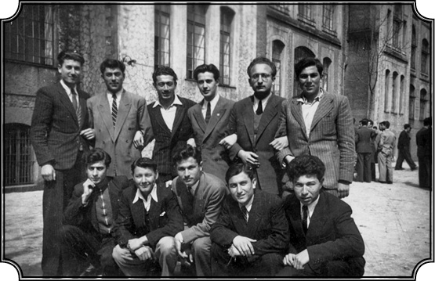
Haydarpaşa Lisesi’nde arkadaşları ile beraber (ayakta sağ başta).
Eee “Romanyalı Kemal Haşim” bunları verecek tabii, başka çaresi yok…
Muazzam bir inatla, kararlılıkla, geceli gündüzlü çalışarak, Haziran’da bütün imtihanları bitirdim, olgunluğu da verdim. Sınıfta 97 kişi vardı. 97 kişiden ancak beş tanesi bütün imtihanları verip liseden mezun olmuştu, onların içinde ben de vardım. Şimdi durum tam tersine dönmüştü. Benimle alay eden bütün o insanlar arasında bir efsane oldum. “Yahu” dediler, “geldiğinde doğru dürüst Türkçe bile bilmiyordu, bütün derslerden kırık aldı, ama hepsini düzeltti, bak şimdi Türkçesi mükemmel oldu. Bütün dersleri de geçti”… Doğruydu tabii, böyle olmuştu aynen. Mesela Fransızcadan 2 almıştım ama sene sonunda Fransızcada en iyi öğrenci bendim. Onların bilmediği şey, Rumence ve Latin grameri bilmemin, bana ne kadar yardımcı olduğu, işime nasıl yaradığıydı. Bir müddet sonra Fransızcayı öyle bir söktüm hatta öyle bir konuşmaya da başladım ki, hocam beni başka sınıflarda da örnek olarak gösterir oldu: “Bir Kemal geldi buraya hiçbir şey bilmiyordu, ama çalıştı, öğrendi. Bugün sınıfın en iyisi.”
“Proleter” Kemal
Ama sizin zaten bir Fransızca geçmişiniz vardı...
Tabii ama hocam da bilmiyor Latin gramerimin olduğunu. İşte Fransızcamın esas temelini orada attım ve sonra geliştirdim. Fransızcam hâlâ iyidir. Neyse sonunda liseden mezun oldum, üniversiteye girme hakkını elde ettim. Ama üniversiteye girmezden evvel halletmem gereken bir şey var: Geçim. Artık Romanya’dan para gelmiyor ve gelmedi de. O 250 liradan sonra tek kuruş alamadım. Savaş Rumenlerin, Almanların aleyhine dönüyordu, durumlar kötüydü orada. O zaman yazın çalışmam gerektiğine karar verdim, iş aramaya, soruşturmaya, ne yapabileceğime dair tanıdıklarıma akıl danışmaya başladım. Paşabahçe Şişe Cam Fabrikası’nda memur bir tanıdığım vardı, “Seni oraya işçi olarak alabiliriz” dedi. Kabul ettim. Haziran sonunda Beykoz’da bir oda kiralayarak Şişe Cam Fabrikası’na işçi olarak girdim ve orada ilk defa bambaşka bir hayatla karşılaştım. Düşününüz bir sene evvel Romanya’da her şeyi bol, zengin bir aile çocuğu olarak yaşarken şimdi bir fabrika işçisi olmuşum. Fakat bu olay benim hayatımdaki en büyük derslerden biri oldu. Çünkü artık gerçeklerle, Türkiye gerçeği ile karşı karşıya gelmeye başlamıştım. Orada Türk işçisinin, sınaî işçisinin hayatını gördüm…
Nasıl bir hayattı?
Hiç de iç açıcı değildi. Hastalıklı işçiler vardı. Ben mektepli olduğum için biraz kafa işi sayılan, irsaliye emirlerini doldurmak gibi işler yapıyordum. Züccaciye servisindeydim, siparişler gelir, siparişlere göre bardak, tabak ne varsa onları paketler, irsaliyesini tamamlar teslim ederdik. Yani o yaz bu şekilde çalıştım ve bu sayede Türk işçisinin hayatını tanımakla kalmadım, bu işçinin savunucusu haline de geldim. Belki her zaman söylenmez ama dikkat etmişsinizdir, haksızlığa karşı derin bir tepkim vardır. O tepkiyi orada içimde hissettim. Adamlar çalışıyorlar hiç yerine, bedavaya. Türkiye şartları öyleydi, değildi o ayrı mesele. Neyse ben orada bir süre çalıştım ondan sonra da Hukuk Fakültesi’ne kaydoldum.
Niye Hukuk?
Gayet basit. Bütün bu halime rağmen beni ilgilendiren ana konu toplumdu. Toplumlar nasıl değişir, nasıl idare edilir, kimler idare eder, nasıl idare eder, acaba bu olayları düzenleyen nedir? Daha Romanya’dayken kafamda bunlar vardı. Soruyordum; sosyal olayların kökeni nedir, irade midir yoksa koşulların bileşimiyle yeni olaylar mı ortaya çıkıyor? Yani ekonomik determinizm midir yoksa yukardan gelen bir irade midir? Bunun gibi meseleler kafamı kurcalıyordu. Fakat Paşabahçe’de bunları somut olarak görmeye başladım. Dikkatimi çeken bir olay da şudur: İşçiler her sabah kartlarını basarak içeri girer, ben de onların girişini izlerdim. Onların arasında üstü başı düzgün, iyi beslenmiş ve fabrikada fazla iş görmeyen, çalışmadan gezen bazı adamlar vardı. “Kim bunlar” diye soruşturduğumda söylediler, bunlar bizim polisin oraya soktuğu sivil polislermiş. “İşçiler arasında komünist fikirler yayılmasın, propaganda olmasın” diye bunlar oraya yerleştirilmiş.
Alenen yani?
Alenen. Apaçık.
Yıl 1943. 20 yaşınızda İstanbul Hukuk Fakültesi’ne girdiniz. Çalışıyorsunuz. Toplumu tanıyorsunuz. Nasıldı duygularınız, henüz iyimserlik dönemiydi galiba?
Mali durumum itibariyle bu kadar kötü vaziyette olduğum halde “illa para için çalışayım, daha paralı bir mesleğe gireyim” diye bir derdim yoktu. Ben kafamdaki soruların cevaplarını bulmak, o meseleleri anlamak istiyordum. “Bu fabrikada mali durumumun güçlüğü nedeniyle çalışıyorum” diyorum, “geçici bir durum bu, başka bir yerde daha iyi bir şeyler bulacağım” diye kendi kendime telkinde bulunuyorum. Yani bir taraftan da “iyimser”im, “bunlar geçici, bunların hepsine katlanabilirim” diye düşünüyorum. Maksadım bir şeyler öğrenmek ama biraz da bu toplumu daha iyi anlamaktı ve bunu en iyi anlatacak şeylerden biri de oradaki fabrikaydı. Derslere arada sırada girebiliyorum. İmtihanlara sıra geldi. Bütün imtihanlara girdim ve geçtim. Orada “üst mizan” diye bir usul vardı o zaman. Bütün derslerin not toplamı ortalaması 7 olursa geçiyordun, 7’den aşağı olursa, bütün derslerden kalıyordun. Son imtihanım Anayasaydı.
Bir “muhacir” anayasaya nasıl “anti-demokratik” der…
Dersin hocası kimdi?
Nail Kubalı, Anayasa profesörü. Gerçi bir ara Ali Fuat Başgil de gelmişti, o daha özlü bir hocaydı. O dönemde öğrenci hakkı diye bir şey yok… Numara nasıl verilir, ölçüsü ne, nasıl takdir edilir? Kimse hak arayamıyor yani. Hocalar mutlak hâkim, zaten hocalarla konuşamıyorsun. Hukuk 1. sınıfta 2000 kişi var. Bir salon vardı dolup taşardı, birçok öğrenci ayakta kalırdı, hatta öyle olurdu ki bazıları sırayla erkenden kalkıp gelir, yer tutardı. Bazıları da yerlerini, kızlarla tanışmak için kullanırdı, bir kız görünce “buyurunuz” falan derlerdi, hani küçük şeyler. Neyse son imtihan, Anayasa imtihanı, hocamız Nail Kubalı, Fransa’da tahsil görmüş, daha çok Batı hukukuna meyilli bir insan. Sözlü imtihan için bizi beşer beşer alıyorlardı. Benden evvel Macide isimli bir kız imtihana girdi, Romanyalıymış, doğum yeri Romanya, çok küçük yaşta gelmiş. Babası Şevket Bey’i de tanıdım sonra, lise hocasıymış, çok muhterem bir zattı. Neyse imtihanda kimliğimizi veriyoruz, hoca kimliği okuyor, “Sen Romanyalı mısın” dedi Macide’ye. O da “evet” dedi “ben orada doğmuşum.” Bir şeyler sordu kıza “sen bir şey bilmiyorsun” dedi ve kötü not verdi.
Yani göçmenleri aşağılama var, önce onu hissettiniz?
Evet, sonra baktım yanındaki asistana dönüp, “bunların” dedi, “hepsi böyledir, muhacirler, dışarıdan gelmiş olanlar Konyalıyız falan derler.” Sıra bana geldi. Benim de kimliğimde o zaman “Romanyalı Kemal” diye yazılı. “Otur” dedi, oturdum. Bugünkü gibi hatırlıyorum, “sendikacılık nedir ve bu konuda kimler ne söylemiştir” diye sordu. Gayet güzel anlattım. İkinci soru 1921 Anayasası. Bilirsiniz çok az maddesi vardır. Dedim ki, “bu Anayasa ilk Anayasadır, modern Türkiye’nin Anayasasıdır” şudur budur, “fakat hükümleri itibari ile anti-demokratiktir.” “Vayyy! Sen nasıl anti-demokratik dersin bu yasaya, çalışmamışsın dersini”, “sıfır, sana sıfır veriyorum” dedi. “Hem de” dedi “sen tembelsin bak, birinci soruyu çok iyi cevaplandırdın, bu sendikacılık bahsinin altından birçok kimse kalkamazdı, sen buna gayet güzel cevap verdin, zeki öğrencisin ama tembelsin. Çık! Sıfır!” Çıktım. O sıfır üst mizanımı mahvetti. Kapıdan dışarı çıktım, dedim ki “bu beni bıraktı ama bırakmakla kalmadı, bir de bana iftira ediyor.” Kapıyı açtım, geri içeri girdim, “notlar değişmez” dedi. “Hayır efendim not değiştirmeye gelmedim” dedim. “Siz beni haksız olarak itham ettiniz” dedim. “Ben tembel değilim, ben hayatımı kazanmak için bir fabrikada geceli gündüzlü çalışıyorum ve derslerimi vakit bulduğum zaman okuyabiliyorum, benim boş on dakikam yoktur, ben tembel değilim, hiçbir zaman da tembel olmadım” dedim. “Beni bırakabilirsiniz ama bana tembel diyemezsiniz, bunu iyice bellemenizi isterim” dedim. Gene “Çık dışarı!” dedi ve ben böylece Haziran’da üst mizanı tutturamadığım için Eylül’e kaldım.
Yani sadece Anayasa’ya anti-demokratik dediğiniz için değil…
Romanya’dan geldiğim ve bu adamın muhacirlere karşı böyle bir tepkisi olduğu için haksız yere göz göre göre kaldım. Fakat ben yazın hazırlandım, sonra güz döneminde tekrar girdim, gene sorular sordu, 8 verdi ve böylece sonbaharda ikinci sınıfa geçtim normal olarak.
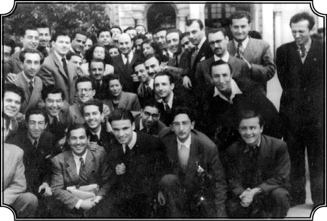
Hukuk Fakültesi’nde arkadaşlarıyla, (ilk sırada en önde soldan üçüncü).
Bu kez bir tartışma ya da aşağılama yaşamadınız?
Hayır. Fakat bu olayın intikamını seneler sonrası Amerika’da almak nasip oldu. 1960 müdahalesi olmuş, ben Amerika’da doktoramı almışım, kitabım yayınlanmış ve Harvard’ın Ortadoğu bölümündeyim. Onların davetlisi olarak bir seneliğine oradayım. Türkiye’de 1960 hükümet değişimi olmuş, Nail Kubalı hocam da Amerika’ya Harvard’a gelmiş. Sözde “o harekete iştirak etmiş, ihtilalcilerin akıl hocalığını yapmış” falan filan… “Mükâfat olarak da Amerika’ya gönderilmiş”miş. Tabii beni derhal tanıdı, hatırladı. Fakat o 1944 yılındaki olaydan o da ben de tek kelimeyle bile söz etmedik. Kendisine gereken hürmeti, ilgiyi gösterdim. O da bizi evine davet etti, yemek verdi. O zaman Şerif Mardin de oradaydı, beraberdik. Şerif Mardin de tezini yazıyor veya kitaba dönüştürüyordu. Yemekte birçok konudan, Türkiye’de olanlardan, hazırlanacak olan yeni anayasadan konuştuk. Ben, “Ama hocam bu meselelerin bazıları 1921 Anayasası’na da girmişti, o Anayasa’nın tartışmalarında da şöyle bir şeyler söylenmişti” gibisinden bazı açıklamalar yaptım. “Yok” dedi “biz o işlerin bu kadar teferruatına kaçmayız, bunları bilmeye o kadar da gerek yok” dedi. “Siz bunu almışsınız müthiş bir ihtisas haline getirmişsiniz, biz bu şekilde uğraşmayız” gibisinden bir cevap verdi. Yani beni on dört sene evvel çaktırdığı, 1921 Anayasası’nın ancak ismini, kalburüstü bazı maddelerini bildiğini göstermiş oldu. Benim o Anayasa’ya niye “antidemokratik” dediğimi de anlamamış, anlamak için kafa yormamış olduğu, dolayısıyla beni kasten bıraktığı kanıtlandı. Yani “Sizin gibi böyle sosyal analizlere dayanarak falan biz bunları incelemiyoruz” diyerek bizzat kendi ağzıyla bu konuda fazla bilgisi olmadığını itiraf etmiş oldu.
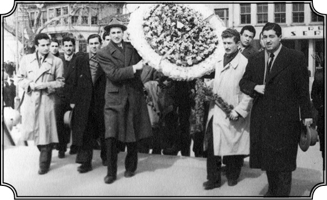
Hukuk Fakültesi’ndeki arkadaşlarıyla son sınıfta Bursa gezisinde (1947), (soldaki çelenk taşıyanın arkasındaki Karpat).
O zaman hatırlatmadınız mı hocaya, o olayı?
Hatırlatmadım. Benim bu tür bir adetim yoktur, yani ne zevk alacağım ki ondan. Belki de dersten bırakarak bana bir iyilik yapmıştır. İnsanları daha iyi tanımama yardımı olmuştur. Biz nereye gitsek yabancı muamelesi gördük zaten. Romanya’da bizi “Türk” diye aşağıladılar, buraya geldik “Romanyalısın sen, hakiki Türk değilsin, olamazsın” dediler. Sadece okulda değil, günlük hayatta da bu tür aşağılamalara ve benzeri birçok şeye maruz kaldık. “Siz dışarıdan gelmişler, hakiki Türk değilsiniz siz. Sizin kanınıza gavur kanı karışmış, hakiki Türk olamazsınız” gibi lafları çokça işittim. Evet, bunu bizzat yüzüme söylediler. Mesela sonradan bir yerde vali olmuş öğrencinin biri bunları yüzüme söyledi ve hatta “sen kendine Türk dersen seni öldürürüz. Sen Türk değilsin” diye tehdit bile etti.
Bunlar da Türk faşistleri mi? O dönemdeki…
Evet. Bunlar da Türk faşistleriydi. Bana kafa tuttular, “dışarıdan gelmiş gavursun” diye. “Peki, Atatürk hakkında ne diyebilirsin? O da Makedonya’da Selanik’te doğmuş, o da Rumelili. Onun gibi daha binlerce kişi devlet idaresinde memur, demek ki hepsi gavur” diyordum ben de. Ama ırkçı, faşist insanlardı bunlar. Neyse işte 2. sınıfa böylece geçtik. Bu arada ben, eski çalıştığım yerde ve kaldığım odada devam edemeyeceğimi, çok vakit kaybettiğimi anlamıştım ve arayışlar içindeydim. Fatih’te yeni açılmış olan Fatih Medresesi yurtlarında bir arkadaşla beraber bana bir oda verdiler, orada kalmaya başladım. Bu şekilde muazzam bir zaman kazandım. Fakir öğrencilere o zaman bedava bulgur falan veriliyordu öğlen yemeği olarak, oradan da faydalandım. Zamanım boldu artık ve nerede geçiyordu bu zaman? Kütüphanede tabii ki…
Kütüphanenin iki muhteşem insanı
Kendinizi tam olarak okumaya verdiniz artık…
Üniversite kütüphanesi benim yurdum oldu. Kütüphane açılır açılmaz ben oradayım. Bir iki saat derslerimi çalışır, hazırlar, ondan sonra kütüphaneden kitaplar alır okurdum. Ama artık roman dışında, sosyal ilimlere dönük kitaplar da okumaya başlamıştım. Orada iki memur vardı, Ali ve Naci Beyler. Ali Bey gayet geleneksel, ibadetini düzenli yapan, namazını kılan, çok iyi bir Müslüman. Buna karşılık Konyalı Naci Bey bilinen bir şair. Naci Bey’in soyadını hatırlamıyorum ama edebiyatımızda yeri olan bir adam. Naci Bey, Ali Bey’in tam tersi ateist, maddiyatçı…
Yani materyalist felsefe anlamında maddiyatçı değil mi?
Materyalist anlamda maddiyatçı ve aynı zamanda teorik olarak homoseksüel. Ama tacizci değil, bize herhangi bir sataşması falan olmadı hiç. Fakat benimle rahat konuşurdu, yani gerek Ali, gerekse Naci Bey’in bana karşı büyük hürmetleri vardı. Çünkü beni görüyorlar, ciddi ciddi okuyan, bir şeyler öğrenmek isteyen bir adamım. Ali Bey, Şark İlimlerine, Farsçaya, Arapçaya hâkim, ondan bunları öğreniyordum, Naci Bey’den ise materyalizmi. Bu konuda bütün kitapları okumuş, konuşuyoruz. “Naci Bey homoseksüellik nedir, nasıldır” diyordum işte rahatça, o da “Yunan’da bu var, tarihte çok örneği var” diyor ve anlatıyordu. “Olamaz” diyordum ben. “Bir erkek” diyordum “başka bir erkeği nasıl sevebilir?” “Yoo sen anlamıyorsun” derdi. “Naci Bey benim aklım almıyor, ben böyle olamam” diyordum. Böyle böyle tartışmalarımız, sohbetlerimiz oluyordu onunla. Bunları anlatmamın sebeplerinden bir tanesi şudur, yani o devirlerde de bu nazik meseleleri konuşacak, dile getirecek adamlar vardı ve ben bu adamlarla tartışıyordum. Onlar benden 40 yaş falan büyük ama mütevazı davranırlardı, “sen ne anlarsın, cahilsin” falan demezlerdi. Bana hürmetleri vardı. Hatta bilmediğim kitapları bulup getirip verirler, ben de okurdum onları. Böylece ikili bir tahsil görüyordum; bir okulda, bir kütüphanede. Ali ve Naci Bey, ben bu iki adamı hiç unutamam. Yalnız bana yaptıkları yardım nedeniyle değil, iki ayrı insan grubunu temsil ettikleri için de. Türkiye’yi temsil ediyorlardı. Bir tarafta dindar, Arapça ve Farsçaya hâkim bir adam, diğer tarafta materyalist bir adam.
Çok tartışırlar mıydı?
Öyle düşünüldüğü gibi bir tartışma yoktu aralarında. Yan yana masaları vardı, birbirine karşı çok hürmetkârdılar, çok nazik davranırlardı. O kadar iyi geçinirlerdi ki benim için demokrasinin en açık misali olmuşlardı. Bunlar kadar birbirine zıt kutuplar… Bir tarafta durmadan abdest alıp namaz kılan bir adam ve diğer tarafta her akşam şarabını alıp içen Naci Bey. Tezata bakın. Bazen beraber yürürdüm Naci Bey’le. Nuruosmaniye Camii’ni geçtikten sonra oralarda bir yerde oturuyordu. Bir yeri vardı orada, uğrar şarap şişesini alır, gazeteye sarar, cebine koyar evine giderdi. Evli falan değildi. Ali Bey de galiba evlenmiş ama hanımı ölmüş. Fakat yine misal olarak beni etkileyen bir olay var onu anlatayım. Kütüphanede o tarihlerde temizlik yapan bir kadın vardı. Kadının üç mü, dört mü ne çocuğu varmış. Kocası aniden ölünce bu kadınla çocuklar böylece babasız, kocasız halde ortada kaldılar, perişan olacaklar, belli bu durum artık. Ali Bey biliyor musunuz ne yaptı? Kadınla evlendi, çocukların bakımını üstlendi ve çocukları okuttu, hizmetçi bir kadınla evlendi işte.
Sahip çıktı onlara…
Sahip çıkmaktan daha büyük bir şeydi yaptığı. Yani bunlar çok başka bir dünyanın insanları. İnsanların ne kadar değişik, ne kadar inançlı olabileceğini anlatıyor bunlar bana. Böylece o kütüphane benim için ikinci bir okul oldu. Okulda öğrenmediğim birçok şeyi orada öğrendim. Sonra orada birçok arkadaş da edindim. Bir taraftan da Türkiye’de olup bitenleri yakından takip ediyorum. Artık o Romanya’dan gelmiş saf, duygulu adam yok. Realist, gerçekleri gören, hayatı anlayan ve o devirde Türkiye’ye hâkim olan tek parti rejimini asla benimsemeyen bir kişi olarak görüyorum kendimi. Bir mücadeleci, siyasi bir mücadeleci olarak görüyorum kendimi.
O yıllarda okul ve eğitim dışında başka neler yaptınız, hareketlere girdiniz mi, politika ile aktif olarak ilgilendiniz mi?
Diyebilirim ki Romanya’daki okul süresince ve burada liseyi bitirip Hukuk 2. sınıfa gelinceye kadar ben genellikle (eski tabirle, iktisap ettim, yani durmadan aldım) içime attım, kültür birikimini, dil birikimini her şeyi belirli bir seviyeye getirdim. Hukuk 2. sınıftan sonra bir dönüşüm içine girdim. Artık ben yalnızca almıyordum; aldığımı tartıyor, sorguluyor, etrafıma yeni gözlerle bakıyor ve aynı zamanda bu dünya içinde, toplum içinde kendime de bir rol hazırlamaya başlıyordum. Yani şimdi geriye bakınca öyle gözüküyor. Çünkü 2. sınıftan itibaren bende bir değişiklik olmaya başlamıştı. Artık mahcup, çekingen, fikrini ifade etmekten çekinen bir muhacir olmaktan çıkmış, bu toplumun bir parçası olmuştum.
Kozasından çıkmaya başlıyor
Kendinize güven gelmişti…
Kendime bir güven geldiği gibi, kendimi bu toplumun bir üyesi, bu toplumda büyümüş, yetişmiş etmiş bir kimse gibi hissetmeye, öyleymiş gibi hareket etmeye başladım. Artık Romanya’da doğmuş büyümüş olmam vesaire, yavaş yavaş tatlı bir hatıraya dönüşüyordu. Aile bağlarım devam etmekle beraber, artık hayatımın ilk basamağı olan Romanya’ya dönemeyeceğim belli olmuştu. Yönüm ileriye doğruydu bundan böyle. Evet, sene 1945… 1944-45’te ben her zaman Romanya’ya dönebilirdim çünkü elimde pasaport vardı, 24 saat içinde orada olabilirdim. Komünist rejim tam yerleşmemişti. Oradaki malımız mülkümüz hâlâ duruyordu, evimiz her şeyimiz vardı daha. Elimizden malların alınması 1950’lerin başında oldu. Yani o tarihe kadar daha beş altı sene eski düzen devam etmişti. Her an dönebilirdim ve dönseydim orada herhalde bir şeyler yapabilirdim. Artık üniversiteye girmişim, orada da üniversiteye devam edebilirdim, ailem orada, her şeyim oradaydı. Bunları şunun için söylüyorum, benim için artık her şey Türkiye, Türk toplumu olmaya başlamıştı. “Dönüşüm” dediğim biraz da buydu. Eskiden kendimi Romanya’da yabancı, azınlık bir Türk gibi hissederek birçok şeyden uzak durmuştum. Buraya geldiğim zaman da yabancı bir göçmen olarak bir süre çekingenlik, tedirginlik hissetmiştim, ama o duygular yavaş yavaş kayboluyordu ve 2. sınıfa geçtikten sonra ben artık bambaşka bir insandım. Kendi başıma karar alıp uygulayabiliyordum ve bilhassa kendi başıma her konuda bir fikir, bir yargı sahibi olabiliyordum ve konuları, olayları sorgulayabiliyordum.
Yazın hayatınıza ilişkin ipuçları da çıkmaya başladı mı?
İşte o devirde yazı ve çalışma hayatıyla ilgili ilk tecrübemi yaşadım. Hâlâ geçim sıkıntım devam etmekle beraber, ikmale kalmış öğrencilere Fransızca dersleri vererek, şuraya buraya tercümeler yaparak masraflarımı biraz olsun karşılayabiliyor, üç beş kuruş kazanabiliyordum. Esas arzum ise kendimi tamamı ile okumaya, entelektüel çalışmaya vermekti. Yani karın doyurmak için zamanımın büyük bir kısmını harcadığım bir hayat istemiyordum. Para kazanmak için bir saat, iki saat, belki üç saat harcayabilirdim ama esas olarak istediğim, zamanımın büyük kısmını entelektüel gelişimime vermekti. Bu konuyu bir iki arkadaşa açtım ve onlar da “Hamdullah Suphi Tanrıöver var onunla bir konuş” dediler. Hamdullah Suphi rahmetli, Suphi Paşa’nın torunuydu. Suphi Paşa eğitime büyük katkısı olan çok önemli bir adamdı. Hamdullah Suphi Tanrıöver de uzun zaman taaa savaşa kadar Bükreş’te elçilik yapmıştır. Hem oradaki Türklerin Türkiye’ye uyum sağlamasına yardımcı olmuştur hem de Atatürk reformlarının tatbikatını sağlamıştır. Mesela bizim medresede fes yerine şapkanın giyilmesine ön ayak olmuş bir insandır. Onun için arkadaşlar dediler ki “Mademki sen bu kadar kitaba, okumaya düşkünsün, onun için Hamdullah Suphi Tanrıöver’e bir git, belki sana bir yardımı dokunabilir.” “Aa” dedim “iyi fikir, ben gidip bir sorayım” ve gittim. Hamdullah Suphi Tanrıöver’in Göztepe’nin ilerisinde bir yazlığı vardı, oraya gittim. Kendisini de çok iyi tanıyorum. “Acaba bir yerden bir imkân sağlanabilir mi şöyle kendimi bir kütüphaneye kapamak istiyorum, senelerce oradan çıkmamak istiyorum” falan diye derdimi anlattım. Benim bu isteğime hayret etti. Sonra “oğlum, bir projem var belki sen onu yaparsın, hayata geçirirsin” dedi. Hamdullah Suphi Tanrıöver rahmetli, Basarabya’daki Gagavuzlarla meşgul olmuştu. Gagavuzların bir kısmını buraya getirmek istemişti.
Gagavuzlar, Anadolu Selçuklularından, Sultan İzzeddin’den gelme değil mi? Keykavus adının değişmesiyle galiba Gagavuz oluyor?
Gagavuzlar, Sultan Keykavus’un adamlarıdır. Baba Saltuk’la 1260-63 senelerinde gelmişler, sonra onların bir kısmı Anadolu’ya, Balıkesir’e dönmüş, bir kısmı Babadağ’da kalmış ve bir kısmı da (Bizans İmparatorluğu egemenliği altında olanlar) biraz da Bizans’ın zoruyla, Hıristiyan olmuşlardır. İşte bunlara Gagavuz denilmiş. Keykavus’tan gelme olarak Gagavuz. Gerçi Gagavuzların kendileri eskiden Müslüman’dı, kanıtı da dilleridir. En halis Rumeli Türkçesini konuşurlar. Bu dil, o devirdeki Türklerin oluşturduğu bir dildir ve bu dilin üç ayrı Türk kavmi tarafından konuşulduğunu ve bunların izlerinin hâlâ Balkanlar’da yaşadığını Tadeusz Kowalski isminde Polonyalı bir Türkolog açıkça ispat etmiştir. Kowalski Karayım denilen bir Yahudi kavminden geliyordu. Karayımlar Tevrat’ı kabul eden kuzeyli bir Türk kavmidir. Halen Polonya’da yaşarlar. Üç değişik devirde gelen Türk grupların dili Rumeli’de var. Bunların arasında Selçuk ağzı da var. Hepsi aslında Oğuz lehçesidir. Kuzeyden gelen Kıpçaklar, Peçenekler ise Kıpçak Türkçesini konuşurlardı. Aralarında bazı fonetik farklar var, kelime farkları var ama cümle yapısı aynı. Tadeusz Kowalski bunu fevkalade güzel ispat etmiştir. Dolayısı ile Paul Wittek de gene çok sağlam bir şekilde Gagavuzların Keykavus’un adamları olduğunu, isimlerinin de Keykavus nedeniyle Gagavuz haline dönüştüğünü ve sonra da Hıristiyanlaştıklarını anlatır, bu durumu ispat eder. Gagavuzlar Batı Karadeniz civarında yaşarlarken, 19. yüzyılda bugün Moldova dediğimiz bölgeye göç etmişlerdir. Moldova Türklerden Ruslara geçince oradaki Türk unsurlar (benim ailem de bunlara dahil), Dobruca’ya göçmüşler. Oralar boş kalınca, Rusya 1812’de burayı iskân etmek istemiş ve Bulgar, yani Hıristiyan göçmenleri çağırmış. Böylece gerek Bulgarlar, gerek Türkçe konuşan bu Hıristiyan Gagavuzlar oraya getirilerek iskan edilmişlerdir. Yani Müslüman Türkler oradan çekilmiş, yerine Hıristiyan Türkler gitmiş. Gagavuzların yerleştikleri yerlerde bazı eski köylerin isimleri Türk isimleridir ama onlar da sonraları kurdukları köylere Türk ismi vermişlerdir. Mesela bunlardan biri Beşelma, meşhur bir köy. İşte rahmetli Tanrıöver bu Gagavuzları keşfediyor, buluyor ve Türkiye’ye gelmeleri, veyahut da hiç olmazsa, Türk diliyle aşina olmaları için elinden geleni yapıyor. Nihayetinde orada Türk okulları tesis ediliyor. Bizim Mecidiye Medresesi’nden mezun olan birkaç arkadaş oraya giderek öğretmenlik yapıyor, hatta Gagavuz kızlarıyla evleniyorlar falan.
Tanrıöver bu çalışmayı size devretmek istiyor yani?
İşte o gün, bu Gagavuzlar meselesiyle meşgul olan Tanrıöver bana dedi ki, “Benim elimde bir sürü evrak var Gagavuzlarla ilgili, sana vereyim, sen otur çalış, bunlar hakkında bir şey yaz, üç beş kuruş da yardım ederim” falan. Önemsiz bir miktar ama gerçekten para da verdi bana. Evrakları aldım. Ve İstanbul’da bulunan bazı Gagavuzlarla da temas ederek onlardan da bilgiler topladım, resimler aldım, tarihleri, kültürleri üzerine de araştırmalar yaptım ve üçüncü sınıfa geçeceğim o yaz, oturdum büyük bir zevkle Gagavuz tarihi ve kültürü hakkında bir kitap yazdım. Şimdi düşününüz, edebi Türkçe’ye yeni hâkim olmaya başlamışken, kitap yazma konusunda hiçbir tecrübem yokken bunu yaptım. Dolayısı ile benim için bir çeşit yeni eğitim oldu bu çalışma. Kitabı hazırladım, Hamdullah Suphi’ye götürdüm. Baktı inceledi. Tabii kendisi şair, yazar, hatip olduğu için benim üslubumu beğenmedi. “Bunu biraz daha düzeltmek gerek, daha akıcı bir Türkçeye çevirmek gerek” falan diyerek bazı eleştirilerde bulundu. Bunu pek beklemiyordum açıkçası. Moralim çok bozuldu yani. İki yüz sayfa tutan kitabı aldım bir tarafa koydum, “zamanı gelince çalışırım” diye. Üstelik o Gagavuzlar kitabını hazırlamak için çok araştırma yapmıştım. Birçok tarihi eser okumam, Selçuklular devrini araştıran kaynaklara gitmem gerektiğini görmüştüm. Ayrıca Hamdullah Suphi’nin bana verdiği evraklar arasında fazla bir şey de yoktu. Mesela orada “Çakır” diye bir papaz vardı, Gagavuz papaz. Bu papazın Türkçe yazdığı “Gagavuzların İstoryası”(Gagavuzların Tarihi. Rumence de tarih karşılığı olarak “Istorie” kullanılıyor) diye bir kitapçığı vardı. Bazı kimselerin şiirleri vardı, gene Türkçe yazılmış. Hatta hatırlıyorum bir tanesi, “bizi alın” “biz sizin kardeşiniziz” filan gibi sözleri olan bayağı heyecanlı bir şiirdi. Onlar da Türkiye’ye gelmek istiyorlar ya, o duyguları ifade eden bir şiirdi işte. Bunların yanı sıra biraz da gazete kupürleri vardı. Onların hepsini kullanmıştım. Ama Hamdullah Suphi’den fazla bir destek görmeyince, yani “bunu yayınlayalım” diye bir istek görmeyince o çalışmayı bir yana attım. Seneler sonra Gagavuz yerini ziyaret ettim.
İlk çalışmanız hüsranla sonuçlandı yani…
Ama şunu söylemeliyim ki bu süre zarfında bu çalışmamdan elde ettiğim kazanç daha önemliydi. Araştırma metotları, terkip yapma yani her şeyi bir araya getirmek gibi çalışmalar benim için büyük önemi olan dersler oldu. Bilhassa Gagavuzlar hakkında adeta uzmanlaşmış derecede bilgi sahibi oldum. Diyeceksiniz ki, “ne oldu bu çalışmanız?” Başka çalışmalara dalınca unuttum gitti. Fakat Rusya’nın dağılmasıyla ve Gagavuzların Moldova’daki varlıkları sorununun tekrar ortaya çıkmasıyla merakım tekrar uyandı ve birkaç yerde tebliğ verdim. Gagavuzların edebiyatı, kültürleri gibi konulardaydı o tebliğler, basıldı yayınlandı. Sonra o yazdığım kitabı buldum. Yirmi beş-otuz sene sonra. 22 yaşında genç bir öğrenci olan Kemal Karpat’ın yazdığı kitabı Profesör Kemal Karpat olarak okudum ve beğendim, hiç de fena değildi. Tabii ki bir sürü eksikleri, hataları falan vardı ama her bir bilgi hakkıyla değerlendirilmişti. Ondan sonra “o kitabı yayınlayayım” dedim ve bu amaçla bir sürü araştırma yaptım, hatta Gagavuzların bölgesine gittim (bundan yedi-sekiz sene evvel), ziyaret ettim oraları. Üniversitede hocalık yapan birkaç profesörle tanıştım ve bu kitabı son şekline getirmek için bir sürü malzeme topladım. Ama kitabı toparlayamadım, duruyor hâlâ, yazılacak. Şimdi anlatmak istediğim şuydu: Bu çalışma çok önemli bir olaydı benim için. Yani ben araştırma ve yazın hayatına beklemediğim bir anda, Hamdullah Suphi Tanrıöver’in bir sözüyle girdim ve ondan çok faydalanmış oldum.
Tarih araştırmacısı olarak ilk eyleminiz olan bu çalışma kendiniz ve geleceğiniz hakkında nasıl bir ipucu verdi, mesleki yönelim olarak içinizde ilk istek o zaman mı uyandı, hatırlıyor musunuz?
Bu gibi olaylar ve ondan sonra üniversitedeki dersler ve benzeri şeyler benim gerek ilim, gerek araştırma, gerek fikir dünyası hakkında çok yeni tavırlar almama neden oldu. Bir kere her şeyden evvel bence ilmin temeli olan critical, yani eleştirel, şüpheci yaklaşımı benimsememe yol açtı. Bana sunulan hiçbir şeyi incelemeden, sorgulamadan kabul etmemeye başladım, bu çok mühim bence. Bizde tenkit dendiği zaman mutlaka yanlış, eksik tarafını çıkarmak anlaşılıyor, hâlbuki tenkidin manası bambaşkadır. Tenkidin manası yapıcıdır, “acaba yaklaşımı doğru mudur, malzemeyi kullanış tarzı doğru mudur, olayları sorgulaması, sıralaması, mantıki midir” gibi bir yaklaşım sahibi olmak demektir. “Acaba bu yazılanlar maksatlı mı değil mi, yani belirli amaçlara hizmet etmek için mi yazılıyor, yoksa gerçeği ortaya koymak için mi yazılıyor?” İşte 2. sınıftan itibaren olaylara bu şekilde sorgulayıcı olarak yaklaşmaya başladım. Tarih anlayışımda, görüşümde de gene bu sıralarda önemli değişiklikler meydana geldi.
Resmi tarihten kaçış yok
Görüşlerinizde değişimlere yol açan insanlarla mı tanıştınız, hocalarınızın mı etkisi oldu?
Özellikle tarih alanındaki görüşlerimdeki değişiklikte en büyük pay ekonomi tarihi profesörü rahmetli Ömer Lütfi Barkan’a aittir. Şimdi rahmetlinin yardımını ve dolayısı ile benim entelektüel gelişimime katkısını açmazdan evvel şu noktayı da belirtelim: Romanya’da çok tarih okumuştum ondan sonra da durmadan okudum. Fakat Rumenlerin Osmanlı tarihini, Türk tarihini ele alışlarının çok tarafgir, sübjektif olduğunu gördüm ve o devirde hükümet tarafından desteklenen bir tarih görüşünün gerçek olarak kabul edildiğini ve insanların kafasında “mutlak gerçek budur” diyerek mıhlaştığını gördüm. Bu yaklaşımın, kendi milletimin aleyhine olduğunu ve gerçeğin böyle olmadığını da sezdiğim için hoşuma gitmedi, “bu yaklaşım doğru bir yaklaşım değil” dedim. Aksini ispat edecek durumda değildim, karşı çıkıyordum o kadar. Türkiye’ye gelince ve burada da resmi tarih ile karşılaşınca benim bu tür bir tarihe karşı olan tepkim daha da arttı.
Resmi tarihten kaçış yok yani…
Bu sefer burada da bana sunulan tarih kitabındaki yazıların pek de sağlam olamayacağını düşünmeye başladım. Reddetmiyor, inkâr etmiyor fakat muazzam bir şüphe ile ele alıyordum. Resmi tarih, yani “devletin felsefesine yardım edecek, bilhassa devletin siyasi amaçlarını gerçekleştirecek bir tarih, tarih olamaz” dedim. Bizde de yapılan, bir yerde tüm tarihi Cumhuriyetle başlatmak, daha önceki geçmişi yok saymak. Bu tarih anlayışını da kabul edemiyordum, çünkü Osmanlı tarihi bir yerde yok oluyor, onun yerine 1923’le yepyeni bir tarih ortaya çıkıyor. Bu konu daha o zaman beni rahatsız etti.
Tam olarak neden rahatsız etmişti?
Neden rahatsız ettiğini açıkça söyleyeyim. Osmanlı olan her şey kötü gösteriliyor, inkâr ediliyor, altı yüz senelik bir tarih adeta Batılıların anlattıklarından çok daha kötü gösteriliyor. Tamam, benim o tarihteki bilgilerim buna karşı yeni bilgiler, argümanlar sunacak derecede değildi. Fakat gittikçe gelişen şüpheci, eleştirel yaklaşımım nedeniyle de bana sunulan her şeyi olduğu gibi kabul etmiyorum. Onun için resmi tarihte Osmanlıyla Cumhuriyet tarihinin birbirinden tamamıyla kopmuş olarak sunulması, daha o zaman da bana çok yapay gelmişti. Üstelik bu resmi tarihe itirazımın temeli de gene ampirik esaslardan yola çıkarak bulduğum kanıtlardı. Bir kere İstanbul’da yaşıyorum. Okuduğum üniversite Osmanlı zamanında yapılmış, eski Harbiye Nezareti. Hadi onu bırakalım, İstanbul’da gözle görülecek, iftiharla başkalarına gösterilecek birçok eser var; Türk sanatı, Türk deha mimarisi diye bana Beyazıt Camii, Kapalıçarşı, Süleymaniye falan gösteriliyor. Bir de bakıyorsun bunlar Osmanlı sultanları zamanında yapılmış ama birden bire Türk oluveriyor. Türk dehasının, Türk mimarisinin eseri oluyor, yani Osmanlı yok. Şimdi Osmanlının her tarafı, her dönemi kötü ama yaptığı eserler iyi ve sen onlara birdenbire sahip oluyorsun, “Türküm” diye. Bu yaklaşıma karşı benim savunacak hiçbir şeyim yoktu fakat “bunları birbirine bağlaman lazım” diyordum kendi kendime. Ondan sonra da anlatacağım gibi yazılarımın, çalışmalarımın büyük bir kısmı, bu bağlantıyı kurmakla geçmiştir, ağırlık buraya verilmiştir. O zamanlar sadece şüpheler uyanmıştı içimde ve kabullenemiyordum bana tarih olarak sunulanı. Ama içinde bulunduğumuz atmosferi düşünün: Resmi tarih bunu söylüyor ve siz bunu sorgulayamıyordunuz. Allah korusun ya “bunlar doğru olmayabilir” deseniz… Bilhassa benim gibi Romanya gibi komünistliğe doğru giden bir ülkeden gelmiş bir kimse söylese bunları, halim ne olurdu? Benden tümüyle şüphe edeceklerdi.
Hemen kara listeye…
Ve nitekim de öyle oldu sonradan. Ben de düşünüyordum ne yapabilirim diye. Çünkü sorgulamak ve kabul etmemek yetmiyordu. “Peki” dedim kendi kendime “madem sen bunu kabul etmiyorsun o halde doğrusunu gösterecek yöntemin nedir senin?” Bu da bir metodoloji meselesi oldu yani. Daha Hukuk 2. sınıfa geldiğim zaman sosyal ilimlerde tarih dahil, metodolojinin yani yöntemin, yaklaşımın, hareket noktalarının ve benzerlerinin çok önemli olduğunu anladım. Ondan sonra yavaş yavaş kavramlar meselesinin üzerine gittim. “Sen çok iyi bir kafaya sahip olabilirsin, geliştirdiğin bazı yöntemler de olabilir ama o da yeterli değil” dedim. Bir yerde bir kavram, konsept lazım. Binbir olayın üstüne çıkmış ve bu olaylara ışık tutan, yani bütün bu olayların belirli bir istikamette geliştiğini gösterebilecek bir konsept olacak. O konsept mihverdir, yani “merkezi” bir noktadır, eksendir. O olmadan senin bilgilerin yok olur. Bizde o devirde bu metodolojik yaklaşım, kavram, analiz şekli vesaire gelişmemiş, hiç yok. Şimdi gelişiyor ama o devirde hiç yoktu. Ben de bunları açık seçik göremiyordum fakat içimden, kafamdan hissediyordum. Ne olması gerektiğini tam bilmiyordum ama ne olmaması gerektiğini görüyordum. Nitekim Gagavuzlar hakkında yaptığım o çalışmalarda bu gibi kavramlara, yöntemlere ihtiyaç olduğunu sezmiştim. İşte bu bir çeşit kafa gelişimidir ve sosyal ilimlerde olsun, başka ilimlerde olsun ancak bu şekilde donatılmış kafalar bir şeyler yapabilir. Bilhassa tarih alanında peşin hükümlerden, resmi, kesin gerçeklerden, dogmalardan hareket etmek ne kadar yanlışsa, bu yola eksik vasıtalarla çıkmak da aynı derecede yanlıştır. Mesela daha o devirde bizim arkadaşların bir kısmı Medeni Hukuk dersinde maddeleri ezberliyordu. Hani Kuran’ı nasıl ezberlersin bir şey anlamadan, onlar da bu maddeleri öyle ezberliyor. Ne manası var? Bazılarından şöyle bahsedilirdi, “ne kadar kafalı adam, Medeni Kanun’un elli maddesini ezbere biliyor.” Valla ben ezberleyemedim hiçbir maddesini, lüzum da hissetmedim, lüzumu da yok zaten. Onun içini anlamak lazım, lafzını ezberlemek bir şey getirmez. Ondan sonra rölativite meselesi, yani senin için mutlak doğru olan bir şeyin benim için doğru olmayabileceği, yahut bugün doğru olan şeyin, yarın doğru olmayabileceği meselesi var. Bütün bunlara doğru dürüst cevap verebilmesi için bir insanın kafasının serbest olması lazım. İşte ben o devirde kafa serbestliğine kavuştum.
Marx ile Max
Bu serbestliğe kavuşmanızda hangi yazarlar, kitaplar, hangi hocalar, ilişkiler yardımcı oldu?
Evet. Burada birçok yazar, düşünür ve hoca etkili oldu. Adam Smith ekonomisi de okudum, Karl Marx’ı da, Engels’i de okudum Ondan sonra o devirde gerek Fransa’da, gerek İtalya’da türemeye başlamış çeşitli sosyologların, Marksistlerin fikirlerini okumaya gayret ettim. Mesela Marksizm’in Biyolojiye Tatbiki gibi konular. Gene bu sosyal ilimlerin içinde büyük yeri olan Max Weber’i okudum. Karl Marx materyalist bir ekonomi görüşüne sahipti, Weber ise tersini savunuyordu. Yani her şeyi ekonomik determinizme dayandıran Marx’ın yanında, her şeyi üstyapıya bağlayan Weber. İkisini de okudum. Hani bunlar gibi birkaç düzine yazar var, Fransızcam da alabildiğine gelişmiş, rahatlıkla okuyorum.
Mesela Karl Marx’ı nereden keşfettiniz? Nasıl akıl ettiniz? Onu okuyan birisi mi söyledi?
Tabii lafını işitiyorduk. Belki de buna neden şu oldu: Hocaların bir tanesi sınıfta (o devirde muazzam bir komünist korkusu vardı, hatırlıyorum), “Karl Marx denilen bir komünist yazar vardır. Bunun fikirlerinin hiçbiri doğru değildir, asla okunmaması lazımdır ve komünizmi savunan her şey kötüdür” gibisinden bir konuşma yaptı. “Allah Allah” dedim “bu adam böyle tepeden inme nasıl böyle konuşur, hem onun dersi de değil.” Üstelik Karl Marx’ı önceden de işitmiştim, Manifesto’sunu falan biliyordum. Engels’i de. Ama o adam öyle söyleyince daha fazla merak uyandı içimde. Yani itiraf edeyim ki okumama yol açan bu sözler oldu. Eğer bana yol gösterecek bu gibi eserlerin hangisinin önemli, hangisinin önemsiz olduğunu anlatabilecek, okuyacağım kitapları seçmemde bana yol gösterecek bir hocam olsaydı çok zaman kazanırdım. Bu eksikliklerimi sonra Amerika’da telafi ettim. Burada sağlam bir teorik formasyonum vardı, onun üstüne Amerika’da okuduklarımla eksiklerimi kapattım.
Tarih hakkındaki tepkisellikle oluşmaya başlayan görüşlerinizi anlatıyordunuz…
Tarih hakkındaki görüşlerime geleyim. Gerek eskiden Romanya’da okuduğum Rumen milli tarihi, gerek bizim milli tarihimiz gerçekçi, herkesi ikna edici bir temele dayanmıyordu. Olayların sıralanması var, olaylar tarih sırasıyla anlatılıyor, bunlar gayet güzel de, benim için önemli olan acaba anlatılan bu tarihin, bugünle ilgisinin ne olduğuydu. Daha o devirde ben diyordum ki “bu toplum yine eski toplum, yani bugün meydana çıkan olaylar, düne nazaran o kadar farklı olmayabilir.” Çünkü bakıyorsunuz imparatorluklar kurulmuş yıkılmış, yeni ülkeler kurulmuş onlar gitmiş, tarihte ismi cismi bilinmeyen yeni milletler ortaya çıkmış, devletler çıkmış vesaire. Diyorum ki “bütün bunların belirli nedenlere dayanması lazımdır, öyle kendiliğinden olmaz bunlar.” “Peki tarihi geliştiren nedir?” sorusu ortaya çıkıyor. “O zaman” diyorum “demek ki tarihi de harekete geçiren, tarihi yaratan güçler vardır. Tarih yalnız bir insanın iradesiyle meydana gelmez.” Ben hiçbir zaman tarihte kişinin rolünü inkar etmem, küçümsemem. Tarih aynı zamanda büyük kişisel güçlerle yaratılır. Mesela siz hiçbir zaman Cumhuriyet tarihini Atatürk’ü ayrı tutarak anlatamazsınız, yani ne derse densin orada Atatürk’ün bir görüşü, anlayışı, inancı vardır. Hani o bakımdan ben başkalarının tersine, “Atatürk’ün şahsiyetinin, görüşlerinin birinci derecede önemi vardır” diyorum. Hem de “O olmasaydı Türkiye Cumhuriyeti olmayacaktı” diyebilecek kadar ileri gidebiliyorum. Hani tarihte şahsiyetin rolünü inkar etmiyorum ama her şeyi şahsiyete bağlamak da şahsiyeti inkar etmek kadar hatalıdır. İşte Osmanlı tarihini okurken her şey Fatih Mehmed’in dehasına bağlanınca itiraz ediyorum. Gerçekten de bence en büyük Osmanlı sultanı Fatih Mehmed’dir. Kanuni Süleyman da büyüktür ama her şey onların emri ile olmuş değildir ki. İşte tarihi bir yerde başka temellere dayandırma ihtiyacı açıkça var. Yoksa sadece kişilerle açıkladığın zaman her şey boşlukta, havada kalıyor.
“Tarih budur işte” dedirten hoca
Maddi bir temele oturmuyor, sizin ihtiyacınız ise her şeyi yerli yerine sebep sonuç ilişkisi içinde oturtmak.
Bilhassa Osmanlı tarihini okurken bu ihtiyacı daha fazla hissettim. İşte burada rahmetli Ömer Lütfi Barkan faydalı oldu bana. Ekonomi tarihi üzerine ders veriyordu o dönemde. Fransa’da tarih okumuş gelmiş, sahası olmadığı halde onu üniversiteye almışlar, “İktisat tarihi okut” demişler. Bunu kendisi anlatıyordu. “Ne yapayım, saham değil nasıl okutayım” diye düşünmüş ve hazırlık yapmak için arşivlere girmiş, toprak meseleleriyle uğraşmaya başlamış. Ve böylece tımarlar, tımar rejimi üzerinde çalışmalar yapmış ve bu alanda son derecede önemli yazılar yazmış. Bakınız burada çok önemli bir şey var…
Dersinin malzemesini kendisi üretiyor yani.
Malzemeyi gitmiş bulmuş ama bu malzeme sultanla şunla bunla ilgili değil, bu doğrudan doğruya toprak rejimi ile ilgili. Tımar sisteminin toprak rejimi üzerine kurulduğunu, toprak rejiminin üretimi sağladığını, gelir sağladığını gösteriyordu. Köylülerin yaşamını, tımar ve zeametlerin kurulmasını falan hepsini bir yerde, gözle görülür, elle tutulur bir kaynağa bağlıyordu. Benim aradığım da buydu tarihte. O derslerini anlatırken, “hah işte tarihe şimdi kavuşuyorum, tarih budur işte!” diyordum.
Ki siz de Osmanlı tarihi üzerine çalışmalarınızın birinde, Osmanlıdaki dönüşümlerin temelini 17. yüzyıldaki yeni ayan sınıfının ortaya çıkışına bağlıyorsunuz değil mi?
Tabii tabii. Ben ayanların birinci derecede önemli olduğunu söyledim. Sistemin değişmesi; miri arazinin özelleşmesi, ayanların eline geçmesi, bu arazinin özel mülkiyete dönüşmesi ve piyasa ihtiyaçlarına göre üretim yapılmaya başlanması sayesinde oldu. 16. yüzyılın ortalarından sonra Osmanlı İmparatorluğu’nda yaşanan sosyal değişiklikler, ekonomik ve sosyal yapılanmanın temeli olan devlet toprak sisteminin yavaş yavaş dağılmasından kaynaklanmıştır. Toprak sistemi, hükümetin alt kırsal grupları kontrol altında tutmak ve toprağın işlenmesine dayalı temel ekonomik ilişkileri düzenlemek için ideal bir kontrol aracı durumundaydı. Teknolojik değişimler (mesela ateşli silahların kullanılması gibi) ve bu nedenlerle Sipahilerin ihmal edilmesi sonucunda, bu toprağa dayalı sistem dökülmeye başladı. Çünkü atlı birlikleri olan Sipahiler bu toprak rejiminin, devlet topraklarının koruyucusuydu. O zaman yeni bir vergi sistemi getirildi. Bu da yerel toprak ağalarını ortaya çıkardı. Dolayısıyla bu ayan dediğimiz kesim, vergi toplama ayrıcalıklarını ve devlet arazilerini özel işletmecilere verme haklarını kullanarak kendilerine özgü özellikleri olan bir sosyal grup haline gelmişlerdir.
Bu sefer de toprak rejimi bu yeni grubun dayanağı ve bu yeni toprak-vergi ilişkisi de 1940’lara kadar gelen sistemin gelişmesini sağlayan bir hale geliyor değil mi?
Tabii, toprak, ayanların ve onların idaresinde gelişen yeni sosyal düzenin ekonomik dayanağı haline gelmiştir. Önceleri ayanlar ve daha sonra 19. yüzyılda çeşitli girişimci çiftçilerin ve ticari grupların temsil ettikleri bu düzen bazı talepler doğurmuştur: Ayan tımar hakları talep etmiş ve diğer grup ise içinde hareket kabiliyetleri olan farklılaşmış sistemin gereksinimlerini karşılamaya yeterli yeni, akılcı bir yasal sistem istemişlerdir. Ortaya çıkan bu farklılaşmış ekonomik-politik düzenden doğan baskılara maruz kalmış olan bürokrasi de aynı şekilde değişim gereği duymuştur. Osmanlı Devleti’nin ana derdi “piyasa” idi. Değişen dünya koşulları içinde Osmanlı yalnız askeri ve şehirleri beslemek için, köylüyü (“reaya” denirdi o zaman) üretici olarak kullanamıyordu. Onun değişmesi lazımdı, piyasa ekonomisinin başlaması gerekiyordu. Ayanlar, rejimi piyasaya uydurmak için savaşmışlardır. Yani bence ayanlar sosyoekonomik değişmenin en bariz ifadesidir. Gerçi rahmetli Barkan bunu bu şekilde anlatmıyordu, bir yerde o da bunu devlete bağlıyordu “devlet, tımarları yaptı” falan diyordu (çünkü onun çalışmalarının bir kısmı da sultanların salahiyetleriyle ilgiliydi). Ama gene de devleti bir biçimde bu ekonomik temele bağlıyordu. Güzel tarafı oydu ve onun bütün yazdıklarında, söylediklerinde çok gerçekçi bir şey vardı. Onun için gerek o devirde yazdığı, gerekse ondan sonra yazdığı makalelerini çok dikkatle okudum, çalışmalarımda kullandım. Ömer Lütfi Barkan kanaatimce fikir hayatımızın, tarih anlayışımızın gelişmesinde birinci derecede önemi olan bir kişidir ve öyle değerlendirilmesi gerekmektedir ve ben bunu haddim olmayarak yaptım.
Onun değerinin takdir edilmesi anlamında mı?
Evet. Çok sene sonra Atina’da Güneydoğu Avrupa konulu uluslararası bir konferans vardı. Ben ve rahmetli Lütfi Barkan tebliğ verecektik. Oturum başkanı tebliğ verecekleri takdim etti, benim için de bir iki şey söyledi, sonra, “Ömer Lütfi Barkan da İstanbul Üniversitesi’nde iktisat tarihi profesörüdür, birkaç eseri vardır” diye geçiştirdi. Ben dayanamadım el kaldırdım, kalktım dedim ki: “Müsaade ederseniz bir şey söyleyeceğim, siz burada çok önemli bir şahsiyeti böyle üç beş kelimeyle geçiştirdiniz ama onun önemi hakkında ben bir şeyler söylemek istiyorum.” Ve kendisi hakkında orada, (hatta hatırlıyorum Fransızca olarak) bilgilerimi ve düşüncelerimi anlattım. Tarihin doğru anlaşılması konusunda ne kadar önemli hizmetleri olduğunu, Osmanlı tarihine yeni boyutlar kazandırdığını ve o şekilde tanınması gerektiğini, onun yanında bizim birçoğumuzun hiç kaldığını söyledim. İnandığım bu gerçeği açıkça belirttim. Sonra kendisi geldi bana, “Kemal Bey teşekkür ederim size” dedi. “Sizin Fransızcanız ne kadar da güzelmiş” diyerek iltifat da etti. “Teşekkür ederim hocam” dedim “size minnettarım fakat bu kadarını yapabildim işte.” Aynı şekilde değeri olan kimseleri ben doğrudan şahsen giderek tebrik etmişimdir. Halil Bey’i de, aynı şekilde tebrik etmişimdir.
İnalcık?
Evet. Senelerce yazılarını okudum ve dedim ki kendi kendime, “burada bambaşka bir kafa var, tarihi gerçek anlamıyla ele alan, inceleyen, sağlam tarihi materyal kullanan bir kimse var burada.” Onunla da tanışmam şöyle oldu: Ben Orta Doğu Teknik Üniversitesi’ndeydim, Celal Bayar Cumhurbaşkanıydı. Ankara’da bulunan üniversite mensuplarına bir resepsiyon tertip etmişti, beni de davet etmişlerdi. Listeye baktım, davetliler arasında Halil İnalcık da var, Ankara Dil Tarih Coğrafya Fakültesi hocası olarak. Soruşturdum orada hemen hangisidir diye, buldum sonunda, gittim yanına, “affedersiniz” dedim “siz Halil İnalcık mısınız?” “Evet” dedi, “benim ismim Kemal Karpat” dedim, “sizi rahatsız ediyorum özür dilerim ama sizden çok istifade ettim, sizin yazılarınızı okudum, bana çok yardımı oldu, çok başka bir tarih anlayışınız var, sizi tanımak istedim, büyük onur duydum.”
Yıl kaç?
Yıl 1959. Daha o zaman Halil İnalcık’ı tanımıyorlar. Hatta bazı tarihçiler, Ankara Üniversitesi’ne bağlı tarihçiler, “canım Halil’in de yazdığı tarih midir” falan diye alay ediyorlardı. İsmini söylemeyeceğim, yani bu şekilde konuşan adam da bizim en büyük müesseselerin birinin başındaydı. Aslında çok tatlı bir adamdı, onunla konuşmaktan da zevk alırdım…
Halil İnalcık’la halen süren bir dostluğunuz var…
Evet. O tanışmadan sonra Halil Bey’le dost olduk, birbirimizi tanıdık, karşılıklı görüştük. Ondan sonra o da Amerika’ya, Chicago Üniversitesi’ne geldi. Bana yakındı, orada görüşürdük, ben de onu davet ederdim. Sırası gelince anlatırım, Halil Bey hakikaten çok değerli bir tarihçidir ve işin güzel tarafı şudur: Halil Bey de buradan yetişmiştir. Gerçi Londra’da bulunmuş, Paul Wittek’le de çalışmış bir süre fakat o yerli maldır, affedersiniz tabiri caizse. Ben de yerli malıyım. Gerçi Romanya’da yetiştim ama benim gerçek yetişme yerim burasıdır. İşte Ömer Lütfi Barkan hocam oldu, Osmanlı tarihine yaklaşımıma, yeni bir istikamet, yeni bir anlayış getirdi. Yine 2. ve 4. sınıflarda Ebulula Mardin’in öğrencisi oldum. Rahmetlinin değerini anladım. Çok muhterem, çok müstesna bir adamdı Ebulula Mardin. Eski kültürü, Osmanlı kültürünü en iyi şekilde bilen, anlayan, benimseyen bir adam. Mecelle’yi çok iyi bilirdi. Mesela kimsenin önem vermediği “Huzur Dersleri”nin önemini en iyi o bilir ve anlatırdı. Padişahın önünde tartışılan ilmi konuşmalardır Huzur Dersleri. Ramazan aylarında bilhassa, İstanbul’un belirli camilerinde, Anadolu’nun çeşitli yerlerinden gelen zamanın en büyük alimleri tartışma yaparlar ama bu konuşmalar padişahın huzurunda olurdu. Ne tartışırlardı? Kuran’dan, hadisten, şuradan buradan dini meseleleri tartışırlardı. Aslında fikir meseleleriydi bunlar. Huzur Dersleri, dini tartışma olduğu kadar, yeni görüşlere, icatlara, dini olaylara, yeni açılardan bakma fırsatıdır ve bu tartışmaların padişahlar huzurunda olmasının ayrı bir önemi vardır. Önceleri Arapça yapılırdı bunlar ama Abdülhamid bunların Türkçe olmasını istedi, “Huzur Dersleri’ni Türkçe tartışınız” dedi.
Yani dini konuların Türkçeleştirilmesi ilk Abdülhamid döneminde oluyor?
Abdülhamid yapıyor, Türkçeleştiriyor halk anlasın diye. İslam’ın Siyasallaşması kitabımda bundan bahsettim, önemini belirttim ama kimse farkında değil bu gibi şeylerin. Huzur Dersleri’ni, emekliye ayrıldıktan sonra kitap haline sokup yayınlayan rahmetli Ebulula Mardin’di. Ebulula Hoca, Medeni Hukuk dersi verirdi ama Medeni Hukuk dersini verirken aslında Karşılaştırmalı Hukuk dersi verirdi. Mesela miras meselesini anlatıyor diyelim, “Medeni Hukuk şu hükmü koymuştur, bu konuda Mecelle ise şöyle bir şeyler getirmiştir, İslam Hukuku şudur” diye anlatırdı. Hani orada iki hukuku da karşılaştırıyordu. Fakat ben de bakınız o zamanlarda dahi bu konsept, kavram meselesine kafayı yoruyorum ya, gelişimimde çok önemli rol oynadı bunları dinlemek. Ufkumu açtı. “Yaa, Allah Allah, demek ki aynı olay birkaç şekilde de düzenlenebiliyor, demek ki bu düzenlemenin ille şöyle olması diye kesin bir şey yoktur” gibi düşünceler oluştu bende. Neden bir olay bu kadar değişik bir şekilde düzenlenebiliyor? Toplum değişiyor, ihtiyaca göre yenileri gerekiyor. İşte rahmetli Ebulula bana bunu gösterdi. İslam Hukuku da böyle değişmiş. Bu da nispi bir şey yani, Müslümanlar bilmem kaç yüz sene bunu doğru olarak görmüşler, sonra Mecelle’yle değiştirmişler, sonra Medeni Hukuk’la değişmiş ama demek ki bu Müslümanlar o devirde bu meselelerin önemini anlamış ve ona göre hükümler yaratmışlar. Bence bu önemli bir durum. Böyle bir yaklaşım, eskilerin de değeri olduğunu anlatıyor. Cumhuriyet devri bunların tamamını inkâr ederek, “bizim yaptığımız, İsviçre’den aldığımız kanun, Medeni Kanun en iyisidir” diyerek, öbürünü hiçe saydı. Böyle rast gele inkâr etmemesi gerekiyordu. Kaldı ki o alınan Medeni Kanun da bir dereceye kadar değiştirilerek bizim örflerimize, adetlerimize daha yakın bir hale getirildi. Yani bir yerde demek ki toplumun özüne, bünyesine, her şeyine önem vermek lazım.
Başka kimler vardı hocalarınız arasında?
Bir başka hocam daha vardı beni etkileyen (Ebulula’dan daha gençti, asistandı o zaman), rahmetli Tarık Zafer Tunaya. O devirde, üniversite içerisinde bulunan kimseler arasında biraz öğrenciyle meşgul olan, öğrenciye yakınlık gösteren, aynı zamanda başka yerlerde yayınlanan fikirleri, hukuk alanındaki fikirleri, siyaset alanındaki fikirleri, gündeme getiren bir tek o vardı. Benimle de oldukça yakın, samimi bir dostluğu olmuştur. Beni bir derece takdir ederdi. Ve bana da nasip oldu kendisini Amerika’da görmek ve davet etmek. New York Üniversitesi’nde doktora imtihanımı verirken o da tesadüf New York’taydı, davet ettim. Jürime gelmesini rica ettim, geldi. Tarık Zafer Tunaya benim tez savunmamda vardı (bir kalp krizinden sonra gitti, oldukça genç yaşta).
Başka kimler?
Bir başka hocam, Hukuk Fakültesi’nde öğrenciliğim zamanında kısmen, yakinen tanıdığım Mehmet Ali Aybar’dır. 3. sınıfta Uluslararası Hukuk dersine gelmeye başlamıştı. Uzun boylu, hareketli, canlı, sevimli bir insandı. Fransa’da tahsil görmüş ve bize doçent olarak gelmişti. Onun anlattıkları, konuştukları bana çok yatkın gelmişti, hoca olarak öğrenciyle kişisel temas kuran bir kimseydi. Öbür hocaların hemen hemen hiçbiri böyle bir temas kurmaya önem vermezlerdi. Gelir, ders anlatır, notlarını okur, çıkar giderlerdi. Aybar öyle değildi, kişi olarak tek tek ilgilenirdi. Öyle siyasi tandanslı kitap falan tavsiye ettiğine hiç şahit olmadım mesela. Daha fazla insancıllıkla ilgiliydi, demokrattı, bir idol adamı değildi. Aslını isterseniz tam manasıyla demokrat liberal bir kimseydi ve onun solculuğu, onu kendilerine siper eden ideologlardan da çok farklıydı. Malum Sovyetler’in Çekoslovakya’yı istila etmesini protesto etmişti ve o protestosu kendi partisinde bile büyük tepkiler yaratmıştı. Çünkü partisinde Sovyetler’in izinden yürüyen dogmatik adamlar vardı. Benim kanımca Mehmet Ali Aybar, Türkiye gerçeklerini düşünerek ona göre hareket etmek isteyen bir adamdı.
Ne güzel hocalarınız olmuş, doğrusu çok şanslıymışsınız…
Doğrudur. Onları tanımış olmak, gelişmemde çok yardımcı olmuştur. Şimdi bir taraftan bunları okuyor, görüyor, entelektüel bakımdan yetişiyorum fakat aynı zamanda gözle görülen, elle tutulan gidişattan da gayr-ı memnundum ve bu memnuniyetsizliğim de gittikçe artmaktaydı.
Topluma ve devlete daha yakından bakmak
Neye dairdi bu memnuniyetsizlik?
Hem ekonomik hem siyasal gidişata dair. Her yerde fakirlik kol geziyor. Köylerde okul yok, köylü perişan durumda. Bir akrabamı ziyaret etmek için Malkara’ya gittim bir bayramda. Orada köyleri gördüm, perişandı. Şehirlerde doğru dürüst yiyecek yok. O savaş günlerinde karneyle ekmek satılırdı. Günde 250 gram mı ne ekmek verilirdi. Açıkçası millet aç gezerdi, ziraat memleketiyiz, harbe girmemişiz ama şehirde yeteri kadar yiyecek bulunamazdı. Köylü ise daha perişandı çünkü modern dedikleri Türkiye devletinin, yani İstanbul, Ankara gibi sözde birkaç şehrin yükünü köylü taşırdı ve köylünün hali perişandı, vergisini veremiyordu. Veremediği zaman da evini barkını satmak zorunda kalıyordu. Hadi bir kısım güçlüklerin nedeni savaştı ama bir kısmı düpedüz devletin vatandaşını adeta kendi varlığı için bir vasıta gibi görmesindendi. Devlet niçin vardır? Vatandaşına bir mekanizma olarak hizmet etmek için mi, yoksa elindeki gücünü kullanarak tebaasını kendi gayeleri uğruna harcamak için mi vardır? Bizde hâkim olan ikincisiydi. Bilhassa Atatürk’ün ölümünden sonra ortaya çıkan o modernleşme mefhumu vatandaşın aleyhine kullanıldı.
Yani bu mefhum (kavram) Atatürk’ün ölümünden sonra vatandaşın aleyhine kullanılmaya başlandı diyorsunuz?
Atatürk’ten sonra, Batılılaşmış, modernleşmiş olduğunu söyleyen ve devleti elinde tutan elit, modernleşmeyi son haddine götürmek için her şeyi yapma serbestliğine sahip olduğunu, kimseye hesap vermeyeceğini düşünüyordu. Bunu görmek beni son derecede rahatsız etmiştir. Halkına bu kadar eziyet çektiren bir devlet! Evet, ben Romanya’dan gelmişim, harp yılları orada da yokluk vardı ama böyle değildi. Savaşa girmiş Romanya’da o devirde bile köyler çiçek gibiydi, neşe içindeydi herkes. Türkiye köyleri ise benim gezdiğim kadarıyla çok kötü durumdaydı. Yani fakirlik, gerilik hâkimdi. Okul yok, şu yok, bu yok. Nasıl olmuş da kurulmuşsa Çorlu’da bir okul var, orada öğretmenlik yapan gene benim Mecidiye’den arkadaşım. Benim sınıfımda Şaban vardı, Deliorman’lıydı o da, Çorlu’nun köyünde öğretmenlik yapıyordu. Ziyaretine gittim. “Kemal” dedi “inanamazsın, bu köy isyan edecek sonunda, o kadar ıstırap içinde, o kadar bakımsız kalmış.” Bunu Çorlu civarında çalışan öğretmen söylüyor ve ben de seyahatlerimde bunu doğrulayan manzaralar görüyorum. Tek Parti devrinin en büyük kötülüklerinden biri vatandaşını ezmekten de öte onu hiçe saymaktı. Buna karşı tarafsız kalamazdım. Büyük bir muhalefet vardı öğrenciler arasında. 1942-45 yıllarından söz ediyorum. En fazla dikkatimi çeken ve bende derin tepki uyandıran bir başka olay devletin kendi memurlarına her ay belirli bir miktarda un, yağ, şeker gibi gıda maddeleri vermesiydi. Bu arada halk pahalılıktan, açlıktan büyük ıstırap çekiyor, memur az da olsa devlet desteği sayesinde sıkıntı çekmiyordu. Peki devlet ne yapıyordu? Açıkçası halkın büyük bir kısmından topladığı gıdayı halkı aç bırakarak kendi memurlarına veriyordu.
Bir nevi kast yaratıyordu.
Evet… Evet, arada sırada misafir kaldığım bir akrabam bu tip, küçük bir memurdu. Onun evine gittiğimiz zaman biz de yararlanıyorduk bu ayrıcalıktan ama oradan çıkıp gittikten sonra yine aynı duruma düşüyorduk. Karneyle ekmek alınırdı, şeker hiç yoktu, sonra bollaştı, 1943 senesinde şeker biraz daha bollaştı. Neyse işte bu tür sıkıntılar yaşanırken üniversite bünyesinde de muhalif akımlar ortaya çıkmaya başlamıştı. Ben de kayıtsız değildim, tarafsız kalamazdım olan bitene. Muhalif gençlerle de görüşüyordum.
Solcularla mı?
Evet, ben üçüncü sınıfa girdikten sonra sol görüşlü bir grup ortaya çıkmıştı, o sol grup içinde bir iki sınıf arkadaşım vardı. Aynı sırada oturuyoruz. Ve onlar bayağı propaganda yapıyorlardı kendi aralarında. Bir kısmı, belki de ekserisi, Anadolu’dan gelmiş çocuklardı. Fakat ben onları dinlemekle ve bazı fikirlerini hoş karşılamakla beraber, lüzumlu gördükleri rejim değişikliği ve buraya sosyalist-komünist bir rejim getirme fikrine hiçbir zaman katılmıyordum. Sonra polis onları tevkif etti, bir kısmı Fransa’ya kaçtı, Fransa’da gene örgütlenerek faaliyetlerine devam ettiler. Önde gelenlerini tanıyordum.
Hiç hatırladığınız isimler var mı onların arasında, yani sonradan Türk siyasetinde adı geçmiş solculardan?
Bir tane hatırlıyorum, Malatyalıydı galiba, Adil Giray. Çok sonra Paris’te gördüm. Bu defa tam apaçık olmuştu. Bir daha hiç görmedim. Onlarla benim aramda büyük fark vardı. Aşırı sağı tenkit ediyorlar ama onlar da aşırı bir sol rejimin aynı derecede ezici bir rejim olduğunu görmüyorlar. Benim davam o değildi, benim davam başkaydı, ben demokrat olarak yetişiyordum. Fikir hürriyeti diye herkese hak tanıyan bir demokratik rejimden yanaydım. Herkes, ister tarih ister din, ister siyaset konularında olsun, düşüncelerini, tenkitlerini özgürce dile getirsin istiyordum. Ve ben bundan şaşmadım, benim demokrasi anlayışım buydu. Çok defa bazıları bana “solcu, komünist” deseler de ben hiçbir zaman dogmatik bir solcu olmadım. Nasıl ki hiçbir zaman sağcı dogmatik olamazsam, solcu dogmatik de olamam. Ben demokratım, yaradılış itibarı ile, yetişme itibarı ile en samimi ve açık manasıyla bir demokratım ve inanıyorum ki bizim toplum da yapı itibarı ile ruh itibarı ile yaşayış, anlayış itibarı ile demokrattır. O tarihlerde toplumu modern yapmaya, Batı’ya götürmeye çalışanlar, memlekete ve toplumun özüne, kimliğine, temel karakterine hiç önem vermiyordu. Halkı cahil, geri kalmış olarak görüyorlardı. Ben bu görüşe karşı büyük tepki göstermeye başladım. Tepkim Tek Parti rejimine karşıydı. Gerçi açıkça ben tek partiyle mücadele etme gücünde değildim ama demokrasiye yöneliyor, onu savunuyordum. Demokratik hareketleri destekliyordum. 3. sınıf bitip de 4. sınıfa başladığımda artık demokrat ve imkân nispetinde de aktivisttim. Aktivist nedir? Demokrasiyle ilgili hareketlere katılıyordum yani. İşte benim için yine bir dönüm noktası da Türkiye’nin çok partili döneme geçişi oldu. Şubat 1946’da Demokrat Parti kuruldu. Adnan Menderes, Celal Bayar, Refik Koraltan gibi liderler etrafında. Parti destek gördü, partiyi tutan Vatan gazetesini ve onun başyazarı Ahmet Emin Yalman’ın yazılarını kelime kelime okur, yutardık. Aziz Nesin’in Marko Paşa’sı bence şaheser bir küçük politik mizah gazetesiydi. Onları, başka muhalif ne varsa hepsini alırdık. Burada belirli bir görüşü savunmaktan ziyade tek parti rejimine karşı olma vardı, bu karşı oluş hepimizi birleştiriyordu. Hatta bazıları Halk Partisi’ne karşı o kadar çok aşırı gidiyorlardı ki, ben biraz onları frenleme ihtiyacı bile duyuyordum, “ya o kadar da değil” diyerek. Neyse, söylemek istediğim demokrasi için çaba gösterdiğimizdi.
O dönemde 1947 Tevkifatı diye anılan bir solcu avı yaşanmıştı. Gerçi okulunuzun bitmiş olması lazım ama gene de sizin çevrenizden de götürülenler var mıydı?
Birkaç tanesi götürüldü, şahit oldum. Ve gene o devirde Tan Matbaası’nın yıkılışı vardır ki esas ona şahit oldum. 3. sınıftaydım, okula geldim herkes gibi sıraya oturdum. Birden üç-beş kişi geldi, “arkadaşlar komünizme karşı nümayiş var, komünizmi telin edeceğiz. Vatansever kim varsa gelsin bizimle, hadi.” Tabii “vatansever” deyince sınıfın büyük bir kısmı kalktı, onları takiben gitti, bu gibi şeylere merakım vardı, “ne oluyor” diye ben de gittim, baktım dışarıda üniversiteli bir grup oluşmuş, Beyazıt Meydanı’ndan Sultanahmet’e doğru akıyor. Hemen Divan Caddesi’ne, Divan Yolu’na saptılar ve aşağıya döndüler, Sirkeci’ye doğru. Tan Matbaası, Cağaloğlu’nda Sirkeci’ye yakın bir yerdeydi. Ben grubun arkasındaydım “ne olacak” diye bakıyorum. Sandım ki nutuklar çekilecek, aaa bir de baktım birden giriştiler, matbaayı yakmaya, yıkmaya başladılar. Gözlerime inanamadım. Çünkü hayatımda ilk defa bunun gibi bir vahşet görüyordum. Sonradan bu işin vahametini çok daha iyi anladım. Yani burada kendini müdafaa edemeyen bir gruba hücumu gördüm, fikirlerine uyarsınız, uymazsınız ayrı mesele. Tan gazetesinde yazan Zekeriya ve Sabiha Sertel’in kim olduklarını sonradan daha iyi anladım. Fakat o devirde bunlar yapılmıştı. Sarsıldım. İki saat sonra okula geldik ve bizim sınıftan bu grubun liderliğini yapan birkaç kişi sınıfa büyük kahraman gibi girdiler ve ilk gördükleri ben oldum, (daha evvel gelmiş, girmişim sınıfa) “yahu sen Romanyalı niye gelmedin? Ne olduğun belli oldu işte” diye bana çıkıştılar. Daha evvel sınıfa gelip oturduğum için benim katılmadığımı, oraya gitmediğimi sanıp çullanmaya kalktılar. Sonra birkaç tane benim gibi oraya gidip dönen genç araya girip “yok canım o da geldi” dediler de beni rahat bıraktılar. Düşünün burada da bizim yabancılığımız hemen göze çarpıyor, böyle bir olayda bile ön plana çıkabiliyor.
“İstanbul’da bir demokrat doğdu”
1946 seçimleri siz okuldayken yapıldı. Neler yaptınız o seçimlerde?
Halen hatırımda olan çok önemli bir olay var, o seçimlerde yaşadığım… Bir arkadaşın, (ama soldan ziyade sağa meyilli bir arkadaşın) çıkardığı bir dergide ben de ufak tefek yazılar yazıyordum. Enver Esenkova. Ondan sonra bir ara basın müdürü oldu. Canlı, hareketli bir arkadaştı, o da Deliormanlıydı, Silistre tarafından gelmiş. Rumen Lisesi’ni bitirmiş ve Edebiyat Fakültesi’nde Fransız Edebiyatı okuyordu. 1946 seçimleri oluyor, “Ben seçimlerle ilgili bir röportaj yapayım” dedim. Gazetecilik tecrübem yok ama farkına vardıysanız daima kendime bir güvenim, her şeyi yaparım gibi bir inancım olmuştur. Ve hatırlıyorum, o gün Fatih’ten tutunuz Şişli’ye kadar on, on beş sandık mahallini gezdim. Biraz halkla da konuştum. Bir gün evvel sessiz, soluksuz hatta kendinden geçmiş halk, bu seçimin vaat ettiği hürriyet fikriyle, tek parti rejiminden kurtulmak hevesiyle birdenbire canlanmış, insanileşmiş, güzelleşmiş, heves dolu, hayat dolu bir şekilde istikbalini arıyor. İnanamazsınız nasıl yüzde yüz bir değişim var. O zaman dedim ki, “hürriyet, özgürlük ne kadar muazzam bir güçmüş. Bakınız bir gün evvel atıl duran bu halk, verilecek hürriyet vaadiyle canlanıverdi, geldi oy verdi, bağırıyor çağırıyor.” Seçimin neticesini biliyorsunuz, iktidar İstanbul’da bir şey yapamadığı için İstanbul’daki 34 mebusluğu Demokrat Parti kazandı. Ama yurtiçindeki geri kalan mebuslukların hepsi Halk Partisi’ne gitti. Bunlar düpedüz çalınmış mebusluklardı ve ondan sonra Demokrat Parti muhalefeti başladı. Ve o zaman karar verdim, “bunları yazacağım” dedim. İşte benim Türk Demokrasi Tarihi adlı kitabımın, ki başlangıçta doktora tezim olmuştur, kökü, yazılma nedeni bu kararımdır.
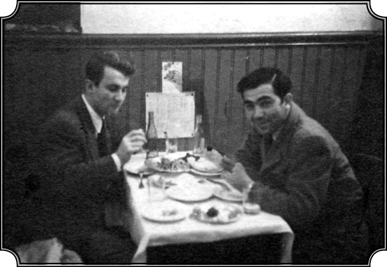
Kemal Karpat uzun yıllar ilişkisini sürdürdüğü yakın dostu Mithat Nalbantoğlu ile Beyoğlu’nda bir lokantada (1947).
1946 seçimleriyle başladı sizin tarih yazma serüveniniz yani?
Bu 1946 seçimlerini görüp demokrasinin ne kadar önemli olduğunu ve halkın bunu özlediğini, bunun için mücadele edebileceğini ve bunun insanlığın ruhuna en uygun rejim olduğunu anladım. Ama hakiki demokrasiden bahsediyorum. Çeşitli demokrasiler vardır, geçici demokrasiler, gösteriş demokrasileri vs. Bir de insanın özünü hedef alan gerçek demokrasiler vardır. Ben, “bu toplum kendi özüne demokrasiyle, gerçek demokrasiyle dönebilir, hakiki kimliğini demokrasi sayesinde ifade edebilir, tam manasıyla modernleşebilir, yeter ki bunu kendi iradesiyle, kendi isteğiyle yapsın” dedim. İşte orada İstanbul’da hakiki bir demokrat doğdu: Kemal Karpat. Hayatımın o andan sonrası hep bu uğurda yaşanmıştır. Yazdığım her şeyde, tarih olsun, siyaset bilimi olsun her şeyin temelinde bu açık demokrat ruh vardır. Bir bakıma beni ben yapan da bu inançtır.
Yani siz 1942’de Svilengrat’ta garda aldığınız kararı 1946’da hayata geçirebilme noktasına geldiniz öyle mi?
Evet dediğim gibi aldığım Svilengrat kararını uyguluyorum, doğruyu söylüyorum, hani içimden geleni yapıyorum ama ben bir hiçim orada, beni kimse dikkate almıyor. Demokrasi tecrübesiyle ilgili seçimler hakkında yazdığım yazıyı kim okudu bilmiyorum, bende kopyası bile yok. Bazen bazı şeyleri buluyorum, yazmışım fi tarihinde, kendi kendime “yahu ne güzel yazmışım” diyorum, şimdi bile takdir ediyorum ama esas noktamız o tarihlerin benim hayatımda bir dönüm noktası olmasıdır.
Peki, gene o döneme döneceğiz de hemen yeri gelmişken sorayım, sizin bu Türk Demokrasi Tarihi adlı ilk kitabınız, aynı zamanda tez çalışmanız, 1960’a kadar olan dönemi kapsıyor.
Evet.
Ondan sonra Türk demokrasisi üç büyük sınav daha geçirdi, 1960, 1971 ve 1980 olmak üzere. Şimdi yeniden Türk Demokrasi Tarihi’ni yazmak ister miydiniz? Yani bu üç darbenin de analizini yaparak…
Aslında ben onu bir dereceye kadar yazdım ama derli toplu bir kitap şekline sokamadım. Çeşitli makaleler yazdım, çeşitli yerlerde yayınlandı. Mesela en son (2006’da) bu konudaki yazım AKP üzerinedir. AKP’nin iktidara gelişini inceliyorum, 2002’de ve sonrasında ne olmuştur, bunu tartışıyorum. Amerika’da bir arkadaşımın şerefine bir kitap hazırlanıyordu, benden de ona katkıda bulunmam isteniyordu, ben de bu konuyu yazdım. Aslında bu konuyla ilgili çok da malzeme topladım, makaleler falan hazırladım ama bir türlü hepsini bir araya getirmek mümkün olmadı. Amerika’ya git gel, çeşitli faaliyetler derken, dağıldım biraz. Hâlbuki bunları yazmak için gayet metodik olarak malzemeleri toplamıştım ve devam edecektim. Fakat daha sonra anlatacağım gibi Amerika’ya dönmem, Amerika’da yeni vazifeler almam, bir sürü kuruluşu kurmam nedeniyle zaman da bulamadım. Çünkü ben kendime şöyle bir görev vermiştim: “Benim bir görevim de Türkiye’yi tanıtmak ve Türkiye aleyhinde yanlış bilinen şeylere ve iddialara ilmi yoldan cevap vermektir.” Bu görevim hep devam etmiştir, yalnız yazılarla değil. Kurumlar kurdum, Türk Etütleri Cemiyeti, Orta Doğu Cemiyeti, Orta Asya Cemiyeti gibi, bütün bunların kurucusu ve başkanı olarak (ki bu hiçbir Türk’e nasip olmamıştır) görevimi sürdürdüm. Bunu kendimi methetmek için söylemiyorum, hani bunları yapmak bir zevk, tabii bir şey ama bunların hepsini de yaptım. Ama bu gibi faaliyetlerle bir taraftan da benim asıl mesleğimin konusu olan Türkiye’nin siyasi tarihini, içeriden takip ettim ve hâlâ takip ediyorum. Artık bu benim hayatımın bir parçası olmuştur.
Evet, tekrar o yıllara dönelim, okul yıllarına. Bir aktivist olarak bazı eylemlere katılıyorsunuz, memleketin durumunu takip ediyorsunuz, köyleri geziyorsunuz. Fabrikada da çalışmıştınız. Daha sonra işçi hareketleriyle ve örgütlenmeleriyle doğrudan ilgilenmediniz mi hiç?
İşçi meseleleriyle nasıl uğraştığımı, bunlara nasıl katıldığımı anlatayım. Benim için de büyük bir tecrübe olmuştur. Daha evvel anlattığım gibi Paşabahçe Şişe Cam Fabrikası’nda bir buçuk yıl kadar çalıştım. Türkiye’deki işçi hayatı hakkında, onların karşılaştığı güçlükler hakkında çok sağlam bilgi edindim. O devirde Şişe Cam’da çalışanların bir kısmı köylerden gelmişti bir kısmı da o bölgenin halkından oluşuyordu. Birçoğu Paşabahçe’de oturuyor, bir kısmı Beykoz’da, bir kısmı başka bölgelerde. Fakir, çoğu eğitim görmemiş ve fakirlik nedeniyle verilen bu düşük ücretlerle yetinip geçiniyorlar. Fakat için için bundan memnun olmadıklarını, ilk fırsatta memnuniyetsizliklerini ortaya atacaklarını da seziyordum. Sonradan okuduğum sınıf meselelerine ait yazılarla, proletarya, sanayi işçisi ve benzeri gibi kavramlarla haşır neşir olunca durumu daha iyi kavramaya başlamıştım. Bilhassa demokrasiyle de yakından ilgilenmeye başlayınca, demokrasinin bir yerde sosyal adalet olduğunu kabul ettim. Evet, bir yerde söz, vicdan, konuşma özgürlüğü vardı ama sen serbest konuşma hakkını verdiğin adamın karnını doyurmazsan o adam az zaman sonra susar. Yani sosyal adaletin olması da son derecede önemliydi. Bu fikir benim kafamdaki nazari bir fikir değildi. Onu ben açık seçik bu çalışanlarda görüyordum. Fakat bu çalışanların bir kısmı hallerinden memnundular. Köylerden gelenler bilhassa. Çünkü bu defa işleri vardı, belirli gelirleri vardı, iyi kötü hastane vardı, yani modern yaşamın asgari şartları oluşuyordu. Bunları köyde bulamayan insanlar hallerinden memnundu, yani öyle bir durum vardı ki bir yerde köye nazaran gayet memnun fakat kendilerini şehir halkıyla, yahut da olması gerekenle karşılaştırınca gayr-ı memnun. Ve bu memnuniyet duygusu daha fazla ilk sene için geçerli oluyordu, sonradan köydeki hayat unutuluyor, şehirdeki hayatla karşılaştırma daha fazla ağırlık kazanıyor ve bunlar kendi yaşadıkları hayatı artık köylününkiyle değil, diğer şehir halkının yaşamıyla karşılaştırarak memnuniyetsizliklerini açığa vuruyorlardı. Ben de bu hayatı yaşadığım, paylaştığım için durumu çok iyi anlıyor ve bu insanlara yardım etmek gerektiğini hissediyordum. İşte bu fırsatı sendikalar kanunu nedeniyle buldum. 1947 yılında sendikalar kanunu çıktı, bir bakıma bu kanun ileriye dönük bir adımdı. Çünkü ilk defa işçiye kendi hakkını koruyacak örgütlenme hakkı veriliyordu ama aynı zamanda bir kontrol aracıydı. İşçiye “sendika kur, serbestsin” diyecek fakat ondan sonra sendikanın ne yapıp yapmayacağını gene üst makamlar kontrol edeceklerdi. Bu, diktatörlük veyahut da yarı diktatörlük rejimlerinde sık sık görülen bir olaydır, yani sadece Türkiye’ye mahsus değildi. Fakat Türkiye’nin o devirdeki rejimi hâlâ Tek Parti yönetimidir, gerçi 1946’da Demokrat Parti kurulmuş, muhalefet var sesler işitiliyor ama eski düzeni birdenbire baştan aşağı değiştirmek kabiliyeti de yok, eski kontroller falan devam ediyor. Tabii yeni demokratik parlak isimler altında eski düzeni, hatta eskiye nazaran çok daha sert bir şekilde tatbik etmek isteyen bir hükümet iş başına getirildi.
Recep Peker Hükümeti.
Evet Recep Peker Hükümeti, 1946 seçimlerinden sonra kuruldu. Onların korkusu ve düşüncesi şuydu: “Efendim biz demokratik bazı hürriyetleri tanıyacağız ama zaten hoşnutsuz, zaten ezilmiş fakir halk bu hürriyetlerden istifade ederek büyük kargaşalar çıkarabilir, düzeni bozabilir. O halde biz, bir taraftan bu hürriyetleri verelim ama diğer taraftan bu hürriyetlerin alabildiğine kullanılmasına ve raydan çıkarılmasına engel olalım. Bunu nasıl yaparız? İş başına sert bir hükümet koymakla.” Ve Recep Peker Hükümeti işte bu şekilde, bu korkuyla kuruldu. Malum Recep Peker, (galiba Kütahya mebusuydu ve albay rütbesi de vardı) alabildiğine diktatör kafalı bir adam. Hatta o kadar diktatör ki Rusya’ya davet edilip geldikten sonra orada gördüklerini burada tatbik etmek bile istedi. 1935 yılında “önemli olan partidir, parti ne derse o olur” diyordu. Yani tüm yetkiler Cumhuriyet Halk Partisi’ne verilecek, kişiler saf dışı kalacak ve partiye kendisi hâkim olacaktı filan. İşte bu gelişmeler olurken ben de bir katkım olsun niyetiyle sendikalar hakkında bir çalışma yaptım. Bu da şu şekilde cereyan etti: O tarihlerde doktora yapmak isteyenler, daha okulu bitirmeden evvel doktora kurlarına girebiliyor ve bir konuda çalışma hazırlıyorlardı. Ben de 1947’de çıkarılan Sendikalar Kanunu’nun kapsamı ve işlevi ile ilgili bir çalışma hazırladım. Bu, kanunun işçi konularına ne dereceye kadar ışık tutabileceğini, yol gösterebileceğini konu edinen bir çalışmaydı. Ve bunu bizim seminerde (on beş, yirmi kişi vardı) okudum, sundum. Kimseden ses soluk çıkmadı, şaşırdım. Çünkü aslında çok çalışmıştım, güzel bir çalışmaydı. Ses soluk çıkmadı çünkü o devirde sendikaları konu olarak ele almak bile büyük bir cesaretti. Bu cesareti kim gösterebilirdi?
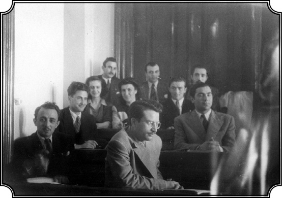
Hukuk Fakültesi’nde derste çekilmiş fotoğrafın arkasında “Son sınıf hatırası 26.06.1947” yazıyor. (Karpat 2. sırada sağ başta).
“Romanyalı”…
Yok. Bir “solcu.” “Böyle bir konuyu ele alabilen adam mutlaka bir solcudur”, kanaat buydu. Zaten bazı kimseler, benim çıkışlarımdan, tepkilerimden, demokrasiden söz etmemden şüpheleniyorlardı. Bu defa da sendikaları ele alıp işçinin örgütlenme hakkının demokrasinin bir icabı olduğunu açık açık savunmam tamamen damgalanmama yetti: Solcu! Ve biz artık solcu olarak görülmeye başladık. Hâlbuki o zaman da, ondan sonra da benim dogmatik solculukla bir ilişkim olmadı. Ben işçiyi ve işçi haklarını demokratik özgürlükler ve haklar çerçevesi içerisinde ele alıyordum. Hiçbir zaman işçilerden kurulmuş bir hükümetin iş başına geçmesini savunmadım, yani bir sınıf esasından hareket etmedim, her ne kadar sınıfların özgürlüğünü savunuyorsam da onların iktidara gelmesini, tek başına iktidara gelerek kendi ideolojisini, felsefesini dikte ettirmesini asla kabul etmedim ve savunmadım. Herkesin kendine göre fikrini söylemesini ama kurulacak bir hükümetin ve devletin her grubun görüşünü temsil etmesini, yani hakiki bir demokrasiyi düşünüyor ve savunuyordum. Neyse bu işçi meselesiyle ilgim şöyle devam etti. Hukuk Fakültesi’ni bitirdikten sonra herkes gibi ileriye dönük bazı adımlar atmam gerektiğini düşündüm ve birçokları gibi baroya avukat olarak kaydolmak istedim. Bunun için de bir sene avukatlık stajı görmem gerekiyordu. Müracaat ettim.
Yıl 1947 galiba?
1947 senesinde mezun olduktan sonra. Beni Celal Bey isminde çok efendi bir avukatın yanına stajyer olarak verdiler. İşin garip tarafı şudur ki Celal Bey aynı zamanda Paşabahçe Şişe Cam Fabrikası’nın hukuk müşaviriydi. Bu nedenle onunla arada sırada Şişe Cam Fabrikası’na gidip gelir, oranın hukuk işleriyle meşgul olurdum. Sonunda fabrikanın hukuki işlerini Celal Bey rahmetli, neredeyse tamamen bana devretti. Benim orada çalıştığımı ve halen tanıdıklarım olduğunu da biliyordu. İçi rahattı. Ben Şişe Cam Fabrikası’nın hukuki işlerini takip etmek için birkaç defa Ankara’ya bile gittim, Sayıştay’a, Danıştay’a dosyalar götürdüm. Hatta çok önemli bir davanın kazanılmasında da benim önemli payım olmuştur. İşçi olarak girdiğim fabrikaya bu defa dört sene sonra avukat yardımcısı olarak gidiyorum ve oranın haklarını savunuyorum. Fakat ben bu aralar ne yapacağımı da kendi kafama göre kararlaştırmıştım: Avukat olacağım ve avukatlığımda da kendimi büyük ölçüde işçi haklarını korumaya adayacağım. Bir yıl kadar sonra Amerika’ya gidip lisansüstü tahsilime başlayıp tezimi de sendikacılık üzerine yazdım. İki yüz sayfalık bir kitaptı, “sendikacılık nedir, tarihi nedir” gibi konuları ele alıyordum. Sonra mastır tezimi ve 1951 senesinde New York Üniversitesi’nde doktora kurlarımı tamamladıktan sonra Türkiye’ye döndüm ve o zaman İşçi Hakkı adında bir gazete çıkartan Kemal Sülker’le tanıştım ve oldukça iyi dost olduk.
Doktoranızı daha sonra aldınız ama galiba 1957’de?
Evet ama 1951’de doktora kurlarını tamamlamıştım. Neyse bu meseleleri Sülker’le görüşüyorduk. Onun İşçi Hakkı isimli gazetesinde bazı yazılar da yazdım. Bir ara bu benim mastır tezimden söz açıldı ve bunu yayınlama düşüncesi oluştu. 1951 yahut 1952 senesinde tezim küçük bir kitapçık haline, benim ismimi taşımaksızın İşçi Takvimi diye çıkarılan takvime yapıştırıldı ve o takvimle beraber binlerce dağıtıldı. Bu küçük kitapçığın, ki aşağı yukarı benim tezimden oluşuyordu, benim tarafımdan yazıldığını belki Kemal Sülker’den başka bilen kimse yok. Kemal Sülker rahmetli oldu ve bütün kitaplarını, vesikalarını Hollanda’da Leiden’daki bir Türk Enstitüsü’nün başında Türkiye üzerine çalışan Erik Jan Zürcher adlı bir tarihçi var, oraya devretti.
Evet, nasıl devam etti işçi hareketiyle ilişkiniz?
Ondan sonra gene ben bu hareketlerle ilgilenmeyi sürdürdüm fakat eskisi kadar faal olamadım. Çünkü artık Türkiye’de o zaman, bilhassa işçi hareketine hâkim olmaya başlayan bazı grupların dogmatik hareket ettiklerini, bir sınıf partisi düşündüklerini ve işçileri bunun hizmetinde kullanmayı amaçladıklarını, Sovyet yanlısı bir politika gütmeyi düşündüklerini anlayınca, çekindim. İşçi hareketi belirli siyasi maksatlara yöneltilmiş bir araç olarak kullanılmak isteniyordu. Bunlar tabii ki birçok yerde var olan sıradan şeylerdir ama yine de çekindim. Ama işçi liderleriyle tanışmaya ve ilişki kurmaya devam ettim. Hatta 1961-62 senesinde dönüp de o zamanki adıyla Robert Kolej’de ders vermeye başladığım zaman, birkaç defa sendika liderlerini eve davet edip yemek verdiğimi, onlarla konuştuğumu hatırlıyorum. Fakat 1960’larda artık Türkiye’de demokrasi biraz daha gelişmiş, siyasi olayların akışı değişmiş, benim bu işlere başladığım 1947-48’lere nazaran özgürlükler çok daha fazla genişlemişti. Ben de artık bu gibi yalın siyasi hareketlerden ziyade, fikir alanına dönmeye karar verdiğim ve bu arada tarihle, sosyal ilimler metodolojileriyle ve bunun gibi meselelerle ilgilendiğim için zamanımı artık eskisi kadar işçi hareketlerine veremiyordum. Gene de şunu belirterek bu konuyu bitirmek istiyorum: 1947’den sonra sendika ve işçi hareketini yakından tanımam, bir bakıma Türkiye’de siyasi gelişmelerin içine girerek olayları anlamama yardım etmiştir. Bu sayede ben cemiyetimizi tabandan başlayarak anlamaya başlamıştım. Zaman içerisinde daha büyük bir çerçeve içinde tarihini ele almam mümkün olmuştur. Zaten köy hayatıyla ilgiliydim, aşinaydım. İşçi hareketiyle temasımı da sürdürerek hem imkânlarım nispetinde onlara yardımcı oldum hem de toplumu daha iyi kavramaya başladım. Bu ilişkiler sayesinde toplumun çok önemli bir kısmıyla ve siyasi hareketin çok dinamik unsurlarıyla tanışabildim. Bu birikim ileride, Türkiye siyaseti ve tarihi hakkında yazacaklarıma büyük destek olmuştur.
Evet, şimdi tekrar Hukuk Fakültesi’ndeki hayatınızın dönüm noktası haline gelen günlerinize dönelim.
Hukuk Fakültesi’nde okurken hayatımın ondan sonrasını belirleyecek olan dönüm noktasına, demokrasiyi savunma ve demokrasinin gerçekleştirilmesi için elimden geleni yapma kararları aldığım noktaya ulaştım. Türkiye’nin siyasi tarihi ile yakından ilgilenmeye başladım. Bu arada da geçimimi daha iyi sağlamayabilmem için ortaya çıkan bir başka gelişmeden söz edeyim. Ailemden para gelmiyor, hakkım olan baba mirasından bir tek kuruş alamıyorum. Çünkü artık yollar kapanmış, kimse gelmiyor gitmiyor, para almak, göndermek imkânı yok. 3. sınıftaydım, parasızdım, baktım ders kitabı diye bir şey yok. Hocalar konuşuyor, anlatıyor ve biz not alıyoruz. Bu olayın benim yayın dünyasına girmemle de ilgisi var da onu hatırladım, ondan anlatmak istiyorum. Baktım hocalar kendi notlarını hazırlıyorlar ve gelip sınıfta anlatıyorlar. Ve enteresandır büyük bir kısmı, hemen hemen hepsi eski Türkçe hazırlanmış notlardı bunlar. Modern Türkiye’deyiz, 1940’lardayız, hocalar hâlâ eski harflerle yazıyorlar. Biz anlatılanlardan not tutuyoruz fakat notlar eksik, yanlış falan oluyor. İlk olarak en sık derse giren Ferit Hakkı Saymen hocaya gittim, “Hocam” dedim “siz bu notlarınızı bana verseniz ve ben bunları Latin harfine çevirerek çoğaltsam ve arkadaşlara dağıtsam, çok büyük bir hizmet olur, onlara kitap olur bu.” “Tamam, yap” dedi.
Siz eski Türkçeyi medrese eğitiminiz nedeniyle mi biliyordunuz o zaman?
E tabii ben medresede okudum ya, oradan biliyorum ama burada eski Türkçe bilgimi kullanmam gerekeceği hiç aklıma gelmezdi. Neyse hoca “olur” deyince bir de sınıfa sorayım dedim. Çıktım kürsüye, sınıfa seslendim, “Arkadaşlar bu notları Türkçeye çevirip çoğaltsam alır mısınız, ister misiniz?” “Alırız” dediler. Ben de “peki o zaman” diyerek başladım. Orada bir organizasyon kurdum. Hocadan notları alıyor, çeviriyorum, Teşvikiye’de bir arkadaş vardı o da mühendislik öğrencisi, şapirograf vardı o zaman ona getiriyorum…
Bir nevi teksir makinesi mi?
Bildiğin teksir makinesi canım. Latin harflerle mumlu kağıda yazıyorduk, artık ihtiyaca göre seksen-yüz kopya falan. Böylece beş-altı hocanın notlarını bu şekilde çoğaltıp satmaya başladım ama hocalara da telif hakkı veriyorum. Yani bunu bile düşünüyorum. Üstelik ben telif hakkı verecek durumda değilim, zaten çok az para kalıyordu ama beni geçindiriyordu. Hocalar iyi kazanmıştı bu benim işimden. Hatırlıyorum bir kere telif hakkı diye 5 bin lira götürmüştüm, yani o zamanki parayla o 5 bin lira muazzam bir paraydı.
Birkaç aylık maaşı yani.
En azından. Böylece bu not basma ve dağıtma, öğrencilerin ihtiyacını karşıladığı gibi bana da rahat bir hayat sağlıyordu. Rahat dediğim de hani o öğrenci hayatı içindeki rahatlık. Param olunca yurttan çıktım, Bebek’te bir Rum ailesinin yanında küçük bir oda kiraladım. Orada o kadar rahat çalıştım ki Bebek halen benim İstanbul’da en çok sevdiğim yerdir. Yani orada da büyük bir şansım olmuştu ama bu tamamı ile muvaffak olmuş ticari bir teşebbüs sayesinde olmuştu. Böylece 4. sınıfta da geçimimi buradan sağladım, hatta Amerika için yol parası bile bu işten çıktı.
Rakip çıkmadı mı size?
Çıktı tabii. Hatta ikiz kardeşler vardı iri yarı, haydut tipli adamlar, onlarla biraz boğuştuk. Yani mafya tarzı elimden almak istediler, hır gür falan. Daha evvel de almak istemişlerdi. Birkaç arkadaş beraber başlamıştık o işe ama onlar beni saf dışı bırakmak istiyorlardı. Ben de meseleyi daha evvel sınıfa arz ettiğim için bu defa gene sınıfa sordum, “siz karar veriniz, notları kimin basmasını istiyorsunuz?”
Bir de oylama yapıldı yani?
Oylama yaptık ve oylamada da görevi bana verdiler. Meseleyi ben demokratça hallettim ve ondan sonra bu iki haydut karşıma çıkıncaya kadar da devam ettim. Sonra bıraktım, yani Amerika’ya gidecektim zaten ve bir sürü şey oldu, ondan sonra avukatlık stajıma falan başladım.
1947’de mezun oldunuz, 48’de hâlâ Türkiye’deydiniz.
1948’in sonlarına kadar Türkiye’deydim, 1948’de Amerika’ya gittim. Aralık ayı başlarında Türkiye’den ayrılmıştım.
O zaman avukatlık stajını bitirdiniz ama mesleğe başlamadınız?
Avukatlık stajımı tamamladım. Baroya kayıt oldum ama yazıhane açmaya teşebbüs etmedim. Çünkü daha mezun olduğum sıralarda, anlattığım gibi işçi meseleleriyle ilgili olarak uluslararası hukukta uzmanlaşarak, belki uluslararası bir avukat olmayı düşünmüştüm. Bu nedenle de uzmanlaşma için Amerika’ya gitme kararı vermiştim.
Karaköy kararları
Niçin Amerika, bu fikir nasıl oluştu?
Amerika fikri rastgele çıkmadı, zaruretler icabı oldu ve o hikâye de şudur: Çok iyi hatırlıyorum Hukuk son sınıfta, artık son imtihanlarımızı veriyoruz. Bütün imtihanları verdim, son imtihan büyük tesadüf Ebulula rahmetlinindi. Yani o imtihandan da geçersem mezun olacaktım, diplomayı da bir iki hafta sonra alacaktım. Nitekim imtihana girdim, “miras hakkıyla miras kime geçer, müteveffanın (ölü kişinin) varislerinin hakları nelerdir?” gibi konular soruldu. Gereken cevapları verdim “pekala” dedi rahmetli ve bana 8 mi 9 mu öyle yüksek bir numara verdi ve çıktım. Kapıdan çıktım ve ilk hissim sevinç oldu, “Bitti” dedim, “mezun oldum.” Yani bu kadar güçlük ve tecrübe yaşadıktan sonra sonuca ulaşmıştım. Düşünün dört, beş sene içinde muazzam bir birikimim olmuştu, yalnız okuduklarımla değil fakat yaşadıklarımla da büyük birikimim olmuştu. Beş dakikalık sevinçten sonra birden bire derin bir hüzün bastı beni. Kendi kendime sordum, “memnun musun, sen kişi olarak ne yaptın? Ne aldın? Acaba şimdi dört senelik üniversite tahsilinden sonra, kendini tam manasıyla bulmuş, tamamlamış, tahsilden beklediğini elde etmiş bir kimse olarak mı görüyorsun?” “Hayır” dedim kendime, “çıktığın yolun ancak yarısını almışsın.” Düşünmeye başladım. “Evet, avukat olacağım, Baro’ya kaydolacağım, ondan sonra bir davadan öbür davaya gideceğim, belki isim yapacağım, para kazanacağım ama bu doyuracak mı beni? “Hayır” dedim, düşündükçe “hayır” dedim. Kara kara düşünmeye başladım, çok iyi hatırlıyorum üniversiteden Mahmutpaşa’ya doğru yürüyorum, gittikçe daha kararlı bir hale geliyordum. Ve Karaköy Köprüsü’ne geldim, onu da geçtim ve orada karar kesin olarak şekillendi kafamda: İleriye doğru gidecektim! Kendi memleketimde elde edemediğim bilgileri, ufuk açıcı ve benim kimliğimi tam manasıyla ortaya koyacak çalışmaları başka yerde yapacaktım. Nerede peki? Şüphesiz Şark’a gidemezdim, Batı’ya gidecektim. Avrupa ya da Amerika’ya gitmeliydim. Ama Avrupa’da okumak için o devirde param yoktu. Bana kim yardım edecekti? Amerika hakkında da bazı bilgilere sahiptim. Bunların arasında en önemli bilgi şuydu: Avrupa’da da birçok öğrenci çalışarak hayatını kazanıyor ve tahsiline devam ediyordu ama bu durum Amerika’da daha da kolaymış. “Ben” dedim “Türkiye gibi bir yerde hayatımı kazanarak tahsilimi tamamlamışsam, Amerika gibi bir yerde haydi haydi yaparım.”
O yıllarda Türkiye’de Truman Doktrini uyarınca bir Amerikan propagandası da başlamıştı değil mi? Mali yardımlar, NATO, savaş gemilerinin ziyaretleri…
Valla Amerikan propagandası vardı, yoktu, bu başka. Aslında propagandaya lüzum da yoktu. Çünkü 1945’te Sovyetler’in Boğazlar’da üs ve ayrıca kuzeydoğu Anadolu’yu, Kars gibi vilayetleri istemesi Türkiye’de Sovyetler aleyhine muazzam bir akım yaratmıştı. Her ne kadar bu defa Sovyetler’i, Sovyetler’le dostluğun Türkiye’ye yararını savunan kimseler çıkmışsa da halkın ezici çoğunluğu Türkiye’nin Sovyetler’le dostluğuna, işbirliğine, onlarla yakınlaşmasına karşıydı. Unutmayınız ki Türkiye’nin genelde Sovyetler’le, yakınlığı olmasa da, dostluk siyaseti olmuştur. Daha 1920’lerde Türkiye, Sovyetler Cumhuriyeti’ni ilk tanıyanlardandır, onlar da milli mücadeleye yardım etmişlerdi. Bunun gibi çok olumlu şeyler vardır ama bunların arkasında yatan da Sovyetler’in buraya hâkim olma isteğidir. Çünkü bu bölgeye hâkim olmak kendi emniyetleri için kaçınılmaz bir şarttı. İşte Sovyetler’in Türkiye’den toprak talep etmesi, ondan sonra Doğu Avrupa’yı bilhassa Romanya’yı işgal ederek bir komünist rejimi empoze etmesi, Türkiye’de halkın büyük bir kısmında korku yaratmıştır. Asırlardan beri yaşanan Çarlık korkusu bu defa yeni şekil almıştır. O zaman rahmetli İsmet İnönü radyoda bir konuşma yapmıştı: “Sovyetler’in toprak isteklerine karşı kimse bize yardım etmese de biz karşı duracağız, sonuna kadar mücadele edeceğiz, bir santim yer vermeyeceğiz” şeklinde bir radyo konuşmasıydı. Bu konuşmadan pek laf edilmez, bence bu Türkiye tarihinde çok önemli yeri olan bir konuşmaydı. “Biz özgürlüğümüzü savunacağız, toprağımızı savunacağız, yalnız da kalsak savunacağız” şeklindeki bu konuşma bütün Türkiye’de muazzam tesir yapmıştır. Yani bu savunma kararı bir bakıma halkın önemli bir kısmını Sovyetler aleyhine döndürmüştür ama bunun başka çaresi de yoktu. Bunu şu ideolojiye, bu ideolojiye, olmayacak şeylere girerek anlatmak yahut da saptırmak yanlıştır bence. O devirde düpedüz bir Sovyet emperyalizmi söz konusu olmuştur, harbin sonunda. Sovyetler haklıydı, haksızdı bu ayrıca tartışılabilir…
“Dost Amerika” ve demokrasiye geçiş
Dünya siyaseti iki kutuplu bir hale geliyor o yıllarda. Truman Doktrini Amerika’nın Türkiye politikasının esasını oluşturmadı mı?
Sovyetler’in talebi karşısında nihayet 1946’da Amerika bir plan geliştirmişti. Mesela Yunan İç Savaşı’nda komünistler üstün duruma geliyordu, ama galip gelselerdi durum değişecekti. Amerika’ya göre bu savaşta komünistler galip gelirse Türkiye ve Yunanistan’ı tasfiye ederek Akdeniz’e hâkim olabileceklerdi. Truman Doktrini, bu tehlikeye karşı bir denge oluşturmak için yaratıldı.
Yunan İç Savaşı’nda komünistler galip gelseydi belki de Amerika, Yunanistan ve Türkiye’yi işgal edecekti, “Hür devletleri silahlı azınlık tehditlerine karşı koruma ve Sovyetleri çevreleme” adına Truman bunu istiyordu.
Truman Doktrini, Sovyetler’in yayılmasına engel olmak için o devirde geliştirilen bir doktrindir. Bu doktrinin bir belirtisi olarak o tarihte Missouri uçak gemisi gelmiş ve İstanbul birbirine girmişti. Askerleri karşılamak, onlara dostluk göstermek için yapmadıkları kalmamıştı. Yani bu tarihte Amerika’nın buraya gelip de özel bir propaganda yapmasına lüzum yoktu. Toplum zaten hazırdı. Türkiye büyük bir dost arıyordu ve bu dost Amerika’ydı. Bu dost Amerika’ydı ama bu olaylar aynı zamanda Soğuk Harbin başlangıcı olmuştur. Unutmayınız, 1945’te Birleşmiş Milletler kurulmuş, Türkiye de kurucu üyeler arasına girmiş. Her ne kadar Türkiye’nin durumu (her zamanki gibi) o zaman da pek açık değilse bile Batı’ya bakıyordu işte. Çünkü harp zamanında Fransa’nın, İngiltere’yle olan ittifakına rağmen Almanlara da biraz dönmüş, onlara da göz kırpmış gibi bir durum vardı. 1943-44’ten sonra tabii bu değişti. Sovyetler Birliği, Türkiye’den üs ve toprak isteyince Türkiye tamamı ile Amerika’ya doğru döndü, Amerika’dan destek aldı. Fakat bu bizim demokrasiyle de ilgilidir çünkü Amerika’nın Türkiye’ye yardım etmesi ve onu Sovyetler’e karşı desteklemesi Amerikan Kongresi’nde bilhassa Senatosu’nda büyük tartışmalara yol açmıştı. Senato üyelerinin bir kısmı Türkiye’deki rejimi sorgulamaya başlamışlardı: “Amerika, tek parti rejimiyle, diktatörlükle yönetilen Türkiye’ye nasıl yardım edebilir? Türkiye demokrasiyi kabul etmeden Batı saflarına geçemez, Batı camiasının üyesi olamaz!” gibi tartışmalar yapıldı ki bunlar gayet açık seçik olarak Amerikan kongre zabıtlarında mevcuttur. Türkiye’nin 1946’da demokrasiye geçişinde bu olayların da tesiri büyüktür. Yani durum değişik olmakla beraber, bugün de Türkiye’nin Avrupa Birliği’ne katılmak istemesi ve bu sayede demokratikleşme sürecine girmesi falan biraz 1945-46’daki olayları andırıyor. Çünkü o devirde de Türkiye’nin demokrasiye yönelmeden Batı kulübüne kabul edilemeyeceği açıkça ortaya konmuştu. İşte 1946’da Recep Peker hükümetini kurmak böyle bir denge arayışıyla olmuştur. Sovyetler’e karşı olumsuz havadan istifade eden Recep Peker hükümeti solculara büyük baskılar yapmaya başlamıştı. O zaman tevkifler yapıldı, gazeteler kapatıldı, Tan gazetesi de bunların içindeydi. Bir sürü dergi kapatılmıştır, insanlar tevkif edilmiştir. Yani burada Türkiye’nin demokrasiye yönelişi, dış siyaseti, vesairesi hepsi birbiriyle örtüşüyor, iç içe girerek birbirini etkiliyor ve bu şekilde gelişiyordu olaylar.
Peker hükümeti uzun ömürlü olamadı ama… Herhalde bu ikili siyaset nedeniyle?
Türkiye’de hâlâ Halk Partisi iş başındadır. Halk Partisi ve bilhassa İnönü. Sonunda İnönü zamanında, bir taraftan demokrasi getiriyoruz denilip diğer taraftan sol fikirlerle, hür fikir ortamını yok etme faaliyetlerinin bir arada yürüyemeyeceği yani göz boyama siyasetiyle işlerin yürütülemeyeceği anlaşılınca 1947’de Recep Peker hükümetinin istifa etmesi sağlanmıştır.
“Bu işi doğru dürüst yapmamız gerekiyor”
Recep Peker aynı zamanda tek parti rejiminin en ateşli savunucusu ve parti sekreteri idi, değil mi?
Enteresan noktalardan biri budur işte. Recep Peker, Türkiye ile Sovyetler dostken Moskova’ya gidip geldikten sonra oradaki gibi bir tek parti sisteminin en ateşli savunucusu olmuştur. Cumhuriyet Halk Partisi’nin 1935 Kurultayı’nda bu tek parti anlayışı benimsenmiş ve Peker parti sekreteri olmuştur. Peker’e göre, bütün istekler partiye bildirilecektir ve hangi isteğin ne şekilde yerine getirileceğine parti karar verecektir. Parti bütün fertleri birleştiren bir teşekkül olarak idealleştirildi. Aynı zamanda parti programının da “hayat gerçeklerini en iyi dile getiren ve karşılayan, milletlerarası duruma göre şekillendirilmiş bir milli ideoloji” olduğu ileri sürüldü. Devletçilik başlıca ekonomik ilke olarak benimsendi, sonra aşırı solcu, liberal ve aşırı sağcı fikirlere karşı silah oldu. Devlet ilahi bir varlık gibi gösterilerek insanların tapınağı haline getirildi. Aynı zamanda tek parti diktatörlüğü gevşemeye başladı. İlk liberalizasyon 1939 Kurultayı’nda başladı. Hikmet Bayur’un sert eleştirileri de rol oynadı bunda. Böylelikle içişleri bakanlığı ve parti sekreterliği ile valilik ve il başkanlıkları birbirinden ayrıldı. Yani devlet ile parti birbirinden ayrılmaya başladı. Ama esas liberalizasyon 1945’te başladı. 1946’daki olağanüstü kurultayda tek dereceli seçimlerin kabulüne, dernek kurma hürriyetinin tanınmasına, parti başkanlarının hayat boyu değil de her kurultayda yeniden seçilmesine karar verildi. Hatta o ateşli tek parti savunucusu Recep Peker bile değişik laflar etmeye başlamıştı. Mesela “Türkiye’nin hiçbir zaman gerçek manada tek parti rejiminin hüküm sürdüğü bir memleket olmadığını” ve hatta “Türkiye’de hiçbir zaman siyasi baskıya başvurulmadığını” iddia ediyordu. Neyse Recep Peker hükümeti istifa edince onun yerine Şemsettin Günaltay hükümeti gelmiştir. Günaltay, İslam’la modernleşmenin bir arada yürüyeceğini Sebil-ür Reşat gibi dergilerde savunmuş, Batı’yı iyi tanıyan çok değerli, demokrat bir kimse idi. Sebil-ür Reşat dergisi İslamcı olarak tanıtılmıştır. 1932’ye kadar yayımlanan gerçek anlamda İslam’ın Türk toplumunda derin köklerini bilen ve değişen bir toplumla bağdaştırmak isteyen bir dergiydi. Türkiye’de gerçek demokrasinin yerleşmeye başlama yılı 1947’dir. Cumhuriyet Halk Partisi de kurultayında çok partili rejimi benimsemiş ve demokrasiye daha uygun bir parti haline gelmiştir. Şeklen de olsa başka başka partiler kurulmuştu, muhalefet de vardı, Celal Bayar’lar, Adnan Menderes’ler Meclis’te konuşuyorlardı, fakat onların sözlerinin etkisi ancak 1947’den sonra olmuştur. O da dediğim gibi göz boyama siyasetinin yürütülemeyeceği anlaşılınca. Bu durumda Türkiye’nin gerçek demokrasiye doğru yol alması gerekmiştir ki İnönü’nün de en büyük kararı budur: “Bizim bu işi doğru dürüst yapmamız gerekiyor.” Fakat yol uzun ve devletçi engellerle dolu idi.
Bu arada Millet Partisi de kuruluyor galiba, Mareşal Fevzi Çakmak gibi isimler var ön saflarda..
Evet, Millet Partisi 1948’de Demokrat Parti’den ayrılanlar ve ihraç edilenler tarafından kuruldu. Bir taraftan liberalizmi savunduklarını söylediler ama diğer taraftan kültür ve din gibi konularda muhafazakâr olarak tanındılar. Hatta çoğu kez laiklik konusunda Demokratlarla Halk Partililer Millet Partisi’ne karşı birlikte hareket ettiler. Mareşal Fevzi Çakmak’a rağmen halk Millet Partisi’ni pek tutmadı. Çünkü mevcut partilerin politikalarını tenkit edip kendi programlarını savunacakları yerde başta İnönü olmak üzere şahıslara saldırıyorlardı. Partinin takip edeceği politika konusunda parti liderleri arasında bile birlik mevcut değildi. Ayrıca 1950’de ölen Fevzi Çakmak’ın cenaze töreninde de görüldüğü gibi dinci unsurların bu parti etrafında toplandığı intibaı basında ve kamuoyunda güçleniyordu. Ama gene de Millet Partisi’nin varlığı 1950 seçimleri öncesi ve sonrasında çok partili bir demokratik rejim görünümüne yardım ediyordu.
Demokratların söyledikleri kadar demokrat olmadıklarını da açığa çıkarmıştı değil mi Millet Partisi’nin varlığı?
Ne de olsa Millet Partisi, Demokratlar’ın gücünü zayıflatma tehdidini taşıyordu, çünkü oradan gelmişlerdi ve Halk Partisi’ne karşı muhalefet ediyorlardı. Zaman zaman Demokratların saldırılarına uğradılar, mesela İzmir toplantıları Demokrat Partililerin tatsız ve yakışıksız engellemelerine uğradı. Hatta Celal Bayar’a suikast yapacakları iddiasıyla bile yıpratıldılar ki bu iddianın sonradan asılsız olduğu ortaya çıkmıştır. Ama Millet Partisi içinde de hakikaten mutaassıplığa, gericiliğe doğru bir gidiş vardı. Mesela zaman zaman delegelerle gazeteciler arasında dövüşlere de sahne olan 1953 Kongresi mutaassıpların partinin kontrolünü ellerine geçirmesiyle sonuçlanmıştır. İleri gelen bazı üyeler, ki en önemlisi ve partinin kurucularından biri olan Hikmet Bayur’dur, Millet Partisi’nin gerici ve Kemalizm aleyhtarı bir tutum benimsediği iddiasıyla istifa ettiler. Demokrat Parti hükümeti de, din anlayışı açıkça Anayasa’ya aykırı olan Millet Partisi’ne karşı takibata girişti. Böyle bir hareketin demokrasiyi zedelediği yolundaki protestolara rağmen Millet Partisi’ni destekleyen Millet dergisiyle beraber partiyi de kapattı. Fakat Parti kısa bir süre sonra gericileri tasfiye eden Osman Bölükbaşı liderliğinde Cumhuriyetçi Millet Partisi adıyla yeniden kuruldu ve 1954 seçimlerinde 5 milletvekili çıkardı. Daha sonra Osman Bölükbaşı hükümeti tenkit ettiği için hapse atıldı ama 1957 seçimlerinde hapisteyken bile milletvekili seçildi. Daha sonra bu parti Türkiye Köylü Partisi’yle birleşerek ismine Köylü kelimesini eklemiştir. Daha bu yıllarda, din hürriyetini Allah’ın emri olarak görenlerle bu hürriyeti demokrasinin gereği olarak görenler şeklinde iki kutup oluştu.
Evet, tekrar 1950 seçimleri öncesine dönelim. Ülkede çok partili rejime geçiş sancıları yaşanıyor. Cumhuriyet Halk Partisi’nin deyim yerindeyse liberalleşme çabaları sürüyor, hatta sosyalist parti bile kurulabiliyor, öyle bir dönem yaşanıyor.
Evet, bir taraftan Cumhuriyet Halk Partisi içinde değişiklikler var. Tek parti felsefesi ve buna dayalı rejim anlayışından geri çekilmeler var. Diğer taraftan kanunlar değişiyor. Siyasi liberalizasyon çabaları var. Özellikle Cemiyetler Kanunu’nun sınıf esasına dayanan siyasi partiler kurulmasına imkân verecek şekilde 1946’da değiştirilmesi, Şefik Hüsnü Değmer adındaki sosyalist liderin önderliğinde aynı yıl Türkiye Sosyalist Emekçi ve Köylü Partisi’nin kurulmasına imkân verdi. Bu parti Haziran ayında kurulmuştu. Bir ay önce de Esat Adil Müstecaplıoğlu liderliğinde Türkiye Sosyalist Partisi kurulmuştu. Fakat bu bahar havası uzun sürmedi ve aynı yılın sonunda, Aralık ayında, örfi idare dediğimiz sıkıyönetim bu iki partiyi, çeşitli sendikaları ve Ses, Gün, Sendika, Yığın, Dost, Yarın gibi çeşitli yayınları ve ayrıca Ermeni dilinde yayınlanan Noror gazetesini kapattı. Hükümete göre böyle bir tedbir gerekliydi, çünkü komünist olduğu bilinen bazı kimseler bir sınıfın (proleteryanın), diğer sınıf üzerinde siyasi hâkimiyet kurmasını istiyordu ve bu amaçla da partileri, yayın organlarını ve bazı sendikaları kullanıyordu. Bu ise sınıf mücadelesini yasaklayan Ceza Kanunu’na aykırıydı. Tutuklananlardan Şefik Hüsnü ile sayıları elliyi geçen diğer kişiler çeşitli cezalara çarptırıldılar. Esat Adil beraat etmişti. Esat Adil, partisini yeniden açtı ve 1950 seçimlerine katıldı. 1947 yılında İstanbul’da çıkmaya başlayan Zincirli Hürriyet isimli gazetenin yönetimi, sıkıyönetimden kurtulmak için İzmir’e taşınmıştı. Ve bu gazetenin yazı işleri müdürü de işte daha önce sözünü ettiğim benim hocam olmuş olan, Hukuk Fakültesi’nde doçentlik yapmış Mehmet Ali Aybar’dı. Gazete, İzmir’de bu kez gene rahat bırakılmamış ve bazı öğrenciler tarafından matbaası basılarak tahrip edilmiştir.
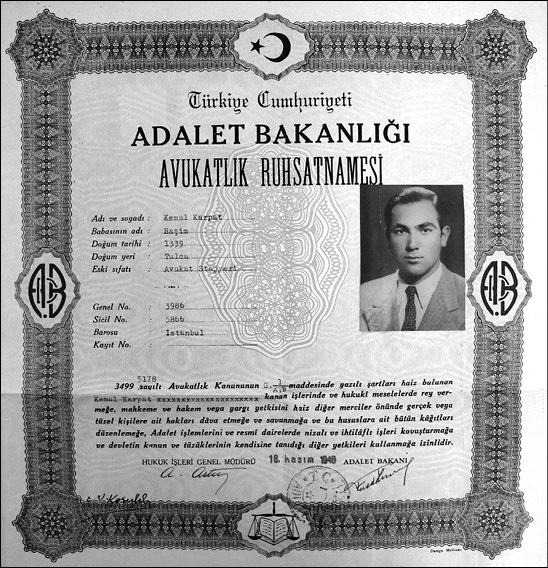
Karpat’ın Hukuk Fakültesi’ni bitirip stajını tamamladıktan sonra aldığı Avukatlık Ruhsatnamesi 18 Kasım 1948 tarihini taşıyor.
Bu gelişmeler oluyor, siz bir taraftan olan biteni takip ediyorsunuz ama diğer taraftan şiddetli bir şekilde Amerika’ya gitmek istiyorsunuz.
Evet, tüm bu gelişmeler nihayetinde ülkeyi 1950 seçimlerine götürecek ve Demokrat Parti iktidarının kurulmasına yol açacaktır. İşte ben bu olaylar olup biterken Amerika’ya gitmeyi düşünüyordum. Şimdi gene Amerika’ya gidişimin nedenlerine gelelim. Amerika bize destek olmuş ve biraz kapılarını da açmış, dolayısıyla eskiye nazaran Amerika’ya tahsile gidenlerin de sayısı artmıştı. Fakat benim açımdan Amerika’nın en çekici tarafı, orada benim gibi maddi imkânları olmayan kişilerin çalışarak tahsillerini görme imkânı bulmaları, bu tür imkânların verilmesiydi. Gerçek şuydu: Çalışmalıydım ve Amerika’da çalışma imkânım vardı.
“Karpat” soyadının anlamı
Siz bu arada hâlâ Romanya vatandaşı mısınız?
Yok. Bu esnada Türk vatandaşlığını almıştım. Galiba 1946’da aldım. Bu aslında bir formalite idi, çünkü ben Türk cemaatinin (milletinin) üyesi olarak doğmuşum.
Niye gerek duydunuz bu değişikliğe?
Artık Romanya’ya dönmeyeceğimi, artık her şeyimle Türkiye’de kalacağımı, benim şahsi mukadderatımın bu toplumdan, bu devletten ayrılmayacağını anlamıştım. Bunun için Rumen vatandaşlığını muhafaza etmekte bir mana bulmuyordum, kimse beni zorlamamıştı ama Romanya faslı bitmişti. Orada babadan kalma çok mülküm vardı ama bu artık bir hatıraydı. Ailem oradaydı, onlarla ilişkim devam ediyordu fakat siyasi bakımdan, kültür bakımından, her bakımdan ben artık bu toplumun, bu ülkenin, Türkiye’nin ayrılmaz parçası haline gelmiştim.
Bu vatandaşlık değişikliği Sovyetler’in Romanya’yı işgalinden hemen sonraki döneme mi rastlıyor?
Sovyetler, Romanya’ya 1945’te girmişti. Alman cephesi yarıldıktan sonra. Yani aslında 1944’te girmişlerdi. O tarihlerde Sovyetler’in Romanya’ya hâkimiyeti tam manasıyla gerçekleşmemişti. Bu hâkimiyet Churchill, Roosevelt ve Stalin’in Yalta görüşmesinden sonra gerçekleşmiştir ki bu görüşme aslında Roosevelt’in Sovyetler’e Doğu Avrupa’yı vermesi demekti; “Bu sizin hayat sahanız, tesir alanınızdır, siz burada hâkim olabilirsiniz” dediler Sovyetler’e. Ama Yalta Antlaşması hiçbir zaman Sovyetler’e rejim değiştirme hakkını vermemiştir. Roosevelt ve Churchill, Stalin’e Doğu Avrupa’yı tesir sahası olarak verirken (ki bunu bilhassa Roosevelt tanımıştır) “rejim değiştirmeyeceksin” de demişti. Ama Sovyetler tam tersini yaptı. Daha girer girmez rejimleri değiştirmeye başlamış, yayılma hevesinde olduğunu göstermiştir. Bu hevesin ilk işareti de Türkiye’den üs ve toprak istemesi olmuştur. 1945’te başlayan bu gelişmeler 1946’da tam şeklini bulmuş ve Sovyetler’in ne yapmak istediği tam olarak ortaya çıkmıştır. Türkiye üzerindeki bu talepler o devirde Moskova büyükelçisi olan Selim Sarper’e verilmiştir. Beş, altı yıl sonra, Selim Sarper’le karşılaşmam, hatta çatışmam olacaktır. Bir bakıma ben de naçiz bir insan olarak, hiçbir kabahatim veya gücüm olmadığı halde fikirlerim ve tutumum dolayısı ile bu büyük siyasi gelişmelere kurban olmuş, ya o gelişmelerden istifade etmiş veyahut da zarar görmüştüm ki bunları daha sonra anlatacağım.
Karpat soyadını 1945’teki müracaatınızda mı aldınız?
Evet.
Siz seçtiniz Karpat’ı?
Ben seçtim.
Nasıl bir duygu içinde seçtiniz Karpat soyadını?
Onu da çok iyi hatırlıyorum. O zaman okulda olsun, çevrede olsun, bana karşı bayağı bir baskı vardı. Gerek siyasi, gerek kişisel bazı meseleler nedeniyle oluşan baskılara karşı direnmeye karar vermiştim. Yani Türk vatandaşı olmaya karar verdiğim zaman bütün bu baskılara direnmeye de karar vermiştim. Ama aynı zamanda ikinci neden olarak “kökenlerimi unutmayayım” demiştim kendime. Romanya’da tam manasıyla Rumen dilini konuşup, edebiyatını bilip her bakımdan o topluma uyabilecek, orada yaşayabilecek bir kimseyken buraya gelmişim. Türk olduğumu, Müslüman olduğumu bildiğim, buna değer verdiğim ve bu tarihi kökenlerimi muhafaza etmek istediğim için Türkiye’ye gelmişim. Geldikten sonra da az zaman içinde buraya intibak etmişim, toplumun bir parçası olmuşum. Ama bir yerde yine benliğimi koruyorum. Kafamda bunlar dolaşıyordu. Hani “Öyle bir soyadı alayım ki” diyordum “metanet gösterisi olsun, rüzgara yağmura, kara karşı dik duran bir dağ gibi, bunu anlatacak bir sembol olsun.” Bir taraftan bu benim karakterim, çünkü her şeye karşı böyle dik durmaya, karşı durmaya, kendime göre bir yol çizmeye azmetmiş bir insanım, diğer taraftan da benim bir geçmişim, bir özüm var, bir de onu ifade edecek bir şey olmalı. Hatırlıyorum, müracaatımı yapmıştım, her şey tamam, gittim Nüfus Müdürlüğü’ne ama karar verememişim hâlâ. Nüfus memuru “soyadını seçtin mi” dedi. “Evet” diyecek oldum ama daha netleştirmemiştim. “Hadi çabuk ol” dedi “yoksa ben şuradaki listeden bir tane alır veririm” dedi. O zaman Karpat aklıma geldi. “Karpat” dedim, “tamam Karpat” diye yazdı, “işte soyadın budur.” Romanya’dayken soyadım aile nedeniyle Ömer, baba nedeniyle de Haşim’di. Kemal Haşim Ömer’dim yani. Bu durumda soyadımı alırken ben Haşim’i yani baba ismimi muhafaza ettim. Benim orta ismim Haşim oldu. Kemal H. Karpat, yani Kemal Haşim Karpat adı bu şekilde Türk vatandaşlığını alırken ortaya çıktı.
Evet, Amerika’ya gidişinizi anlatıyordunuz.
Amerika’ya gitmeye niçin karar verdim? Evet, orada geçimim temin edilecek, okuyacağım ama aslında gitme kararımı etkileyen bir başka düşünce, daha doğrusu bir özlem daha yatıyordu beynimin içinde. Anlattığım gibi Romanya’da bizi “Türk, Müslüman” diye aşağı görmüşler, ayırmışlardı. Türkiye’ye geldik burada da “Romanyalı, gavur kanı karışmış, bilmem ne” gibi olmayacak şeyler işittik. Amerika’da ırk farkı, şu bu farkı olmadığını, böyle tam demokratik bir cemiyet olduğunu, herkesi olduğu gibi kabul ettiğini okumuştum veyahut da işitmiştim. “Böyle bir yere gideyim de hiç olmazsa bir süre kimse bana, sen yabancısın, sen şusun, busun demeden yaşayayım” diye düşündüğümü hatırlıyorum. Ne kadar aldandığımı sonra görecektim. Ama o gün için içimde Amerika konusunda kararımı etkileyen bir de o istek vardı. Kararım verilmişti artık, tamam Amerika’ya gidecektim ama birden aklıma geldi ki ben İngilizce bilmiyorum. Kızdım da kendime “Ben niye İngilizce bilmiyorum” diye. Fransızcam gayet iyiydi, sonra ayrıca Edebiyat Fakültesi’ne devam etmiş, İtalyanca dersleri almıştım, İtalyancam da gayet gelişkindi, Rumencem vardı, Bulgarcam vardı, Türkçem vardı, yani bir sürü dilim vardı ve hatta kiracı olarak evinde kaldığım Rum ailesinden de biraz Rumca öğrenmiştim ki hâlâ onu hatırlarım, ama İngilizcem yoktu işte. “Amerika’ya gideceksin, dil bilmeden nasıl gideceksin, nasıl tahsil göreceksin?” Bu arada Tophane’ye kadar gelmiştim yürüyerek. İngilizceyi hoca tutmadan nasıl öğrenebileceğimi düşünüyordum. Oradan derhal tramvaya atladım, gerisin geriye Beyazıt’a döndüm. İngilizce gramerini ve dilini öğretecek kitaplar aramaya başladım. Bula bula Fransızlara İngilizce öğretecek bir kitap buldum. O yaz o kitabı bitirdim. Yaz sonunda artık okuduklarımı gayet iyi anlamaya başladığım gibi İngilizce cümleler de kurabiliyordum. İngilizce yazmayı da bir dereceye kadar başarmıştım. Bu arada müracaat ettiğim üniversitelerden de cevaplar gelmeye başlamıştı. Birçok yerden burs verememeleri nedeniyle red cevabı geliyordu. Nihayet Washington Eyaleti’nin en büyük şehri olan Seattle şehrindeki Washington Üniversitesi’nden kabul edildiğimi ve okul taksitlerini ödeyecek bir burs verebileceklerini bildiren bir mektup aldım. Bu mektupların bir tanesinde de “İngilizcenizin, ders takip edebilecek, konuşabilecek bir seviyede olduğunu gösterecek bir imtihan vermeniz lazım” diyordu. O devirde TOEFL yoktu ama bu sorunu da çok güzel bir şekilde, beklenilmedik bir şekilde hallettim.
Nasıl?
Ekim ayı falan olmuştu artık İngilizceyi kendime göre konuşuyor, anlıyordum, tabii aksanım berbattı. Her şeyi de doğru dürüst telaffuz edemiyorum, çünkü okunuşları fonetik olarak kitap yazıyor ama onları söküp doğru telaffuz edebilmek başlı başına bir mesele. İşte kafamda bu soru var; “bu imtihanı nerede verebilirim? O zaman Cağaloğlu’nda Amerikan Kültür Merkezi diye bir yer vardı oraya gittim, merkezin başındaki zatla görüştüm “ne istiyorsun?” dedi. “Valla” dedim “ben böyle bir kabul aldım. İngilizce imtihanı istiyorlar, acaba bu imtihanı nerede verebilirim, nasıl verebilirim, bunları soruşturmak için sizden yardım istiyorum” dedim ve bunları hep İngilizce anlatıyorum. “Tamam” dedi adam “imtihanı verdin ve geçtin.” Ve derhal orada gerekeni anlatan bir yazı yazdı, imza etti ve verdi, “bunu gönder” dedi.
Peki siz hep kitaptan çalıştınız, konuşma pratiğini nasıl hallettiniz?
Konuşma pratiğini de biraz yüksek sesle kendi kendime konuşarak…
Sesi nasıl taklit ettiniz?
Pek o kadar başarılı değildi. Fakat bir telaffuz rehberi buldum, oradan telaffuzu da biraz hallettim. Böylece Amerika’ya gitmek için bütün her şey tamamdı. Diğer evrakları da düzenledim ve vize için konsolosluğa müracaat ettim, pasaport çıkarttım, vizeyi aldım. Fakat 1948’in ilkbaharında gidiş planları ve hazırlıkları yaparken bir hesap ettik, yol parası vesaire gibi şeyler bayağı yekun tutuyordu. “O kadar param yok biraz daha çalışayım” falan diye gidişimi erteledim. Vizemin müddeti geçmişti, tekrar gittim. Galiba Kasım ayında her şeyi tamamladım, döviz olarak birkaç yüz dolar veriyorlardı, onları da aldım. O tarihte uçakla gitmek bayağı güç olduğu gibi uçak param da yoktu. Gemiyle gideceğiz ama Türkiye’den Amerika’ya gidecek gemi olmadığı gibi, Avrupa’dan da Amerika’ya gidecek o kadar çok kişi var ki gemilerde yer yok. Soruşturduk “ancak şansın olursa bulursun” dediler. “Nereden bulabiliriz?” derken “Fransa’dan ve İngiltere’den gidebileceğimi öğrendim. “Tamam” dedim “bu işi de başarırız.” Aralık başında buradan bizim bir gemiyle Marsilya’ya gittim, Marsilya’dan Paris’e trenle geçtim. Paris’te daha evvel İsveç’e gidip orada bir süre çalıştıktan sonra Fransa’ya gelmiş olduğunu bildiğim Mithat Nalbantoğlu’nu buldum. Robert Kolej’de matematik dersi veren arkadaşımdı. Bir otele yerleştim ve yine de eski alışkanlıklarımdan vazgeçmeyerek Sorbonne Üniversitesi’ne gittim. Meşhur Sorbonne’a. Bu kadar seneden beri işittiğimiz yerdeyim, Paris’teyim ya artık, imkân nispetinde Louvre Müzesi’ni gezdim, duyduğum yerleri gezdim ve büyük bir tecrübe oldu bunlar benim için. Bu arada bilet arıyorum, nereye gitsem bilet yok, bütün gemiler bahara kadar dolmuş. Artık ümidi kesiyorum, “ne yapacağız, Türkiye’ye mi döneceğiz, bu kadar ay Paris’te bekleyip elimizdeki 3-5 kuruşu da harcayıp yok mu edeceğiz” diye karalar bağlıyorum. Ama yılmayacaktım. Oradaki vapur acentelerinin bir listesini yaptım, birer birer gidip hepsiyle konuştum. Sonunda bir Hollanda şirketine gittiğimde “evet” dediler “ama maalesef bir kişilik yerimiz var.” “Zaten ben tek kişiyim” dedim. “Tamam onu verelim sana ama” dediler “gemi iki gün sonra Rotterdam’dan kalkıyor.” “Yetişirim” dedim. Hemen her şeyi toparladım, trene atladım, geminin kalkmasından beş-altı saat evvel Rotterdam’a gittim biletimi, pasaportumu her şeyimi gösterdim. “Tamam” dediler ve ben böylece gemiye bindim.
Üçüncü Bölüm
Amerika-Türkiye, Karar Yılları

Seattle aynı zamanda benim Amerikalıları biraz daha iyi tanımama imkân verdi. Hani şunu da hemen söyleyeyim ki ben oraya gittiğim ilk iki ay çok üzüntülüydüm, çok bocaladım. Bir sukutuhayal duygusu geldi. Çünkü Amerika benim alışık olduğum tarzda, Avrupai tarzda bir entelektüel hayata sahip değildi, her şey pratiğe dönüktü. Avrupa’da her şey kurumdu, Amerika’da her şey fert, kişi, onun teşebbüsü ve aldığı sonuçtu. Elle tutulur, gözle görülür sonuçlar geçerli. Avrupa fikir alemiyle uğraşır, konuşur, tartışır, kitaplar yazar, Amerika tatbikatçıdır, fiiliyattır. .

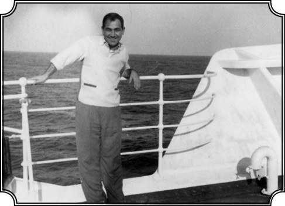
Karpat ilk Amerika yolculuğunda Hollanda’dan kalkan Veendam isimli gemide (Aralık 1948)
Bahtımın rüzgârı
Amerika’ya giden bu gemideki ilk gözlem ve izlenimleriniz nelerdi?
Geminin ismi Veendam’dı. Beni Amerika’ya götürecek bu gemiye binerken doğrusu heyecandan çok, şaşkınlık içindeydim. Altı, yedi sene önce Türkiye’ye ulaşacağımdan emin olmayan ben, bu kez Amerika’ya doğru yola çıkmak üzereydim. Gemi okyanusa açılıp ilerledikçe hayatımın yeni ve çok önemli bir dönemine girdiğimi anlıyordum. Bazen korkuya kapılıyor, telaşlanıyor fakat yine de umudumu sağlam tutuyordum. Nihayet karar verdim. Gemide iki dünya arasında su üstünde üç hafta vaktim vardı. Bu, beklenmedik ve uzun mücadelenin sonunda hak ettiğim bir tatildi. İleride karşılaşacağım güçlükleri ve sorunları düşünmenin bir işe yaramayacağına karar verdikten sonra herkes gibi ben de hoş vakit geçirmeye karar verdim. Gemide Amerika’ya giden yüzlerce göçmeni görünce “bizim mukadderatımız göçmenlikmiş, nereye dönsem göç, nereye dönsem göçmenlik” diye düşündüm. Birkaç Amerikan vatandaşı da vardı. Orada beni etkileyen, güzel bir jest olarak gördüğüm bir olay oldu. Dört kişilik bir masa vardı, üç kişilik bir aile oturuyor, bir yer boş. Dediler, “buraya gel sen, artık yemeğini burada yersin.” Oturduk. Endonezya’da büyümüş, orada vazife görmüş bir karı koca ve kızları. Sapiro ailesi. Hollanda’ya gelmişler. Fakat Hollanda’ya alışamayıp Amerika’ya göç etmeye karar vermişler. Kızları benden birkaç yaş büyük, müzisyen, piyano çalıyor. Fannie ismindeki bu hanım daha sonra tanınmış bir piyano hocası oldu. Gayet efendi bir aile. Onlarla gemide üç hafta arkadaşlık ettik, sonra da dost olduk ve ilişkimiz bir süre devam etti. Gemide bir sürü insan tanıdım, birçokları bana yakınlık gösterdi, beraber şarkılar söyledik, dans ettik. Gencim, 24 yaşındayım, benimle resim çektiriyorlar, “Türk” diyorlar “İlk Türk tanıdığımız sensin, çekiyoruz”, “yahu Türkler ne kadar hoş adamlar” diyorlar, biz de genciz, biraz da yakışıklıyız galiba, yani işte kızlar arasında filan…
Çok popülerdiniz yani…
Gayet popüler oldum gemide. Fırtınalı günler oldu, gemi bayağı sallandı, etkilendik ama neyse devam ederek ilk durak olarak Bermuda’ya uğradık. Ondan sonra New York’a doğru yola çıktık. Bize servis yapan bir garson “Siz” dedi “Türkiyeli misiniz?” “Evet” dedim. Artık Romanya lafı yok, artık ben Türk’üm, Türkiyeli’yim, Türkiye’yi temsil ediyorum. “Evet” dedim “Burada bir bayan var” dedi “acaba gemide Türk var mı diye bize sordu, sizi onunla tanıştırayım, isterseniz haber verip onu alıp buraya getireyim.” “Peki” dedim, aldı getirdi. Benim yaşlarımda bir kız, konuşmaya başladık. Adı Virginia Beach. İki sene Robert Kolej’de kızlar bölümünde hocalık yapmış ve şimdi Amerika’ya ailesinin yanına dönüyormuş. Tabii normal olarak Türklere karşı bir ilgisi var. “Acaba bir Türk var mı gemide diye merak ettim” diyerek durumunu açıkladı. Ve onunla arkadaş olduk, konuştuk ve indikten sonra da bana büyük faydası oldu. Nihayet gemi New York’un karşısında New Jersey’de bulunan limana demir attı, gemiden indik. Gemide arkadaş olduğumuz birkaç kişi bana nereye gideceğimi sordular, “bilmiyorum” dedim. “Manhattan’da YMCA’in işlettiği bir otel var, ucuz da, biz oraya gideceğiz” dediler.
Young Men Christian Association, (Genç Erkek Hıristiyan Derneği) Hıristiyan gençlik teşkilatına bağlı yurtlardan biri herhalde?
Evet. Onların otel gibi yeri var, gecesi 2 dolara kalabileceğimiz bir yerdi. Girdik eşyamı koydum ve çıktım. Bu yer 34. Sokak denilen upuzun, büyük mağazaların bulunduğu bir caddedeydi. Artık gerçekten de Amerika’dayım. Daha önce ismini duyduğum, gazetelerde, dergilerde okuduğum Broadway’deyim, Times Square’deyim, şuradayım, buradayım. İçimden bir şey yükseliyor, boğazım tıkanıyor, “Amerika’ya ulaştım sonunda” diyorum sürekli kendi kendime. Sonunda içimden yükselen o heyecan tırmandı ve bir ağlama tuttu ki beni inanamazsınız. Herhalde bu kadar gerginliğin sonunda ortaya çıkan bir rahatlama ihtiyacı. Meydandan yürüdüm biraz, bir evin merdivenlerine oturdum, ağlıyorum öylece. Sanki bir sevgiliden ayrılmış gibiydi halim herhalde, oradan geçen iki kızdan biri beni böyle görünce dedi ki, “Ne ağlıyorsun, sevgilin seni bıraktı onun için mi ağlıyorsun, boş ver unutursun, ağlama ağlama.” Sonra beni tatlı bir şekilde okşadı ve gitti. Neyse şimdi ben Seattle’a gideceğim Washington Eyaleti’ne yani, ama neyle? Uçakla gidilmez, çok para. Otobüse gittim, “beş gün dört gece yolculuk, 50 dolar.” Baktım cebimde 25-30 dolar kalmış. “Eyvah” dedim, “ne yapacağım şimdi?” İş bulup, çalışıp yol parası yapmak lazım. Yakınlarda o büyük bina, Empire State Building var, orada bizim müfettişlik ofisi olduğunu biliyorum. Müfettişlik olduğuna göre herhalde öğrencilere de göz kulak oluyorlardır diye düşünerek gittim müfettişe. “Bana acaba borç verebilir misiniz, yol parası olarak?” dedim. “Böyle bir uygulamamız yok ki” dediler. “Ama iade edeceğim bursumu alınca, yol için geçici bir borç istiyorum” dedim. “Yok, böyle bir şey yapamayız” dediler. Çıktım oradan ama kara kara düşünüyorum. Birden aklıma vapurda tanıdığım Virginia Beach geldi. Ayrılırken bana “Ben birkaç gün New York’ta akrabamın yanında kalacağım iki, üç gün sonra gel kahvaltı yapalım hem de o bölgeyi görürsün” demişti. Dediği bölge de New York’un Village denilen en turistik bölgesi, sanatkârların, ressamların bulunduğu, Avrupa’yı andıran renkli bir bölge. Sonunda oraya gittim, evlerini buldum, işte kahvaltı yaptık falan, “Ne zaman hareket ediyorsun?” dedi. “Valla bilmiyorum” dedim “biletimi almam lazım ama nasıl alacağımı henüz bilmiyorum.” “Niye sıkıyorsun canını, al işte 50 dolar ben sana borç vereyim” dedi. 50 doları orada hemen çıkarıp uzattı, “sonra geri verirsin” dedi. Artık “tabii ki” dedim ve o parayı aldım. Alır almaz da zaten çok yakınlarda olan otobüs firmasına gittim.
O meşhur Gray Hound otobüsleri…
Evet, Gray Hound otobüsüne bindim ve Seattle yolunu tuttum. Dört gece, beş gün otobüsteydim. Artık Amerika’yı bir ucundan öteki ucuna geçiyorum. İlk defa gördüğüm yerler, “bir şey gözümden kaçmasın” diye uyumuyorum bile. Karanlıkta bakıp ne göreceksin, heyecan ve merak işte. Sabaha karşı Chicago’ya ulaştık, berbat bir yermiş o devirde Chicago, şimdi çok nefis bir şehir oldu. Oradan da devam ettik (aşağı yukarı Noel zamanına tesadüf etmişti bu yolculuk), şimdi halen yaşadığım Wisconsin’den geçtik. Minnesota, Dakota’dan geçiyorduk, baktım bütün o küçük kasabalar ışıklar içinde, ışıklarla donatılmış, yani Noel havasını ilk kez orada gördüm işte. O kadar güzel renklendirilmişti ki doyamamıştım o manzaralara, hâlâ gözümün önündedir. Kar da yağmış, nefis bir manzara vardı.
Aralık ayının son haftası tabii.
Aralığın son haftasındayız ve nihayet beşinci günün akşamı Seattle’a geç vakit girdiğimizi hatırlıyorum. Hemen otobüs istasyonuna yakın bir otel buldum, gecesi 7 dolar, hâlâ hatırlıyorum. Çünkü paralar da bitiyor artık. Yattım, hemen uyumuşum. Sabah otobüse bindim, Üniversiteye gittim. “Yabancı öğrencilerle meşgul olan bölüm başkanına git” dediler. Jim Davis isminde bir zat, ilk olarak onu gördüm, “İşte evraklarım” dedim. Burslu öğrenci olarak kabul edildiğimi biraz gecikmeli de olsa gelebildiğimi, bir buçuk aydır yollarda olduğumu filan anlattım. Tabii paramın bittiğini ve kalacak yere ihtiyacım olduğunu da söyledim. “Mesele yok” dedi, “Amerika’nın güzel imkânları vardır, burada öğrenci yurtları da var, öğrenciler kendi işlerini kendileri görürler ve fiyatlar da ucuzdur.” Hemen telefon etti başkanına, karşı taraftan da onay alınca hemen götürüp yerimi gösterdi ve o gün öğleden sonra otele dönüp, eşyamı alıp yurda yerleştim. Kalacak bir yerim vardı artık. Akşam oldu. “Bir oda arkadaşın olacak” diye haber verdiler. Memnun oldum, “İyi işte, İngilizce konuşuruz bana yararı olur” dedim. Yorgundum çok, bekleyemedim arkadaşın gelmesini, yattım uyudum. Bir saatte kapı açıldı “daaan” diye, uyandım bakıyorum; dağ gibi bir zenci girdi odanın içine. “Ben senin oda arkadaşınım biliyor musun?” dedi. “Tamam biliyorum” dedim. Ondan sonra baktı baktı ve “ben zenciyim”, “I am negro” dedi. “Bunu” dedim “söylemene lüzum yok, görüyorum.” O da gülmeye başladı, sonra “E ama sen” dedi “bir zenciyle aynı odada kalmaktan hoşlanır mısın hoşlanmaz mısın?” “Yav” dedim “ne demek? Sen insan olursan benim niye öyle bir derdim olsun, hem ben Müslümanım, Müslümanlıkta böyle bir şey yok, Türkiye’de bunlar olmaz, bizde her millet vardır.” Benim söylediklerim ve bu tavrım çok hoşuna gitti, hatta şaşırdı. O da Alabama’dan gelmiş, ekonomi okuyormuş. Neyse bu çocukla bu tanışmadan sonra çok iyi dost oldum. Ama gördüğünüz gibi daha oraya varışımın ilk gününde Amerika’nın bu zenci meselesiyle karşılaştım, tanıştım.
Çevrenin tepkileri ne oldu bu ilişkiniz hakkında?
Adı Lee Howell’dı. Lee ile dostluğumuz oldukça ilginçti çünkü adam öğrenmeye meraklıydı. Eşitlik istiyor, insanlık istiyordu. Ve benden bunları görünce bana çok yaklaştı, yanımdan ayrılmaz oldu. Her yere beraber giderdik, dolaşırdık, yürürdük millet acayip acayip bakardı bana. Sonradan onu da beni de tanıyan bir avukat (ki onun evinde de kaldım) bana sormuştu: “Sen bu Lee Howell’ı nasıl biliyorsun?” diye. “Niye?” diye sorduğumda da onun komünistlerle görüldüğünü söylemiş ve komünist olup olmadığını sormuştu. Ben adamın böyle bir şeyini görmediğimi söyledim. Meraklıydı adam, her şeyi soruyordu. Aslında ona nazaran ben Marksizm’i daha iyi biliyordum, o sordukça da anlatıyordum. Ama onun öyle politik militan bir tarafı yoktu. O da benim gibi demokrasi isteyen, eşitlik isteyen, ayrımcılıktan kaçan bir adamdı, hepsi buydu işte.
Hangi dersleri seçtiniz?
Siyaset Felsefesi dersini aldım, Doğu Avrupa’yla ilgili bir ders ve bir de İspanyolca dersi aldım. Niye İspanyolca? İngilizceye çalışmak için bana vakit versin diye. Çünkü Fransızca ve İtalyancayı bildiğim için, İspanyolcaya fazla zaman harcamayacağımı biliyordum. Nitekim de öyle oldu. Bu şekilde hem İngilizcemi daha da geliştirebildim, hem İspanyolca öğrendim hem de kendime daha fazla vakit ayırabildim. İngilizce hocam çok iyi bir kadındı, onunla iyi bir ilişki geliştirdik. Ben özellikle yazı yazmayı geliştirmek istiyordum, konuşmayı nasıl olsa her gün zorunlu olarak hallediyoruz. Haftada üç defa mı ne buluşuyorduk, her buluşmamızda ben ona küçük bir hikâye yazıp getiriyordum, o da yanlışlarımı düzeltiyordu. Bu şekilde birinci sömestri geçirdim. İş ve para kazanma açısından da meseleyi çabuk hallettim. Çünkü üniversitenin bir yerinde günlük yahut da birkaç günlük işler ilan ediliyordu. Telefon numaraları asılıyordu panolara. Baktım çeşitli işler arasında benim hem çok sevdiğim, hem de bayağı ihtisasım olan bahçe işleri de vardı. Anlattım, bayağı tecrübem vardı Romanya’daki bahçemiz dolayısıyla, hem orada ziraatla ilgili birçok ders de görmüştüm. Dikmek, kesmek, budamak, aşılamak, çiçek yetiştirmek gibi işler ki ben bunlarla hâlâ meşgul olurum, Amerika’daki evimin civarına çeşitli ağaçları ben diktim, hâlâ sebze yetiştiririm, çiçek yetiştiririm. Neyse o ilanı görünce sevindim, işi aldım ve az zamanda etrafta benim çok usta bir ziraatçı olduğum söylentisi yayıldı. Bu sefer doğrudan beni gelip bulmaya ve bahçe işleri sipariş etmeye başladılar. Benim için de büyük bir zevkti aslında bunları yapmak. Çünkü kütüphanelere gidip derslerime çalıştıktan sonra bir, iki saat gidip bahçelerde çalışmak, hem tabiatla baş başa olup hem para kazanmak, zevkliydi. Hayatım her zaman bu kadar kolay olmadı ama Amerika’daki hayatım Seattle’da işte böyle başladı.
Örgütçü Kemal
Diğer öğrencilerle ilişkileriniz nasıldı, üniversitede gençlik hareketleri var mıydı, katıldığınız oldu mu hiç?
Orada yirmi, otuz kadar Türk öğrenci daha vardı. Bazı girişimlerim oldu. Bu vesileyle artık benim örgüt kurma, örgüt yönetme kimliğim de ortaya çıkmaya başladı. Baktım Güney Amerika’dan gelmiş Arjantinli falan öğrenciler var, onlar cemiyet kurmuşlar Güney Amerikalı Öğrenciler Cemiyeti diye. Fransa’dan gelenlerin cemiyeti var, bir bizim Türklerin yok. Birkaç tanesini topladım “Biz de bir cemiyet kuralım” teklifini yaptım. Biraz ileri geri tartışma, tereddüt, çekimserlik gibi şeyler olduysa da cemiyeti kurduk, cemiyeti kurduktan sonra onun ilanını da ben yaptım. Beni başkan seçtiler tabii. Artık Türkiye hakkında bilgi edinmek isteyenler için ilanlar verip, talep olursa gidip tanıtıcı konuşmalar yapıyorduk. Hatta bir futbol takımı da kurduk, maçlar yaptık, ben Beşiktaşlı olduğum için ekibe de Beşiktaş ismini verdim ama kabul ettiremedim, çünkü başkaları başka isimler istiyordu, yine de çoğu “Beşiktaş, Beşiktaş bizim Beşiktaş” diye slogan attı.
Amerikan futbolu mu yoksa onların soccer dediği bizim bildiğimiz futbol mu?
Futbol, bizim futbol, Amerikan futbolu değil. Biz onların oynadığı öbür futbolu bilmiyorduk zaten. Yani bu gibi faaliyetler oldu. Birinci sömestrde derslerden aldığım numaralar fena değildi, fakat asıl ders olan Siyaset Felsefesi çok ağır bir dersti. Orada bir sunuş yaptım ama hocanın pek hoşuna gitmedi. Çünkü lisanım henüz gelişmemişti, yani siyaset felsefesi kavramlarını kullanmakta zorlanıyordum. Kavrıyordum ama anlatamıyordum yeterince. Ama ondan sonra ikinci sömestrde lisanım daha da gelişti ve bilhassa ifade kolaylığı elde ettikten sonra, adeta sınıfın ortamını ben yönetir oldum ve hoca da geldi teşekkür etti, herkes de övücü sözler söyledi, ben de bayağı gururlandım falan ve oradaki ikinci sömestr bu şekilde gayet başarılı geçti. O senenin sonunda, yani 1949’un sonunda beni de en yüksek derece tutturanların kabul edildiği cemiyetlerin birine kabul ettiler. Bu cemiyet öyle tüzüğü, toplantısı filan olan bir dernek gibi çalışan bir kurum değil, şeref listesi gibi bir liste, bir ünvandan ibaret yani. Böylece tahsilimin bir safhası daha başarılı bir şekilde bitti.

Karpat’ın Seattle Üniversitesi’nde Mastır’da en yüksek dereceleri tutturanlar arasında olduğu için kabul edildiği Alpha Cemiyeti’nin verdiği sertifika.
Seattle’da hayat nasıl geçiyordu?
Seattle, Amerika’nın önemli limanlarından birisi, Pasifik kıyılarında, yeşil, rutubetli, çok yağmur alan bir bölge, doğusunda Cascades, (Şelale) Dağları var. Çok güzel yeşilliği var ve rutubet aldığı için de büyük ormanlara sahip. Ama Seattle’ın arkasındaki dağların hemen ardından çöl başlar, sıcak ve kuru hava yani. Rutubet dağlardan ileriye gidemiyor. Bütün oraları gezme fırsatım oldu. İşte ben artık “Türkiye’yi temsil ediyoruz” diye çeşitli gezilere katılıyordum. Birçok kasabaya, kente gittik hatta Türk oyunları diye zeybek falan oynadık.
Müziği falan nasıl buldunuz?
Bazı müzikler vardı, bir şeyleri uydurarak birleştirip öyle yaptık, maksat havayı, değişik müziği, dansı gösterip bir fikir sahibi olmalarını sağlamaktı. Ama işin en güzel tarafı serbesttim, rahattım, kimse bana “sen şusun busun” demiyordu. Türk’tük, Amerikalı değildik ama kategorim belliydi. Onun ötesine gitmiyor, durumumun farkında olarak orada duruyor, sebat ediyordum. Nihayet imtihanları geçtim ve mastır derecesini tamamlayarak tezimi yazdım. Bu defa tezimi sendikacılık üzerine yazdım. Çünkü benim hâlâ eski düşüncem devam ediyordu. Türkiye’ye dönecek, işçi haklarını koruyacak ve onlara yardımcı olacaktım. Sendikacılık üzerine tezimi çabucak yazdım. O zamanlar müthiş süratli yazıyorum hem de İngilizce, yani bir sene içinde bayağı ilerletmiştim. İki yüz sayfalık tezi sağlam kaynaklara dayanarak, yirmi beş günde yazdım, ben bile kendime hayret ettim bu sürat karşısında.
Kemal Sülker’in gazetesiyle dağıtılan bu tezdi değil mi?
Evet, daha evvel bahsettiğim İşçi Hakkı gazetesinin eki olarak basılan takvime iliştirilerek dağıttığı işte bu tezdi, bir daha da yayınlanmadı, hâlâ bir yerlerde duruyordur.
Evet, gezilerden söz ediyorduk?
Bir gezimizde Oregon’da bulunan, bana 50 dolar borç vermiş olan Virginia Beach’i de gördüm. Gayet güzel hoş beş ettik, tabii borcumu ödedim. Neyse işte bu şekilde mastırımı tamamladım. Fakat bu arada Amerika’yı daha iyi tanımak, anlamak için bir sürü çalışma da yaptım. O devirde Amerika’nın en ünlü tarihçileri arasında sayılan Max Savelle, Amerikan Tarihi dersini veriyordu, gittim o dersleri ondan aldım ve böylece Amerikan tarihi hakkında köklü bir bilgiye de sahip oldum. O dersi alırken tarihin nasıl ele alınacağı, nasıl inceleneceği, nasıl anlaşılacağı hakkında aydınlatıcı bilgiler aldım. Sonra siyasi partilerle ilgili bir iki kur aldım, Rus tarihi ve Sovyetler’le ilgili derslere girdim. İstanbul’da bulamadığım, bulamayacağım bir sürü bilgi kaynaklarından, kurlardan, kütüphaneden istifade ettim. Durmadan okudum, çalıştım, konuştum. Birçok açıdan verimli, çok güzel bir süreç oldu.
Avrupa fikre, Amerika uygulamaya önem verir
Amerikalılarla ilişkiniz genelde ve özelde nasıldı, hiç sevgiliniz olmadı mı o gençlik yıllarınızda?
Seattle aynı zamanda benim Amerikalıları biraz daha iyi tanımama imkân verdi. Hani şunu da hemen söyleyeyim ki ben oraya gittiğim ilk iki ay çok üzüntülüydüm, çok bocaladım. Bir sukutuhayal duygusu geldi. Çünkü Amerika benim alışık olduğum tarzda, Avrupai tarzda bir entelektüel hayata sahip değildi, her şey pratiğe dönüktü. Avrupa’da her şey kurumdu, Amerika’da her şey fert, kişi, onun teşebbüsü ve aldığı sonuçtu. Elle tutulur, gözle görülür sonuçlar geçerli. Avrupa fikir alemiyle uğraşır, konuşur, tartışır, kitaplar yazar, Amerika tatbikatçıdır, fiiliyattır. Ben Türkiye’de yetişmeme rağmen daha fazla Avrupa tarzında bir entelektüel hava içinde yetişmiştim. Amerika’nın maddiyatçı pratiği beni fena halde çarptı, önceleri alışamadım. Fakat zamanla alıştım ve dediğim gibi Amerikan hayatını, toplumunu daha yakından tanıma fırsatım oldu.
Bu fırsatlardan söz eder misiniz biraz?
Bir, iki tane anlatayım. Orada geçireceğim ilk yaz geldi. Ben o yazı Amerika’yı daha iyi tanımaya, anlamaya hasretmek istiyordum ve bunun yolunun da bulunduğum ülkenin edebiyatını okumaktan, onu anlamaya başlamaktan geçtiğini biliyordum. Hayatım boyunca bunu uyguladım, her ülke için. O yaz bir yerim olsun istiyordum, şöyle sakin, geceli gündüzlü ve bu defa ders değil, edebiyat okuyayım diye. Bunun için de ne yapılabilir, düşünmeye başladım. Ev kirası vermemek lazımdı. Bir de ufak bir gelir getirecek bir işe ihtiyacım olacaktı. Gene o iş bürosuna gittim, oradaki ilanlara baktım ve bir ilan gördüm. Avukatın birisi “Biz yazlığa gidiyoruz, yazın evimizde kalacak, eve nezaret edecek bir kimseye ihtiyacımız var” diye ilan vermiş. “Bu bir avukat” dedim “yani meslektaş.” Hemen telefon ettim adama, işte “İlanınızı gördüm, ben de avukatım” falan dedim. “Ama bir yaz için gelebilirim” dedim. “Peki” dedi. Yazıhanesine gittim, nispeten genç, 40-45 yaşlarında bir adam. Beni tanımak istedi, anlattım kendimi. Sonunda “Biz ailecek yazı bir adada geçiriyoruz, o sırada evimize göz kulak olacak birisine ihtiyacımız var, sen olabilirsin, eve götüreyim seni, eşimle tanıştırayım” dedi. Arabasına atladık Seattle’ın dışında bir yere gittik. Sık bir ormanın içine girdik, ilerledik, bir baktım karşımda şato gibi bir ev, bayır üstünde, altı deniz. Sonra anladım, bu avukat ünlü Frank Bailey imiş, Seattle’ın ileri gelen bir ailesinin oğlu, babası da avukat, fakat karısı Simpson ailesine mensup. Simpson, 1930’larda Dışişleri Bakanı olmuş, Amerika çapında büyük bir siyasi isim. Böylece tesadüfen Amerikan aristokrasisiyle tanışma imkânı bulmuş oldum. Neyse bana odamı, banyoyu, şunu bunu gösterdiler, evi anlattılar. Ben sevinçten havalardayım zaten, arayıp bulamadığım yer burası. Çeşitli muhabbetlerden sonra adam, “arada sırada bana çok eskiden buraya Türkiye’den gelmiş Yahudiler geliyor, onların hâlâ Türkiye ile bazı ilişkileri oluyor, doğum-ölüm, miras meseleleri, bana kağıtlar getiriyorlar, ben anlamıyorum Türkçe yazılmış, eski harfli falan, sen bunlara bakabilir misin?” dedi ben de “bakabilirim” dedim. “Para da alırsın” dedi. Amerika’da her şey böyle “ücretli” işte. Böylece Seattle’da 1900’lerin başında Edirne’den, Tekirdağ’dan, Trakya’nın daha bir iki yerinden Amerika’ya göçmüş Sefarad Yahudileri var, onlarla tanışmak fırsatını buldum ki onlar orada büyük bir topluluktu. İşte onların bazı problemleri oluyordu, onlar da bana havale ediliyordu. Avukat olarak baroya kayıtlıydım. Her zaman iş olmuyordu ama oradan da 3-5 kuruş gelirim oluyordu. Fakat o işin en güzel tarafı bana bol zaman vermiş olmasıydı. Yapayalnızdım…
Orada çalışma izni almıştınız öyle mi?
Çalışma iznim vardı. Daha oraya, Seattle’a ulaştıktan bir hafta sonra çalışma iznini almıştım, zaten mesleğim var, stajımı yapmışım, avukat olmuşum, Baro’ya kayıtlıyım işte. Orada da geçerli mesleğim. Tabii bu arada Simpson ailesinden birçok fertle tanıştık, dost olduk. Çünkü tatilden sonra da kalmamı istediler, “buradan gider gelirsin” dediler. Ben de kalmaya devam ettim. Onların içinde fotoğrafçılıkla uğraşan bir sanatçı kız vardı. Geldi “senin tipin fotoğrafa çok müsait” dedi, benim bir sürü fotoğrafımı çekti. Kendisi fotoğrafçılık falan diyordu ama baktım fotoğrafçılıktan daha öteye gitme niyeti vardı. Benim öyle bir niyetim hiç yoktu, yani o devirde. Çok iyi bir kızdı fakat arkadaş olmak, dost olmak, konuşmak falan istiyordum, daha ötesini değil. Neyse New York Üniversitesi’ne gitmek için Seattle’dan ayrılmaya karar verdiğim zaman da, “buralara bir daha ne zaman geleceğim gidip Kaliforniya’yı göreyim” dedim. Kaliforniya’da Galip isminde, mühendislik tahsili gören, daha evvel benimle Seattle’da bulunmuş ve kurduğumuz cemiyette faaliyette bulunmuş bir arkadaş vardı, ona yazdım “gel” dedi “bende kalırsın, gayet uygun.” Her şeyi hazırladım. Tanıştığım arkadaşlara artık gideceğimi telefonla bildirip veda ediyorum. Kay isminde bir arkadaşım vardı. “Kay” dedim İngilizce tabii, “ben gidiyorum, sana Allahaısmarladık diyeceğim, New York’a gidiyorum orada doktoraya devam edeceğim” dedim. “Yok” dedi “öyle hemen gidemezsin, gel önce bir görüşelim.” Şimdi Kay hikâyesinin başlangıcına giderek anlatayım. Kay sarışın, normal bir kadın işte. Orada yabancı öğrencileri Amerikalılarla tanıştırmak, Amerikalıları yabancı öğrencilere ve yabancıları ülkeye alıştırmak için bir program vardı. Bu program sayesinde bizim gibi yabancı öğrencileri Amerikalıların evlerine götürürler, bir geceyi onlarla geçirmemizi sağlarlardı. Ben de bu konularla ilgili toplantılara giderdim. Bir gidişimde de Kay ile tanıştım, sakin, efendi bir kız. Ondan sonra malum Amerika’da bildiğiniz gibi date denilen çıkma olayı var, bunlar o kadar olağan şeylerdi ki. Ama bu kadın konusunda daha evvel de söyledim, benim bambaşka bir felsefem vardır, yani kadına bir seks objesi olarak bakmam. Onların, güzel taraflarını, iç taraflarını seçmek isteyerek hareket ettiğimden, onlara bu şekilde baktığımdan onlar da bana öyle itimat ederler, dost olurlar. Bazı mektuplar vardı, bunları size gösterirsem göreceksiniz hep bu dostluktan bahsedilir.
Zengin kız, fakir ama gururlu erkek
Platonik denilen bir tarzınız var, cinsellikle çok ilgilenmiyorsunuz…
Kadının iç güzelliklerini keşfetmek daha çok etkiliyordu beni. Öyle olduğum için ben de bu Kay’le ilişkimi bu şekilde görüyordum. Görüşüyorduk, konuşuyorduk ama ben gezmek istiyordum bir taraftan. Bir gün beni gezdirme sözü verdi. Nitekim dediği gibi geldi arabayla, ama yepyeni gıcır gıcır büyük bir araba, “Yaş günü hediyesi olarak babam verdi bu arabayı” dedi. Hayret etmiştim bu duruma. Neyse civarı gezdik, dolaştık. Sonra getirdi beni, bıraktı gitti. Artık daha sık görüşüyoruz. Bir gün, “Anneme babama senden bahsettim işte böyle bir Türk var burada, çok faal diyerek seni anlattım” dedi, “onlar da seni tanımak istiyorlar.” O zamanlar bayağı isim yapmıştım, ismim yerel gazetelerde çıkıyordu. Türkiye’yi tanıtıyorduk, danslara gidiyordum, konuşmalar yapıyordum. Çeşitli insanlarla tanışıp görüşüyordum. Artık İngilizcem düzelmiş tabii. İstanbul’un o durgun havasından sonra oraya gitmek benim için büyük bir patlama, açılım oldu. Hani ben bu gibi şeylerden, insanlarla münasebette bulunmaktan hoşlandığım için bütün imkânlardan istifade ettim. Neyse işte bir gün Kay’in verdiği adrese gittim. Sokağı buldum, evlere baktım, onun verdiği numarada ev değil, muazzam bir şato duruyor. “Herhalde hata” dedim, çünkü kızda hiç öyle bir zengin havası yoktu, gayet normal, mütevazıydı. Geçtim gittim. Ama başka ev yok oralarda, o numara orası. Eh her ihtimale karşı zile bastım. Herhalde burada hizmetçi olarak çalışıyor diye düşündüm. Hakikaten de bu çıktı kapıya ve içeri buyur etti. Allaaah, içeri girdik muazzam salonlar, dayalı döşeli, bahçesi otuz dönümden fazla, evin kendisi yirmi beş odalı. Meğerse bu civarın en zenginlerindenmiş o aile, Alaska’da ve o civarda yirmi kadar balık konserve fabrikaları var. Norveç asıllıymışlar. Gayet efendi insanlar işte. Yemek yedik sohbet ettik falan. Birdenbire kendime dedim ki “Yahu Kemal ne oluyor bir baksana, Türkiye’de işçilerle yatıp kalkıyordun, karnını doyuracak bir lokman yoktu, buraya geldin milyonerlerin sofrasında yemek yiyorsun, yani senin proleterliğin filan nerede kalıyor sana ne oluyor?” Bir şey olduğu yok tabii. Yedik yemeğimizi, çıktık gittik. Ondan sonra da fazla görüşmek istemedim ama arada sırada gene görüşüyor konuşuyorduk. Şimdi yemek daveti sırası bende. Ama benim hayatımı kazanmak için bahçıvanlık yaptığımı da biliyor. Nereye götüreceğim onu şimdi…
Pizzacıya götürün…
Yok götüremezsin, doğru dürüst bir yere götüreceksin, üstelik onun nasıl bir aileye mensup olduğunu görünce dedim ki, “onu öyle bir yere götürmek benim beş günlük çalışmama bedel.” O da biliyor bunu, biraz bundan da ses çıkarmıyor. Hani Amerika’nın bu tarafı ilginç; bir şeyleri yapacak mısın, doğru dürüst yap. Ne kadar zaman ve emek veriyorsun, önemi yok. Hâlbuki bize kalsa ne dersin “paranı nasıl kazandığını biliyorum, şöyle bir pizzacıya gitsek de olur, önemi yok.” Orada öyle değil, yooookkk, onu ille de büyük bir restorana götüreceksin, yedireceksin içireceksin falan. Eh ondan sonra ben de pek Kay’i aramadım çünkü benim de meşguliyetlerim vardı, tez yazıyordum falan, hatta boş verdim…
“Davul bile dengi dengine, uzak durayım”, dediniz?
“Uzak durayım” dedim. İşte bazıları da “senin girlfriend’in” dediler, yahu Kay’la görüşüyorum ama böyle bir yakınlığımız yok. Ondan sonra bir gün bu Frank Bailey, benim ev sahibim, “Kay’i gördüm” dedi... Filanca büyük otelde gene Seattle’ın aristokrasisi toplanmış, orada görüşmüşler. “Yahu senden o kadar güzel bahsediyor ki, kız sana tutkun galiba” dedi. “Aman” dedi “bunu iyi kullan, çok zenginler.” “Boş ver ya” dedim, yani içimden. Ve nihayet bu hikâyeyi bitirmek için artık Seattle’dan ayrılacağım. Kay’e telefon edip “Allahaısmarladık” dedim. “İlla bize gel” dedi. Gittik evine Kay’in. Sorguya çekti işte.
“Nereye gidiyorsun?”
“New York’a.”
“Ne yapacaksın?”
“Doktora yapacağım.”
“Kaliforniya’ya niye gidiyorsun?”
“Gezmeye görmeye.”
“New York’ta nasıl yaşayacaksın?”
“Çalışarak.”
Sonunda “Peki” dedi, “sen bu kadar kendine eziyet ederek, çalışarak niye vakit kaybediyorsun da sana yardım edebilecek zengin bir arkadaş bulmuyorsun?” “Ama böyle bir şeyi ben düşünmedim” dedim. “İşte şimdi düşün” dedi. “Eyvah” dedim “yahu Kay bana teklifte bulunuyor.” Bütün zenginlikler karşımda. “Allah” dedim “altın kafes karşımda, kuş gibi gireceksin, artık onun emrinde çalışacaksın.” Eee ben öyle bir niyetle Amerika’ya gelmemişim. “Valla” dedim “anlayamıyorum ne demek istediğini, kendi hayatımı kendim kazanarak yaşamak istiyorum.” Baktı baktı, “sen bir aptalsın” dedi bana “sen bir aptalsın, değmezmiş seninle uğraşmaya.” “Evet” dedim “bu kadar mı?” “Bu kadar” dedi. “Hadi Allahaısmarladık”, “Allahaısmarladık.” Böyle bir konuşmayla ayrıldık. Bu hikâyeyi bir iki defa, yani hikâye değil gerçek, bir iki kişiye de anlattım bazıları “ya bravo be” dedi, bazıları da “yahu hakikaten aptalmışsın be, önüne böyle bir fırsat çıkmış, tepmişsin” dedi. Yahu böyle bir şey içimde yok ki benim, hayatımda yapmamışım. Kendi çıkarım için diğer bir insandan istifade etmek, yapamam bunu. Yapamam.
Hani karşı cins olarak bir şeyler hissetmiyor muydunuz Kay’e karşı?
Yok. Hani bir arkadaşlık, dostluk evet ama başka şeyim yoktu.
Daha hiç sevgiliniz olmadı o tarihe kadar?
Yok. Tam manasıyla olmadı, böyle şeyim olmadı. Ama tanıdığım çok kadın olduğu için, isteseydim birçok kez olurdu. Arada sırada yemek yiyoruz, görüşüyoruz falan ama böyle bağlanarak, sevgili olarak falan yok. Zaten İstanbul’da da böyle birkaç arkadaşım olmuştu. Hani belki onlar daha ciddi düşünmüştü, ben düşünmedim. Çünkü henüz böyle yerleşerek, oturarak bir hayat sürme zamanım gelmemişti. Hâlâ öğrenmek, hâlâ şahsiyetimi, bilgimi geliştirmekle meşgulüm.
“Ayakbağı” istemiyorsunuz yani?
İstiyorum ama benim ölçülerime göre istiyorum. Hani şeyle karışık, hem insanlığı olan ama aynı zamanda benim geleneklerime, aile düşüncelerime uygun bir kişi istiyorum. Ama bunu zorlayarak yapmıyorum, yani ne olursa olsun da biri olsun gibi değil… Üstelik henüz bu ihtiyacı da duymuyorum. Hani yaşım da 25-26 olmuş ama o zaman da diyordum, “28 yaşına falan gelirsem ben de herkes gibi bir aile kurarım.” Ama nasip değilmiş bize, hani bizim hayatımız böyle yazılmamış falan. Nihayet Seattle’dan böylece otobüse bindim. San Francisco’dan sonra Los Angeles’e geldim ve bizim Galip’le buluştum. Onun evinde birkaç gün kaldıktan sonra arabasıyla -küçük bir Renault- Teksas’tan, Missouri’den geçip, Illinois’ye, Chicago’ya geldik. O da başlı başına bir tecrübe. Amerika’yı coğrafi olarak görmeme imkân verdi. “Buralara bir daha kim gelir artık” diyordum, “gelmişken görelim bari.” “New York’a gidelim kısmetse bir doktora alırız, ondan sonra bu Amerika faslı öylece biter” diye düşünüyordum o devirde. Chicago’dan gene otobüsle Cleveland’a geldim, orada başka bir Türk arkadaş vardı, onunla görüştüm. Ondan sonra orada birçok Rumen varmış göçmen, çok eskiden gelmiş, onlardan bir iki tanesini gördüm ve aynı zamanda orada Rumenlerle görüşmem esnasında, Rumen Kilisesi’nin başkanı olan bir zatı gördüm. Zat, Almanya’daymış daha önce. Ben Romanya’dayken bunun ismi Demir Muhafızların lideri olarak geçiyordu.
Rumen faşistlerinin liderlerinden yani?
Evet, “Yahu” dedim, “nasıl oldu da bu adam buraya geldi, aranıyor olması lazım?” Neyse sonra ben New York’a geldim. Adam bu arada Amerika’da Rumen Kilisesi’nin başı oldu. Fakat bundan dört-beş sene evvel gazetelerde bu adamın ismi deşifre edildi. Onun Demir Muhafız olduğunu bir Yahudi keşfetmiş, Alman vesikalarından bulmuş bunu ve nihayet bu adamı üç-dört sene evvel Amerikan vatandaşlığından çıkarttılar, sonra Romanya’ya ya da İspanya’ya gitti. Ben onu tanımıştım ve Demir Muhafız olduğunu da biliyordum, işte bu adam otuz sene Amerika’da o kilisenin başkanı olarak çalıştı.
Ve siz bildiğiniz halde bir şey söylemediniz Amerikalılara?
Bir şey söylemedim. Çünkü söylenecek bir durum yoktu, kimse de bana sormadı ve herhalde Amerikalılar vize verdiklerine, getirdiklerine göre ona bir şey olmaz diye düşündüm. Fakat sonradan, otuz sene sonra kokusu çıktı adamın. Tepindi durdu uzun müddet. Hatta bir Amerikan dergisinde adamın izini nasıl bulduklarına dair uzun bir makale vardı. İlginç şeyler. Neyse nihayet Eylül başlarında bir gün, New York’a ulaştım ve burada bambaşka bir hayat başladı.
New York’u nasıl bilirsiniz?
Mastırı 1949’da aldınız. O arada mı karar vermiştiniz New York’a gelmeye?
1949’un sonunda aldım. Ondan sonra ne yapacağımı düşünmeye başlamıştım. Seattle güzel bir yer, büyük bir ticari merkez aynı zamanda. Uçak sanayiinin bulunduğu yer. Mesela Boeing Seattle’dadır. Fakat benim istediğim, görmek istediğim, anlamak istediğim Amerika açısından yeterli değildi. Daha geniş, daha faal ve yetişmeme daha çok katkıda bulunacak bir yer istiyordum. New York Üniversitesi’ne müracaat ettim. Doktoramı orada yapmak için. Robert Hopkirk isminde Yeni Zelandalı bir arkadaş vardı, çok iyi dostumdu. Birlikte müracaat ettik ve ikimiz de kabul edildik ve oradan da bir burs çıktı benim için. Bütün masrafları karşılayacak bir burs olmamakla beraber okul masraflarım için yeterliydi. Ama artık bu geçim meselesi ikinci dereceye düşmüştü benim için. Seattle’da biraz para kazanmıştım.
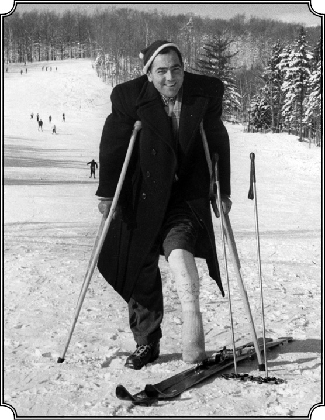
1952 yılında Wermont’da kayak yaparken, aniden önüne çıkan bir kayakçıya çarptıktan sonra, kırık bir topukla yaşama kavgası veren Kemal Karpat.
New York’la gerçek tanışmanız aslında bu tarihte başlıyor tabii.
Evet. Açıkçası Amerika’yı bir ucundan diğer ucuna kat ederek New York’a gelmekle memlekete daha yakınlaşmış oldum ve New York bana ilk bakışta çok sıcak gözüktü. Tabii New York denince Manhattan anlaşılır, bir buçuk-iki kilometre eni, on beş-yirmi kilometre boyu olan bir ada ama iki buçuk milyon nüfusuyla hem Amerika’nın hem de dünyanın merkezi haline gelmiş bir yer. Wall Street, Empire State Building, mağazalar, kuruluşlar, New York’un üçte birini kapsayan Central Park’ın güneyinde yer alır. Sıkışmış gökdelenleri, kalabalık halkı ve yeraltındaki üç metro hattı ve otobüsleriyle, gerçekten de Manhattan’ın güneyi kendine has bir alemdi ve benim New York Üniversitesi işte bu hareketli canlı New York’un tam göbeğindeki 8. Sokak’ta başlayan Washington Meydanı’ndaydı. Böylece sakin, güzel, yeşil Seattle’dan çıkıp alabildiğine kalabalık ve gürültülü New York’un en gürültülü köşesine geçtim ve hoşuma da gitti ilkin. Bir iki hafta Yeni Zelandalı arkadaşım Hopkirk’in kiraladığı ve sonra başka bir yere göçtüğü zaman bana bıraktığı apartman dairesine girdim ve birdenbire kendimi bir çimento ormanı arasında buldum. Odanın küçük bir penceresi vardı, baktım pencereden, her taraf alabildiğine çimento. Yeşillik yok, gökyüzünü dahi göremiyordum. Her şeye rağmen burada iki hafta kaldım ve nihayet artık dünyaca meşhur olmuş, International House, “Uluslararası Ev” denen ve yabancı öğrencilerle Amerikalı öğrencilerin beraber oturdukları yerde bir oda buldum. Takriben orada 700-800 kişi kalıyorduk. Burası, New York’un “Riverside Park” dedikleri güzel bir yerindeydi ve baktığınızda Amerikan eski başkanlarından, Amerika’nın sivil harbi döneminde önemli kumandan olan General Grand’ın mezarının bulunduğu bir tümseği, oradan karşısını, Hudson Nehri’ni ve New Jersey’i görmek mümkündü. Yakınında yine Manhattan’ın çok önemli bir yeri sayılan Riverside Kilisesi var, kendine göre bir ihtişamı olan bir yer. Onun yakınında Columbia Üniversitesi, kadınlara mahsus Barnard College ve yine çok meşhur Juliard Müzik Okulu var, yani oldukça istisnai bir yer. New York Üniversitesi’nde kurlara başladım. Yeraltı metrosuyla yirmi dakika kadar bir mesafedeydi üniversite. Benim için New York yeni bir dünyaydı. İstisnai bir köşeydi. Amerika’nın en seçkin artistleri, kafaları, entelektüelleri oraya geliyor, Amerika’nın küçük şehirlerinin boğucu hayatından kurtulmak isteyen, dünyayı tanımak isteyen gençler de yine New York’a geliyor. Velhasıl New York hem dünyanın, hem Amerika’nın insanlarının karışımından oluşan ilginç bir yer. O zaman olduğu gibi bugün de öyledir. New York benim kanaatimce etüt edilebilecek, gayet verimli birkaç gün geçirilebilecek bir yer, fakat yaşanabilecek bir yer asla değil..
Osmanlılar ve Ruslar
Üniversite’de hangi dersleri, konuları seçtiniz?
Rus tarihi, Sovyet tarihi ile ilgili kurlar almıştım. Seattle’dayken de bu konularla ilgilenmiştim.
Neden Rus tarihi?
Çünkü bana göre Rus tarihi ile Osmanlı tarihi arasında, zıt dursa da paralellikler, benzerlikler vardı. Yani ortaya çıkış ve organize olma açısından. Çarlık ve padişahlık arasında benzerlik var.
Bu konuyu biraz daha açabilir miyiz, bu benzerlik ve paralellikler nelerdir mesela?
Şöyle ki; her iki ülkenin de başında bulunan sultanın veya çarın meşruiyeti dinden geliyor ya da öyle gözüküyor. Çar kilisenin başı, kilise örgütlü bir kurum. Patrik, çar tarafından tayin ediliyor ama patriğin emrinde taaa köylere kadar uzanan bir kilise teşkilatı var. Osmanlı sultanı da halife ama onun böyle bir teşkilatı yok. Halifelik zaten o devirde, yani 19. veyahut da 18. yüzyıla kadar önemi olmayan bir kurum olarak sürmüş. Yalnız padişahın kendi unvanlarını sayarken zikrettiği bir isim olarak kalmış. Yani sultan, halife olmasına rağmen zaten mevcut olmayan İslami kurumların hiyerarşisini kontrol edemiyor. İslam, Osmanlı Devleti’nde müstakildir, her caminin kendine mahsus imamı vardır ve herkes kendi ibadetini istediği gibi yapabilir. Oldukça geç bir tarihte, Abdülhamid devrinde imamların, yani camilerde, mescitlerde vazife görenlerinin devlet kontrolüne alınması gibi bir hareket başlamış. İmam-Hatiplerin okullu olması, imtihan edilmesi gibi bazı teşebbüsler olmuş ama netice vermemiş. Ama Rusya’da bunlar tamamı ile olmasa da yüksek derecede kontrol altında. Ülke olarak Rusya’nın emrinde 19. yüzyılın ikinci yarısında birçok Türk grupları da mevcut. Kazan, Kırım, Orta Asya Türkleri gibi. Ve bunlar Müslümanlığın ayrı bir şekilde oluştuğu, geliştiği ve sonra Anadolu’ya da tesir ettiği yerler. Çünkü Anadolu Müslümanlığı başta güneyden gelmemiş, Araplardan değil Orta Asya’dan gelmiş ve bu da kendine mahsus bir anlayışı ifade ediyor. Hani daha evvel anlattığım gibi İslami önderler, Sarı Saltuk gibi, Orta Asya’dan gelmiş Ahmet Yesevi geleneğine uymuş ve bu bölgelerin geçmişine, karakterine, diline, onların eski Şamanizm’ine çok daha uygun gelen bir İslam gelişmiş. İslam’ın temeldeki ana manası aynen kalmış, Kuran-hadis duruyor ama bir de onu uygulamak, anlamak var ki farklılık buradaydı. Şimdi bu topraklar, yani bizim hayatımızda bu kadar önemli rol oynamış kültür ve din kaynağı olan yerler çarın emri altında. Diğer yandan Rusya’nın temsil ettiği Ortodoks Hıristiyanlığın merkezi İstanbul ise bizim padişahın elinde. Aynı zamanda Hıristiyanlığın, Ortodoks Hıristiyanlığın geliştiği ve uzun süre himaye görerek geliştiği en önemli yer Balkanlar, yine Müslüman bir padişahın emrinde. Garip bir durum aslında…
İslam’ın ve Hıristiyanlığın farklı yorum merkezleri yer değiştirmiş sanki…
Fakat burada, Batı’da hâkim olan Hıristiyanlıktan hemen hemen eser yok. Batı’da Hıristiyanlık, Katoliklik olarak var. Hâlbuki Rusya’da ve Osmanlı Devleti’nde hâkim olan Ortodoks Hıristiyanlık ve Ortodoks Hıristiyanlık, Batı Hıristiyanlığından daha 6. yüzyıllarda ve sonra resmen 11. yüzyılda ayrılmış. Böylece Batı karşısında bir Ortodoks Hıristiyanlık ve bir Müslüman Osmanlı Devleti var ve aynı zamanda bu iki devlet de birbiriyle çatışıyor fakat Batı karşısında birbirine yakın. İkisi de Batı karşısında kendilerini savunmak ihtiyacında. Batı’nın teknolojisi, askeri gücü ve eğitimi her ikisine nazaran çok daha güçlü. Ve böylece her ikisi de bir taraftan Batı’yla uğraşmak, onunla boy ölçüşmek gibi bir sorunla karşılaşıyor fakat aynı zamanda kendilerini kuvvetlendirmek ve Batı’ya karşı durabilmek için Batı’nın teknolojisini, ilmini almak zorundalar. İşte o zaman bende oluşan bu fikirler gittikçe kuvvet kazanmaya başladı ve Osmanlı Devleti tarihinin ve gelişmesinin anlaşılabilmesi için Rusya modelini de incelemek gerektiğini fark ettim. Hatta daha ötesine giderseniz nihayet çarlık devletine son veren Bolşevik Devrimi olmuştur, bir başka şekilde Türkiye’de Osmanlı hilafet kurumlarına ve resmen devletine son veren bir milli devrimle Mustafa Kemal Paşa’nın devrimiyle karşılaşabiliyorsunuz. İki yerde de saltanatlara; birinde Bolşevik devrim, diğer yerde milliyetçi devrim son vermiştir. Rusya son zamanlarda çarlık varken de aslında yavaş yavaş bir Rus milli devleti şekline dönüşüyordu. Osmanlı’nın son devirlerinde, bilhassa Abdülhamid devrinde ise şeklen millilikten kaçmakla beraber aslında toplumun durmadan değişerek, yeni sınıfların ortaya çıkmasıyla, bilhassa yeni bir orta sınıfın, yerli bir burjuvanın ortaya çıkmasıyla millet unsurları oluşmaya başlıyordu. Aslında devletin İslamcılığını, Osmanlılığını adeta bir devlet felsefesi şeklinde bırakarak toplumun kendisi milliliğe doğru gidiyor, Türkleşiyor.
Osmanlılık ve hatta İslamcılık devlet idaresinin, bürokrasinin bir felsefesi olarak kalırken, toplum milli bir oluşum içinde diyorsunuz. Abdülhamid’in halifeliği yeniden ortaya atmasına, İslamcılığı ve İslam ümmetçiliğini öne çıkarmasına rağmen…
Evet, aslında Osmanlı Devleti’nin son yirmi yılı bilhassa Abdülhamid döneminin son yirmi yılı ve İttihat ve Terakki devri toplumsal açıdan bir millileşme devridir. Rusya’da da bir millileşme hareketi var ama ağırlıklı olarak Bolşevikliğe doğru gidiyor. Bu önemli gelişmeleri görüyorum. Şimdi önemli olan benim için asıl mesele bunların teferruatı değil. Farkına vardığınız gibi artık ben sentez yapabilecek kudrette ve tüm teferruatların üzerinden sıyrılarak, bütünüyle bunları karşılaştırabilecek, görebilecek noktaya kafa bakımından gelmişim. New York Üniversitesi’ne gelince bu meseleleri daha yakından incelemek fırsatı buldum ve kadın bir hocadan büyük yardım gördüm. Şimdi durum şöyle: Vazifeyle Moskova’ya giden bir Amerikan diplomatı orada bir üniversiteye mensup bir kadınla tanışıyor, evleniyorlar sonra Amerika’ya dönüyorlar. Ve bu kadın Rus asıllı ve ihtisası Rus Siyasi Düşüncesi olan kadın New York Üniversitesi’nde ders veriyor ve o dersi de ben alıyorum, yani bundan daha iyi bir kimse olamazdı benim için bu dersi alabileceğim. İşte ben bundan Rus Siyasi Tarihi ve Siyasi Düşüncesi derslerini alarak ve durmadan bunları Osmanlı’yla karşılaştırarak, kendime göre yeni ufuklar açıyor, yeni düşüncelere sahip oluyordum. Bu bakımdan bu insanı ve dönemi minnetle anıyorum. Gerçi Seattle’da gene Rus tarihi ile modern tarihi ile uğraşmış ama Slavofiller-Batıcılar gibi ayrımların inceliğini anlamış değildim. New York Üniversitesi’nde bunların farkına vardım. 19. yüzyılda bilhassa Rusya’da gelişmiş fikir akımlarının öncüleri sayılan Slavofiller çok mühimdir. Yani özüne sadık kalarak, Rusya’nın kendine mahsus bir benliği olduğunu ve bu benliğin muhafaza edilmesi gerektiğini, Hıristiyanlığın, yani Ortodoksluğun bu Rus kimliğinin gelişmesinde önemli derecede rolü olduğunu, Ortodoksluk olmadan, Çarlık olmadan bir kimsenin Rus olarak düşünülemeyeceğini söyleyenlerdi bunlar. O tartışma bizde de vardı; Batıcılar ile onların karşısında tutucular, İslamcılar ve benzeri. Ama bizde bu meseleler Rusya’daki gibi açık seçik incelenmemiş, net olarak ortaya atılmamıştı. Mesele biraz duygusal, iyi ve kötü açısından ele alınmıştı. Rusya’da ise bu biraz felsefi alanda da gelişmişti.
Türkiye’de o dönemde bir Pan-Türkist akım vardı galiba?
Türkiye’de hakiki manada siyasi düşünce, yani açık seçik şekliyle ancak İttihat ve Terakki devrinde tartışılmaya başlamıştır, cereyanlar olarak. Osmanlı’da bu tartışma yoktur. Kendi kendine birtakım gelişmeler olmuş fakat akıl süzgecinden geçirilmemiştir ki bu maalesef Osmanlı zamanında da toplumun, bilhassa İslam toplumunun çok açık seçik bir karakteristiğidir, yani kendine mahsus siyasi düşünce kuralları geliştirmemiştir. Her olay birbiriyle karıştırılıyor, rastgele Allah vergisi yahut da öylesine olmuş bir olay olarak görülüyor. Esasında daha İstanbul’da üniversiteye devam ettiğim zaman bu sistematik olmayan, organize olmayan, önemliyi önemsizden ayırmayan, kalıcıyı geçici olaydan ayırmayan düşünceye karşı bende büyük bir tepki uyanmıştı, yani ben bir tarafta analiz, diğer tarafta sentez yapmak meylindeydim. Bunlar yoktu Osmanlı’da. Ancak şimdi gelişmeye başladı Türkiye’de. Osmanlı devrinde bilhassa İttihat ve Terakki’ye kadar yoktu. İttihat ve Terakki devrinde siyasi akımlar, kendine mahsus bir renk ve istikamet almıştır ki bunları en güzel ifade eden de Ziya Gökalp olmuştur, hani “Üç Cereyan” (Türkleşmek, İslamlaşmak, Muasırlaşmak) makalesi var ya işte orada; İslamcılıktan, Milliyetçilikten, Osmanlılık’tan Modernizm’den söz ediyor. Daha evvel yine Yusuf Akçura “Üç Tarz-ı Siyaset” şeklinde aynı konulardan söz ediyor. Yani sistematik siyasi düşünce ilk defa İttihat ve Terakki’yle başlıyor. Hâlbuki Rusya’da bunlar daha evvel başlamış.
Narodnikler, (halkçılar) döneminde yoğun bir tartışma var değil mi?
Evet onlardan öncesi de var, Aleksandr Herzen var, Batıcıların temsilcisi, Slavofillerden Aksakov var ki bu muhtemelen Müslüman kökenli. Zaten Rusya entelijensiyasının bir kısmını İslam’dan Hıristiyanlığa geçmiş Tatar elitleri oluşturuyor, bilhassa Kazan’da. Artistlerin arasında da yine birçok kimse mesela Rahmaninof gene bunlardan. Mesela Prens Yusupof vardır Rasputin’i öldüren. 19. yüzyılın ikinci yarısında Ruslar Kazan Müslümanlarını Hıristiyanlığa çekmek için büyük bir kampanya açtılar. Kazan Ortodoks seminerinde yeri olan Papaz İlminski büyük bir kampanya açtı ve o zaman oldukça önemli sayıda Kazan Müslümanı Hıristiyan oldu ama dillerini muhafaza ettiler. Bir müddet sonra da bunların bir kısmı tekrar İslam’a döndü Rusya’da. Bunlardan Türkiye’de adeta kimsenin haberi yoktu, son zamanlarda daha çok bilinir oldu. Yani orada sistematik olarak Hıristiyanlaştırma vardı.
Osmanlı’da da Müslümanlaştırma…
Bizde ilk Batı düşüncesini getiren İshak Efendi mesela, Selanikli bir Yahudi ama bunlar olağandır. Ben Türk tarihini, Osmanlı tarihini, Türk toplumunu yeni bir bakış açısıyla, yeni bir şekilde ele almak zamanının geldiğine inanmaya başlamıştım. Tartışıyordum kendi kendime, bunu yapabilir miyim, yapamaz mıyım gibi. Fakat arkamda kalan on senelik eğitim, tecrübe falan bende yeni yeni fikirlerin oluşmasına yol açmıştı ve bunlar New York’ta her çeşit düşüncenin, her çeşit insanın birbiriyle bağdaştığı, çarpıştığı bir ortamda oluyordu. International House’da kalıyor, New York Üniversitesi’nde ders alıyor, birçok yeni insan görüyorum, tanıyorum ve yeni yeni düşüncelere sahip olmaya başlıyorum. İşte o senem böyle geçti.
1950...
1950. Fakat diğer taraftan kişi olarak, yaşam olarak artık Amerika’nın o alabildiğine pragmatik, pratik havası, insanların birbirine karşı, sanki tamamı ile maddi cepheden bakmaları beni ruhen çok yormaya başlamıştı. Artık dedim “ben bu cemiyete dayanamam!” Bir yerde hakikaten bir yorgunluk ve Amerika dışına çıkmak ve bir daha dönmemek kararı beynimde oluşmaya başlamıştı. O ilk geldiğimdeki heyecan yok olmuş, yeraltı trenlerinin o sıkışık, pis kokulu havası beni daha çok olumsuz etkilemeye başlamıştı. İnsanların acele, bir yere yetişecek gibi koşuşmalarından ben yoruluyordum. O ilk günlerdeki heyecan, bu defa bir yorgunluğa, bıkkınlığa dönüşmeye başladı ve artık İstanbul hafif hafif gözümde tütmeye başladı.
“Ermeni Meselesi”yle tanışma
Ama doktora kurlarını tamamlayacaksınız herhalde?
Kendi kendime “alacağını aldın artık, mastırını yaptın, kurları da tamamla ve dön memleketine” diyordum. 1950 senesinde bir başka müracaatım oldu. Yaz aylarında Birleşmiş Milletler Örgütü, örgütün anlaşılmasını sağlamak amacıyla ileride üniversitelerde uluslararası dersler verecek kimselere iki aylık staj imkânı veriyordu, yani yalnız Amerikalılara değil, tüm dünya ülkelerinden gelenlere. Her yaz otuz kişi falan alıyordu. Bu şekilde stajyer olarak alınanlar merkezi New York’ta olan Birleşmiş Milletler’in konseylerinden birinde çalışıyordu, ya Ekonomik Sosyal Konsey yahut da başka bir yer. Gittim sordum, “Türkiye’den müracaat eden var mı?” Kimse müracaat etmemiş, para da verilmiyor ama faydalı bir şey. Ben aynı zamanda Uluslararası İlişkiler diye bir ders alıyorum, hocama da sordum “çok iyi olur” dedi “ben de desteklerim gidersen” dedi. Müracaat ettim oraya ve iki ay Birleşmiş Milletler’de çalışma izni aldım, yani otuz kişilik stajyer grubunda ben de yer aldım. Fakat arada bir boş zaman kaldı, yani işbaşı yapıncaya kadar üç haftam var. “New York’tayım ve bu üç haftayı da değerlendireyim” falan diye düşündüm. “Öyle bir şey yapayım ki bu Amerika’nın bir başka yönünü, bir başka tarafını tanıyayım” dedim, yani New York’a kapanmakta mana yok, New York’u artık biliyorum.
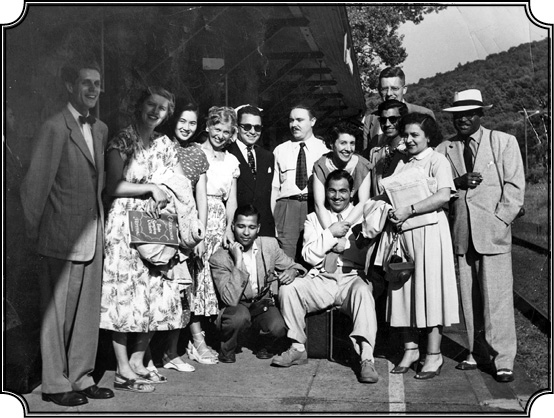
Kemal Karpat Birleşmiş Milletler’deki arkadaşlarıyla bir gezide
keyifli dakikalar geçirirken.
Para derdiniz de yok o kadar…
Öyle sıkıntım yok. Üstelik üniversitenin sayılı burslarından olan Penfield Fellowship bursunu da kazanmıştım ki, o bana yalnız okul taksitlerini değil geçim masraflarını da karşılama imkânı veriyordu. Bu bursu aldığım sırada ilk defa Ermeni meselesinin başlangıçlarıyla yahut da olumsuz taraflarıyla karşılaştım. Bu burs üniversitenin önemli burslarından sayılırdı ve bu bursları alanlar tebrik edilir ve isimleri tanıtılır yani önemli bir başarı sayılırdı. Siyasi İlimler Bölümü’nün Siyasi Araştırmalar kısmı var. Ben, bana bu bursu sağlayan Bölge Araştırmaları kısmındayım. O kısmın başında Profesör Arnold Zürcher vardı, beni çok tutardı. Amerikan Siyasi Düşüncesi ve Kurumları dersini verirdi. O konunun uzmanıydı. West Point Askeri Akademisi’ndeki derslerinden söz eder ve şöyle derdi: “Bu askerlerin Anayasa’ya bağlılıkları ve sivil idareyi üstün görmeleri içlerine o kadar işlemiş, o kadar kökleşmiş ki hayran olmamak elde değil. Amerika istikrarını, gücü ve ekonomik gelişmesini, sivil idare ile askerlerin bu şekilde anlaşmasına borçludur.” Ben Zürcher’in derslerinde çok soru sorduğum, durmadan kendisiyle tartıştığım için (öğrenmek istiyordum çünkü), hoşuna gidiyordu. “Sen çok akıllı bir çocuksun” diye çok kompliman yapar ve beni bu bursa namzet gösterirdi. “Öğrencilerimin arasında şimdiye kadar gördüğüm en iyi talebesin” derdi. Ve ben o bursu kazandım. Kazandıktan sonra “Yahu” dedi bizim Profesör Zürcher “seni tanıtalım, git okulumuzun gazetesi var, onlar seni tanıtsınlar.” Telefon etti; “bizim bir öğrencimiz var onu size gönderiyorum, lütfen onun başarısını anlatacak bir yazı hazırlayınız” diye. Gazeteden de “hemen gelsin” dediler. Gittim, baktım gazetenin editörlüğünü yapan bir genç, bildiğim kimselerden farksız. “Siz Penfield bursunu almışsınız” dedi, “evet” dedim. “Hakkınızda biraz bilgi edinelim, tanıyalım sizi” falan dedi. “İsmim Kemal Karpat, Türkiye’den geliyorum” der demez derhal yüzü değişti sonra konuşma şöyle geçti:
“Sen Türk müsün?”
“Evet.”
“Siz Ermenileri öldürmüşsünüz, siz canisiniz.”
“Allah Allah, ne demek istiyorsunuz, arkadaş ben bunun için gelmedim buraya, üstelik sen benim kim olduğumu bilmiyorsun. Türk olduğum için, sırf bunun için, beni mahkum ediveriyorsun, beni cani yapıveriyorsun.”
Açıkça o zaman Ermeni meselesinin teferruatını da fazla bilmiyordum, o devirlerde Ermeni meselesi bu kadar konuşulmuyordu. I. Dünya Savaşı’nda bir şeyler olduğunu biliyorum ama kendimi de asla suçlu hissetmiyorum. Ben ona bunları da söyledim ve dedim ki “senin bana bunu söylemeye hakkın yok.” “Ben anlamam” dedi falan… Daha önce bu kadar düşüncesiz, topyekun mahkumiyet, olayları araştırmadan, öğrenmeden karşısına gelen her Türkü Türk olduğu için mahkum eden bir davranışla karşılaşmamıştım açıkçası. Bu, Amerika’da görülen hoşgörü, objektif olma, iki tarafı dinleme alışkanlığı ile asla ilgisi olmayan bir davranıştı. Çünkü bu çocuk Ermeniymiş. Ve hakikaten benim hakkımda o yazıyı yazmadı, yazması gereken yazıyı yazmadı. Bunlar elli küsur sene evvel oldu ama topyekun mahkumiyet bugün de mevcut. Çok daha yaygınlaşmış üstelik. Böyle bir tutum karşısında nasıl bir tavır alınması gerektiğini daha o zaman düşünmeye başladım çünkü karşınızda oturup konuşacağınız objektif kimse yok. Sizi bidayetten (en başından itibaren) mahkum eden hem savcı, hem hâkim pozisyonuna geçmiş “sen kabahatlisin, suçunu itiraf et ve cezanı çek” diyen birileri var ve buna ben maruz kalıyorum sırf Türk olduğum için. Türk olmak koskoca bir tarihi sırtında taşımak demek. Ağır bir yük ama şerefli!
Ve Amerika’da kaldığınız uzun yıllar boyunca sık sık karşınıza çıktı bu tavır. Ermeni meselesini ne zaman incelemeye başladınız?
Sık sık karşılaştım. Zamanı gelince bunları daha ayrıntılı anlatırım. Ermeni meselesini de incelemeye başladım. Yazdım da. Hatta konferanslarda Ermeni arkadaşlar edindim. Ermeni yazarların birçoğu beni sayarlar, tarafsız olduğumu kabul ederler, hürmet de gösterirler ama zebun olmuş milliyetçi unsurlar var, onlarla bir şey yapamazsınız, konuşamazsınız. İşte ben bu Ermeni meselesi ile ilk defa orada karşılaştım. Ama Ermenileri ilk defa mı tanıdım? Hayır. Romanya’da Ermeniler vardı ve İstanbul lehçesiyle bizden çok daha güzel Türkçe konuşurlardı. Bizimle de gayet dostlardı ve ben orada onların ağzından hiçbir zaman Amerika’daki ve sonra Fransa’daki Ermenilerden işittiklerimi işitmedim. Birçok bakımdan benim eskiden tanıdığım Ermeniler bana Rumenlerden, Bulgarlardan, Ruslardan çok daha yakındı, yani aramızda tarif edilemeyecek benzerlikler, psikolojik yakınlıklar, bağlar vardı. Ben Romanya’da Ermenileri o şekilde gördüm. Ablamın eşinin, Köstence’de yaşayan eniştemin Ermeni dostları vardı, her zaman onlarla yemek yer, tavla oynardı ve aralarındaki samimiyet, aile samimiyetinin de ötesine giden bir samimiyetti. Hatta bir keresinde de ben İstanbul’da Hukuk Fakültesi’ne devam ettiğim zaman Romanya’da bulunan bir Ermeni ailesine eniştem, yani benim ailem, bir miktar para vermiş, onun karşılığında ben İstanbul’da müzik aletleri olan bir Ermeni’den 100 Lira kadar mı ne, Romanya’da verilen paranın karşılığını almıştım ve dost olmuştuk. Fakat o Ermeni’yi de Aşkale’ye sürdüler, şeyde, hani…
Varlık Vergisi döneminde mi?
Varlık Vergisi’nde. Artık onun ödeyebilecek öyle bir hali yok, sonra o Ermeni kalktı Ermenistan’a göç etti. Yani bu meseleleri tabii iki taraflı da görmek lazım ama benim Ermenilerle olan ilk temaslarım çok yakın, samimi olmuştu ve bu Doğu Anadolu’da olup biten olaylardan hiç kimse söz etmezdi. Fakat ben bu tip amansız Ermeni milliyetçileriyle Amerika’da doğmuş, büyümüş kimseler olarak karşılaşıyordum. Diğer taraftan yine aynı üniversitede benim bölüme başkanlık yapan, adından söz ettiğim ve Profesör Zürcher’in asistanı olan Haigh Babian vardı, o bana yakındı. Böylece iki Ermeni tipiyle karşılaştım. Biri genç, alabildiğine şovenist ve diğeri ise daha makul, bu olayları esas tutarak hareket etmeyen insan tipi Haigh Babian. Onunla çok iyi dost olduk.
Profesör Zürcher bu konulara girmiyor muydu?
Pek girmezdi. Dediğim gibi beni de tutar ve takdir ederdi. Şunu da söz arasında söyleyeyim Profesör Zürcher benim çalıştığım bölümü kendisi kurmuştu. Doğu Avrupa ve Ortadoğu’ya ilgisi vardı. Zürcher, Amerika’nın West Point Askeri Akademisi’nde de ders veriyordu ve aynı zamanda Alfred Sloan Vakfı’nın müdürüydü. Alfred Sloan ise uzun zaman General Motors’un başkanı olan şahıstır. O devirdeki General Motors, Amerika’nın en büyük şirketiydi. Adeta Amerika’nın endüstriyel gücünün timsaliydi. Böylece Zürcher vasıtasıyla biz Amerika’nın bir başka kurumuyla tanışmış olduk: General Motors.
Tavuk çiftliğinden kaçıyor
Evet, tekrar New York’u tanıma kararı aldığınız güne dönelim…
İşte o Birleşmiş Milletler müracaatından sonraki günlerdeyim. Amerika’yı daha derine inerek anlamak istiyorum. Sonra bir yerde baktım ilan var. New York Eyaleti’nin kuzeyindeki bir tavuk çiftliğinde çalışacak biri aranıyor. Telefon ettim, cevap geldi, olumlu. Meğerse o tavuk çiftliğinin ortaklarından biri New York’ta bir avukatmış. O avukat bana telefon etti ve “şu saatte buluşalım” dedi. Bende tavuk çiftliğinde çalışacak görüntü yok, kılık kıyafet yani. Doktorasını almak üzere olan, iki hafta sonra dünyanın en yüksek kalitedeki yeri Birleşmiş Milletler’de çalışacak bir adam olarak görünmemem lazım, çünkü işi istiyorum bir taraftan. Neyse üzerime en eski paltoyu, pantolonu çektim, sakalı da bıraktım, tıraş olmadım, tespit edilen gün ve saatte adamla buluştum. “Ben muhacirim, Orta Avrupa’dan geldim ve böyle bir iş arıyorum” dedim. Adam bana baktı, “peki daha önce çalıştın mı, bu işleri yaptın mı?” diye sordu. “Bütün ömrüm boyunca başka bir şey yapmadım zaten, bu gibi işlerde çalıştım” falan diye yalan söylüyorum artık. Şimdi ben o işi alırken şöyle düşündüm “orada dört-beş saat falan çalışacağım. Ne işi olabilir bir tavuk çiftliğinde, yumurtaları koymak, hesabını yapmak falan ama ondan sonra kırda oturur, yanıma bir sürü kitap alır onları okurum.” Tabii her zamanki gibi evdeki hesap çarşıya uymuyor. Gittik çiftliğe, çiftlik sahibi ve bu avukatın ortağı olan akrabası (Yahudi onlar da), yaşlanmış ve artık çiftlik işini pek beceremiyorlar. “Tamam” dedik “işimiz nedir?” “Basit, makineler vardır, onlara yem döküyorsun, yumurta topluyorsun, ondan sonra makinelere koyuyorsun, yumurtalar yıkanıyor, ondan sonra pazara hazırlanıyor” falan, yani bilmediğim bir sürü şey. Ama şunu da itiraf edeyim ki, aslında tavuk çiftliğini seçmemin bir başka nedeni de şuydu: “Doktoramı alıp Türkiye’ye dönünce şöyle İstanbul dışında çiftlik gibi bir şey alır ve orada bir tavuk çiftliği kurarım” diye düşünüyordum. Seneler sonra İstanbul dışında küçük bir yer aldım, kendimize yetecek kadar tavuk yetiştirmek istedik, pek başaramadık. Civcivleri kartallar alıp götürdü, fareler yedi.
Yani sadece Amerika’yı tanımak değil, geleceğinize yatırım için de işi öğrenmek istediniz?
“Bunları öğreneyim” dedim, yani “her şeye rağmen bir ilim adamının pratikten ayrılmaması, pratiği unutmaması gerektiğini” de düşünüyorum. Onun için kabul ettim, yani hem üç hafta zamanımı kırlarda geçireceğim, hem de tavuk çiftliğinin nasıl yönetildiğini öğreneceğim, yani zamanımı değerlendireceğim. Nitekim gittim o çiftliğe ve bunları öğrendim ama benim beklediğim gibi öyle dört-beş saatlik bir çalışma ile yetinmek imkânsız. Tabii yaşlı adam, böyle genç bir işçiyi de görünce her şeyi bana bıraktı “hadi onu yap, bunu yap”, baktım başa çıkılacak gibi değil. Kitap okuyacak vakit yok, yorgun düşüyor, yatıyor uyuyorum. Tabii parası da var, ama değmez. Adam da “artık bu adamdan ne kadar istifade edebilirsek edelim” diye tam manasıyla çalıştırmaya bakıyor ve benden azami istifade etmek istiyor. Orada iki hafta geçirdim, daha bir hafta kalmıştı ama artık tahammül edemedim. International House’da kalan bir arkadaşı aradım, “arkadaş beni çağırın, acele işi çıktı diye telefon edin” diyerek telefon numarasını verdim. Birkaç saat sonra arkadaş telefon edip “Acele New York’a gelmesi lazım” diye not bırakmış. Adam panikledi. Ben “gitmek zorundayım yoksa sınır dışı edilirim” dedim.
“Ama benim işim yarıda kalıyor.”
“Vallahi ne yapayım?”
“Peki senin paranı vereceğim ama param yok, onun için Monticello’ya birlikte gideceğiz, tavukları satıp senin paranı vereceğim.”
Ben tabii bir taraftan özür falan diliyorum. Neyse şehre gittik. Şimdi tavukları hesap eden alıcı da Yahudi, bu hesap işlerinde hep Yahudiler var. Tavukları birer birer tarttı ve kilosunu, fiyatını bir tarafa yazarak sıraladı “tamam” dedi sonra “toplam sana bu kadar vereceğim.” Bu arada ben de onun yaptığı hesaba bakıyorum. Hata yaptığını fark ettim. Gereğinden fazla ödeyecek yani. Tutamadım kendimi,
“Sen hata yaptın orada.”
“Ne hatası?”
“Bak hesap et.”
Bir kere daha hesap etti, “Haaa doğru gerçekten” diyerek döndü ve hemen orada iş teklif etti bana. Tabii çiftlik sahibi buna çok kızdı “Beni işimi yarıda bıraktığın yetmiyormuş gibi adam bana biraz fazla verecekti, ondan da mahrum ettin” falan, bana kızdı gitti. Öbür adam ısrar ediyor “hemen sana iş vereyim, derhal bugün başla burada” diye ama benim tavukçulukla işim bitti. Otobüse atladım döndüm ve bir hafta sonra Birleşmiş Milletler’deki işime başladım.
Burada farklı bir alana geçelim. Şimdi siz Romanya doğumlusunuz, Türkiye’den geliyorsunuz, orada Rus tarihi ve siyaseti dersleri alıyorsunuz, hem de Rusya’dan gelmiş bir kadından. Sonra Birleşmiş Milletler’e giriyorsunuz. Şimdi o dönem Amerika’da Soğuk Savaş’ın iç politikada da çok ciddi yansımaları var, solcu ve komünist avı var. Sizin peşinize düşen olmadı mı hiç, hani “bu adam kimdir, necidir? Niye bu tarihi alıyor, niye buralara girip çıkıyor” diyen olmadı mı?
Hayır. O tarihte hiç yok. Zaten orada bulunduğum sürece, birçok konuşma, siyasi konuşmalar dinliyorum, bazı toplantılara gidiyorum ama fiilen karışmıyorum, bir şeyi protesto etmiyorum. Çünkü ben kendimi Amerikalı saymıyorum. Buraya öğrenci olarak gelmişim, öğrenmek maksadıyla gelmişim, bu memleketin siyasetine karışmak için değil. Üstelik o devirde ve büyük çapta da bugün Amerika’da hakikaten bir özgürlük havası hâkim. Bilhassa üniversitelerde, istediğini konuşuyorsun, istediğini soruyorsun. Benim için mühim olan da buydu. İlle “ben kendi fikrimi öne süreyim, dünyayı şu şekilde yönetmek istediğimi yahut da yönetilmek istediğimi söyleyeyim” diye bir tavır yok bende ve olmamıştır da. Eğer mevcut koşullar ve mevcut muhit normal işlerse, ben de onun içinde normal bir insan gibi yaşamak isterim, ötesi beni ilgilendirmez. Amerika’yı ben vatan olarak, memleket olarak görmediğim için hiçbir şeye karışmamıştım ve belki de beni bu nedenle takip etmemişlerdir. Etmiyorlardı herhalde, bilmiyorum. International House’da vardı bazı böyle sağcı, solcu unsurlar ama sayıları çok değildi ve dediğim gibi bende böyle bir şey olmamıştır, sonradan olmuştur ama o da başka bir nedenle olmuştur.
“Bir pencere, sarı sıcak”
Yıl 1950. New York’tasınız. Birleşmiş Milletler’de stajyersiniz. Üniversite’de doktora yapıyorsunuz. Bir taraftan Amerika’da kendinizi gerçekten özgür ve gerçek demokrasi içinde hissediyorsunuz, bir taraftan da vatana dönmek isteği var içinizde, ne yaptınız?
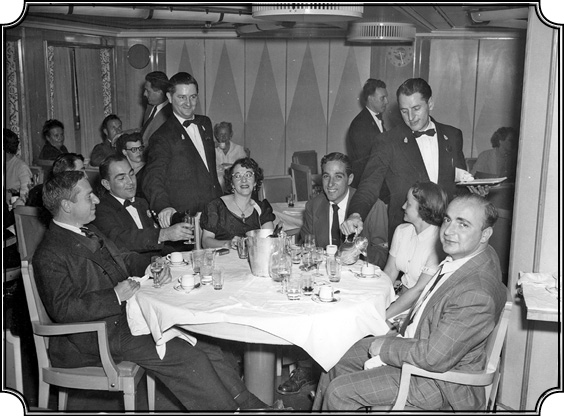
1953’de Amerika’dan Fransa’ya giden gemide bir yemekte. Karpat bu kez askerlik için Türkiye’ye geliyor (soldan ikinci).
Benim derdim bir an evvel Amerika’dan çıkmaktı. Birleşmiş Milletler’de çalışırken bir taraftan da doktora imtihanlarının sözlüsünü verdim. Jüri karşısında bu imtihanlardan da geçtim artık yapılacak iş, tezimin yazılması. Belki bir iki kur daha almam gerekiyor, o kadar. Fakat bu arada Amerika’dan çıkmak için bahane arıyorum. Ve gittim benim profesöre, “Doktora tezi araştırması için Türkiye’ye gitmek istiyorum. Bursumun bir kısmının bana nakden verilmesi mümkün mü?” dedim. “Olur” dedi. İşin garip tarafı şu: Bölümde, benim doğrudan doğruya çalıştığım profesörün ismi Basil Vlavianos. Atinalı bir Rum avukat, tahsilini Fransa’da yapmış, Atina’ya dönmüş ve çok az zaman içinde kendine muazzam kariyer yapmış, Atina’nın en gözde genç avukatı haline gelmiş ve bu kadar meşhur olunca da Atina’nın armatörlerinden birinin kızı buna aşık olmuş ve onunla evlenmiş. Ve böylece bizim Vlavianos, büyük bir armatör ailesine girerek nakliye gemilerinin müdürlüğünü yapmaya başlıyor. Ondan sonra Amerika’ya göçmüşler ve New York’a yerleşmişler. New York’un lüks bir yerinde gayet nefis bir villaları vardı. Bizi davet etmişti falan. Vlavianos aynı zamanda bizim üniversiteye gelerek uluslararası hukuk dersi veriyor. Benim bölgeme ve çalışma konularıma en yakın o olduğu için, benim tez danışmanım olarak tayin edildi. Onun üstünde de Zürcher var. Vlavianos da Zürcher sayesinde bu dersi aldığı için unvanı tam profesör değil, ama bir şeref payesi işte. Zürcher’e tabi olduğu için Zürcher’le arasının çok iyi olmasını da istiyor. Bu arada ben de artık bir an evvel Amerika’dan çıkmak için can atıyorum. Vapura ayıracak param var ama yetersiz, “acaba nasıl tasarruf ederim” diye kaygılanıyorum. Sonra bir gün Vlavianos’la konuşurken, “Türkiye’ye gidiyorum, araştırma yapmak istiyorum ama bu yol parası falan düşündürüyor beni” gibi şeyler söyledim. “Kaygılanma, benim gemilerden bir tanesine bindiririm, atar gönderirim seni” dedi ve nitekim öyle oldu. Amerika’dan Avrupa’ya kömür taşıyan şileplerinden bir tanesi oradaymış. Sekreteri bir gün haber verdi “Baltimore’dan şilep kalkıyor, falanca rıhtımdadır, onlara haber verdik, sizi bekliyorlar, hemen oraya gidin.” Haberi alır almaz Baltimore’a gidip şilebe bindim. Aynı şekilde Amerika’dan Avrupa’ya benim gibi bedava gitmek isteyen bir Rum çocuk vardı. O da Avrupa’ya tıp tahsili yapmak için gidiyormuş. Yeni evlenmiş adam, karısından ayrılma acılarıyla baş etmeye çalışıyor. Şilebe bindik ama kanuna uyması için ikimizi de geminin mürettebatı olarak yazdılar. Biz gemi mürettebatıyız ama bir şey yaptığımız yok. İki hafta o küçücük kömür şilebiyle okyanusta çalkalandık durduk, fakat boş da durmadım. Çünkü ayrılmazdan evveli Haigh Babian dediğim Ermeni, tezinde yararlanmak amacıyla Türkçeden İngilizceye çevirmem için bazı kaynaklar vermişti. Bir miktar para karşılığında anlaşmıştık ve ben gemide bunları tercüme ettim ve böylece iki haftanın sonunda Rotterdam’ı bulduk. Niyetim açıkçası bir daha Amerika’ya dönmemekti. Rotterdam’da indik ve ben o soğuk Hollanda’yı o kadar sıcak o kadar yakın gördüm ki kendime, ayyy içime böyle bir ferahlık, bir sıcaklık, bir rahatlama duygusu yayıldı ki…
Hani vatana kavuşma gibi…
Vatana kavuşmuş gibi oldum. O gece, inanmazsınız hayatımda ilk defa oluyor bu, o Rotterdam mahallelerini dolaştım, doyamadım. O evlerin içinde küçük lambalar yanmış, bazen perde arasından sofraya oturmuş aileleri görüyorum, içim gidiyor, “ahh hayat buymuş” diyorum “ayy kurtuldum şu Amerika’nın ruhsuzluğundan” diyorum. Belki sabah ikiye, üçe karşı böyle mest olmuş, mutluluktan sarhoş olmuş bir şekilde döndüm, yattım. İnanılmayacak bir şey, o kadar özlemişim Avrupa’yı, Avrupa tarzı yaşayışı. Çünkü biz bir bakıma Avrupa’ya daha yakınız. Neyse ondan sonra Paris’e geldim. Paris’te yine bizim Mithat Nalbantoğlu’nu buldum. Konuştuk dertleştik, çok tatlı bir insandı, “Breee Kemal” derdi Rumeli şivesiyle, “Breee Kemal.” Sonra Türkiye yolunu tuttum trenle. Eh işte o tren yolculuğu ile Avrupa’yı bir uçtan bir uca geçtim, içlerinde en güzel tecrübe Yugoslavya oldu. Çünkü Yugoslavya, Sovyetler’den kopmuş, özgürlüğünü ilan etmiş ve Avrupa’ya açıldığı için serbest geçiş veriyor. İşte o sayede Belgrad’da üç gün kaldım, trende bir iki üniversiteliyle karşılaşmıştım o vesileyle. Bir tanesi o devirde Yugoslavya Danıştay Mahkemesi reisinin kızıymış, Türkoloji’ye merak salmış, Türkçe öğrenmek istiyor, hatta benden Türkçe lügati istedi. Neyse kız (ismini unuttum), beni evine davet etti, onunla biraz dolaştık, Belgrad’ı gördük ve Türkiye’ye geldim. Gene sabah açılırken, trenle Sirkeci’ye indim ve akrabam Selim’i buldum.
Oralara kadar gelmişken Dobruca’ya geçmek istemediniz mi?
Dobruca’ya geçmek isterdim ama Rumenler vize vermiyordu. Ben Amerika’ya giderken trenle Dobruca’ya geçip ailemi görmek istedim, vize istedim vermediler, Türk vatandaşı olmuştum ya…
“Türkiye’de yapamayacağım”
Ülke tekrar nasıl göründü gözünüze, Menderes Hükümeti kurulmuştu artık, bir özgürlük havası var mıydı?
Bir özgürlük havası esiyordu ama derinlere inmiyordu. Eskiye nazaran komünist korkusu çok daha artmış, komünistlere karşı tedbirler çok daha fazla sertleşmişti. Küçük şüpheler hemen büyük takiplere yol açıyordu. İşte ben bu hava içinde birkaç ay kaldım, yayınlar yaptık Kemal Sülker’in gazetesinde. Çünkü ben hâlâ “olursam işçi avukatı olacağım” düşüncesindeyim. O dönem şöyle bir kararsız ruh hali içindeyim: “Türkiye’de, kalırım artık, bir yolunu bulup doktora tezimi de hazırlarım. İyi ama Türkiye’de ne yaparım?” Artık alışmışım ilim alemine, kitaplara, düşünmeye, tartışmaya. Avukatlık artık beni cezbetmiyor. Davalara girmek, dosyaları tamamlamak ve bunu sırf para için yapmak, artık bana uygun gibi görünmüyor. Gerçi görünüşte bunu hak, adalet için yapıyoruz gibi ama aslında geçim sağlamak gibi de bir kaygımız var. Artık ömrümü bu şekilde geçirmek fikri hoşuma gitmedi. İşte mastır tezimi o sırada yayınladık 1950’nin sonuna doğru, 1951’e giriyorduk. Fakat İstanbul’da bir iki ay böyle “ohhh vatana geldik” havası geçtikten sonra, o kabus gibi sıkıcı politik hava basmaya başladı. Kore Harbi de devam ediyor…
Dolayısı ile hemen şüpheliler listesinde yerinizi…
Tabii şüpheliler listesine girdim ve o zaman yahut da ondan bir müddet sonra bana yurtdışına çıkma yasağı konmuş ama bu da bizim bürokrasinin işleyişini anlatır. Bu ancak yirmi beş sene sonra ortaya çıktı. İnanılacak bir şey değil ama Amerika’dan geldim, Yeşilköy’den giriş yaptım, o zaman da bu yeni koyulmuş bilgisayardan yoklamalar var ya, artık köşede bucakta kalmış ne kadar isim varsa hepsini geçirmişler. Ben 1975’te ya da 76’da huduttan girerken “zank” diye bilgisayar sinyal verdi, görevli de cama vurdu “bu adam aranıyor, bir şeyi var” diye. Oradaki memur “bir şey gözükmüyor ama yasağınız var, emniyete gideceksiniz” dedi. 1. Şube’ye gittim İstanbul’da, “böyle böyle” dedim “ben filancayım”, aradılar taradılar bir şey bulamadılar. “Yok” dedi memur, “kardeşim, sizin hakkınızda herhangi bir şey yok”. Çıkışta, “rank” diye tekrar bilgisayar ikaz verdi, memur “çıkamazsınız sizi komisere götüreyim” dedi. Komisere gittik. “Beyim” dedim “bu gelirken de oldu, ben gittim araştırdım, herhangi bir şey olmadı, anlamıyorum, bakın işte pasaportuma, senede iki-üç defa gitmiş gelmişim, bir şey olmamış, niye bu defa oluyor” dedim. Adam baktı “peki” dedi “siz gidin ama bunu da sildirin.” “Bu nedir?” dedim, “Ya beyim, 1950’de mi 1951’de mi kayıt düşülmüş işte” dedi. Yirmi beş sene evvel kayıt düşülmüş ve hakkımda bir işlem yapılmamış ve şimdi bilgisayara sağdan soldan ne kadar isim varsa hepsini doldurmuşken bizim ismimiz de konulmuş yurtdışına çıkma yasağı var diye. Amerika’ya döndükten sonra Hariciye’ye mektup yazdım, dedim “Nedir bu yaptığınız? Ben Türkiye’yi savunuyorum dışarıda (o zaman Wisconsin Üniversitesi’ne girmişim, bir sürü faaliyetim var), Türkiye’ye girip çıkacağız, “yasak var!” Niye yasak? Eğer bir suç işlemişsem, beni mahkemeye çıkarın, suçumu aklayayım.” Sonra sildiler kaydımı. İşte işçi hakkında o gazetede yayınlananlar gayet ilmi çalışmalardı, herhalde onlardan dolayı olmuştu veyahut da herhangi bir sebeple birisi “yahu ben bu adamdan şüpheleniyorum, herhalde iyi bir adam değildir” diye söylemişti. Neyse o zamana dönelim, işte biraz kararsızlık geçirdikten sonra; “ben tekrar döneyim” dedim. 1951 sonlarıydı, elimde doktora yok, ama o hava sıkmaya başlamıştı beni. Seçimler olmuş Demokrat Parti gelmiş, büyük bir nefes alma olmuştu. Görünüşte tek parti devri sona ermeye başlamıştı… (Fakat olaylar pek de beklediğimiz gibi gelişmedi.) Tekrar Paris’e gittim…
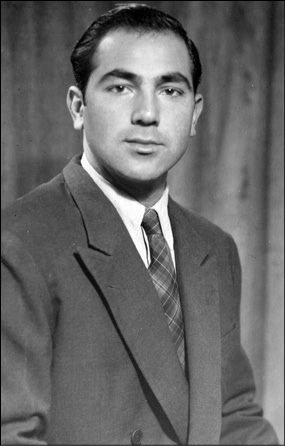
1950’li yılların hemen başındaki Karpat.
Türkiye’de ne kadar kaldınız o gelişinizde?
Dört-beş ay kadar kaldım.
Hemen kaçmak istediniz?
Artık anlamıştım, elimde belgesi olmadan kimse beni doktora tahsili yapmış bir kimse olarak tanımıyor. Amerika’da da bir geçerliliği yok, burada da, yani iki cami arasında binamaz olarak kalmışım. Üstelik 1947’de benimle mezun olan arkadaşlar avukatlığa başlamış, mevki sahibi olmuş, isim yapmış, iyi para kazanıyorlar, onların yanında ben bir hiçim. “Amerika’ya gitmiş, evet çok şeyler öğrenmiş, kafası gayet güzel gelişmiş” ama pratikte bir şey yok, pratikte onlar hâkim, gayet iyi durumdalar. Açıkçası kendimi çok rahatsız hissettim. Tabiatıma aykırı bir duruma düştüğümü hissettim. Çünkü ben genellikle başladığım bir işi bitiririm yahut da bitirmeye gayret ederim, burada ikisini de yapamamış durumdaydım, açıkçası utandım ve üzüldüm. Neyse nihayet tekrar Paris’e döndüm ve benim Vlavianos’a, “haber ver, gemi nereye geliyor, döneyim bir an evvel” diye haber yolladım. Bekle bekle, bir haber yok. Belki kış olduğu için gemileri gelmiyor ne olduğunu pek anlayamadım, Paris’te bir buçuk ay kaldım, param bitti bitiyor. Kurtuluşu yine bu bizim Profesör Zürcher’e mektup yazmakta buldum: “Gemi gelmiyor, param da bitti bana yardım ediniz, bursumdan para gönderiniz, bilet parası” diye yazdım. Valla adamın hakkını yemeyeyim, iki hafta sonra param geldi. Bileti Paris’ten aldım, gemiler boldu. Bu defa okyanusu bir Amerikan gemisiyle beş günde geçtik ve New York’a ulaştım.
Bu kez kararlısınız doktoranızı vereceksiniz…
Evet başka çare yok artık. Anlatmıştım Türkiye’ye gitmeden önce iki ay Birleşmiş Milletler’de stajyer olarak çalışmıştım. Bu defa “Ekonomik ve Sosyal Konsey”de kadrolu bir yer açılmış. Oranın başında Charles Issawi isminde Lübnanlı bir Hıristiyan Arap vardı. Charles Issawi daha o devirlerde İbn-i Haldun’un Mukaddime’sini tercüme etmiş, yayınlamış iyi bir ekonomist ve iyi bir İktisat tarihçisi olarak tanınmıştı. Issawi, Türkleri hem sever hem sevmezdi. Bu bölgeden olması nedeniyle yaşayışı itibarı ile bir yakınlık duyuyor fakat Hıristiyan Arap olduğu ve onların tezlerini benimsediği için (Türkleri Arapların gelişmesini önlemiş bir millet olarak görüyordu) de yakınlık duymuyordu. Ama çok zeki, çok bilgili, çok kabiliyetli bir adamdı ve şöyle söylerdi: “Şimdiye kadar gelip geçenler arasında bir İranlı var (sonra bu İranlı bayağı yüksek mevkilere yükseldi), bir o İranlı’yı tuttum, bir de seni. Ortadoğu’dan ikiniz çıktınız gözümün tuttuğu adamlar olarak.” Şimdi ben tekrar New York’a dönüp kurlarımı tamamlamaya başlayınca bir ara Charles Issawi ile görüştüm. “Bizim Birleşmiş Milletler’de bir yer açıldı biz de seni arıyorduk, eğer müracaat edersen seni destekleriz” dedi. Müracaat ettim, mülakattan sonra beni Birleşmiş Milletler’e memur olarak kabul ettiler.
1950 senesinin sonu.
1951’in başlarında böylece Birleşmiş Milletler’de memur oldum, kategori P1 (Professional 1) olarak. Sosyal Planlama Bölümü’ne verdiler, başkan Julia Anderson, İspanyol Gustav Duran ve Hollandalı Van der Goot’tan oluşan gruba mensup oldum. Bunlar müdür grubu, ben de onların yardımcısı oldum. İşimiz, buraya dünyanın her tarafından gelen bütün raporları okumak, hülasasını yapmak ve bunları müdüre sunmak ve alınacak kararları tartışmak, uygulamak. Hâlâ hatırlarım, bizim bölümün bulunduğu 27. katta benim de odam vardı. Böyle gökdelen olarak düpedüz camdan yapılmış gibi yükselen bir bina. Dışarıdan görünüşü ihtişamlı fakat içerisi çalışmak için asla müsait olmayan bir yer. Ama bu artık benim için büyük bir başarıydı. Arkadaşlarımın bir kısmı da “Ya Kemal, birçok adamın arzu edeceği mevkiye sen bu kadar genç yaşta geldin, nasıl oldu bu? Nasıl başardın bunu? Seni hükümetin mi destekledi?” diye sorarlardı hep. Çünkü o devirlerde Birleşmiş Milletler’de memur olmak, orada çalışmak gençlerin hayaliydi. “Hayır” derdim, “beni tanıyorlardı stajyerlikten, bir iş açıldı, onun üzerine başka adaylar arasından beni seçtiler, böylece ben oraya tamamı ile kendi gücümle girdim.” “Keşke girmemiş olsaydım” diyorum bir bakıma, başıma felaketler gelecek çünkü…
Birleşmiş Milletler’de göreve başladınız, doktoraya devam. Hayat ne sürprizler hazırlamış size bu arada?
Birleşmiş Milletler’e devam ediyorum fakat hâlâ da New York Üniversitesi’nde doktora öğrencisi olarak kayıtlıyım. Bizim Türk Öğrenci Derneği vardı, orada da bir hayli faaldim. Dernek seçimleri yapılırken seçimlerde o zaman öğrenci müfettişi, Türk Öğrencileri Müfettişi olarak New York’ta vazife gören “Türkçü, milliyetçi” olarak tanınan bir zat da vardı. Öğrenci işlerine lüzumundan fazla müdahale ediyordu. Seçimde Celal Bayar’ın torununu başkan olarak tepeden inme tayin etmek istiyor. Ben de kalktım dedim ki, “başkanı öğrenciler seçsin!” Bir başka arkadaşı aday olarak gösterdik, onun lehine bir şeyler söyledim ve bu arkadaş başkan olarak seçildi. Seçim bitti, dağıldık gittik. Ondan sonra müfettiş yine bir grup öğrenciyi toplamış ve yapılan seçimi hiçe sayarak, kendi istediği kişiyi başkan olarak seçtirmiş, yani açık bir müdahale, tepeden inme bir şey. Üstelik ben International House öğrenci komitesi başkanı seçilmiştim, ki bu da bir kıskançlık yaratmıştı.
Dernek darbesi yapmışlar.
Tabii ona itiraz ettik, biraz da müfettişle atıştık. Bana fena halde kızmış, sonradan bunun hesabını verdik, anlatacağım. Artık bütün kurları tamamlamışım, bütün imtihanları vermişim, bir tek tez yazıp doktor olmam kalmış. Üniversiteyle ilişkim devam ediyor ve bu arada ben Birleşmiş Milletler’de başarılı diyebileceğim bir çalışmayı yürütüyorum. Çok yoruluyorum, hatırlıyorum günde on iki saat çalışıyordum, üniversitede de küçük bir asistanlık vazifem vardı, onu da yerine getiriyorum ve bu şekilde yoğun bir çalışma içinde tekerlenip gidiyorum.